| 私は敵になりません！ (PASH! ブックス) | |
| 佐槻奏多 | |
| (2015) | |
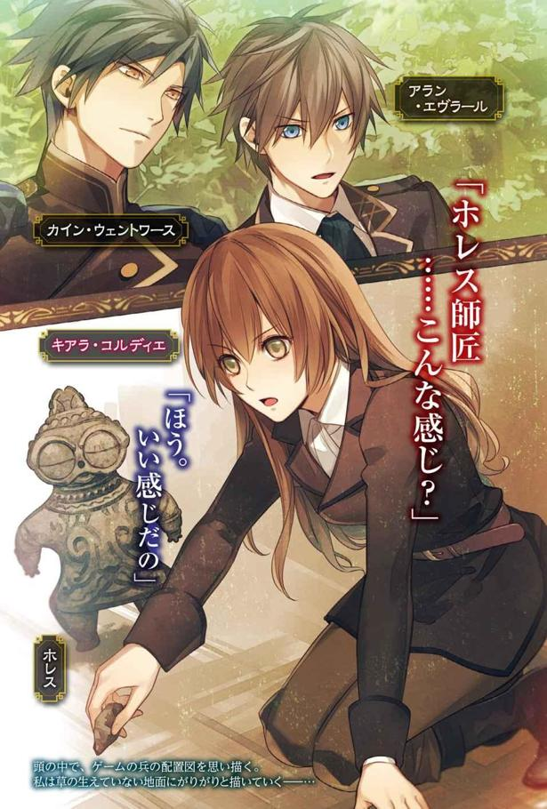
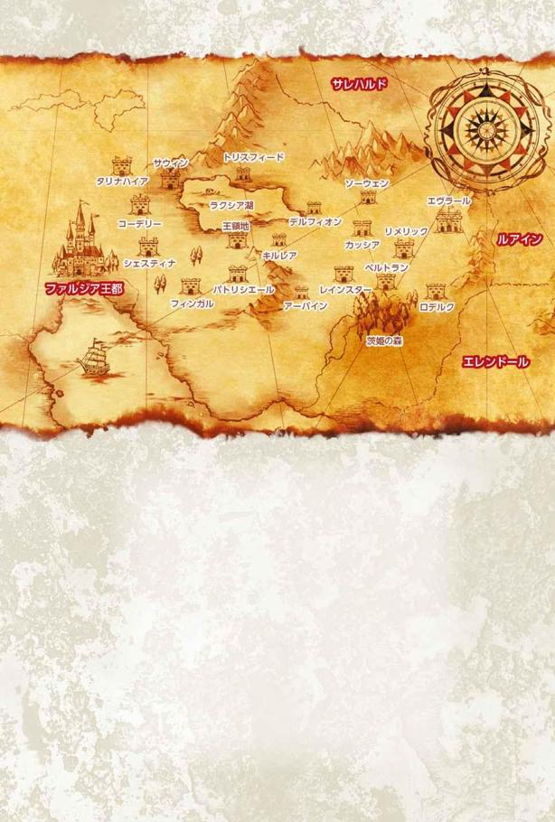
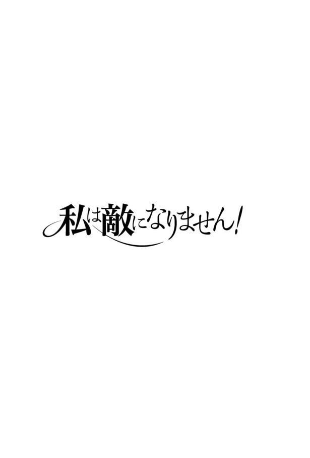
序章
まさかね、と思っていた。
小さい頃から、不思議な夢を見るな、とは思っていたのだ。
それは小さな木造の家に住んでいる夢。
夢の中の自分は、いつだって「ＴＶ」というものに夢中だった。
一面だけ硝子ガラスを貼り付けたような平たい箱には、空から地上を見下ろしたような不思議な光景や、脚を露出した奇妙な衣装を着ている女性などが映っていた。
時々、その夢の中で、今とは全く違う自分の姿を鏡で見ていることもあった。まっすぐな黒髪に黒っぽい目の色で、のっぺりした顔立ちをしている女の子の姿だ。
けれど本来の自分はマロングラッセみたいな髪の色だし、目だって灰緑の冴えない色だ。黒髪黒目になりたい願望があったのだろうかと、磨いた銀器に映った自分の顔をまじまじと見たことがある。
この夢をより鮮明に見始めたのは、私キアラが六歳の時のことだったと思う。
年齢を覚えているのは、私をいじめる父の後妻がやってきた頃だったからだ。父も子供が好きな人じゃなかったので、私が泣いても見て見ぬふりをするし、主達にいい顔をしたい使用人にも、私は避けられる始末。
辛くて泣くしかなかった私だったけど、夢を見るようになってから──ふてぶてしくなった。
まず、父に助けてほしいと期待することをやめた。おかげで心は少し軽くなった。
でもそんな私に、さらに辛い出来事が振りかかるのだ。
三年後に父が亡くなると、私は使用人扱いされるようになってしまった。
もちろんそんなひどいことをしたのは、私を嫌っていた継母だ。継母は私に汚れが目立たない黒い服を一着だけ与え、私物も取り上げた上で毎日掃除をさせたのだ。大切にされる幼い異母弟と比べて、本当に惨めで、私は何度も泣いたものだった。
でも子供の私に反抗なんてできなかった。せめて食べ物を取り上げられないように、従わなかったら、飢え死にするだけだもの。
この辛い状況を耐えられたのは、夢の中で別世界の「家族」に優しくされたからだと思う。
でも使用人生活は、数か月であっけなく終わってしまった。
見知らぬ貴族の家に、養子に出されたからだ。
とはいえ、私を引き取ったパトリシエール伯爵は、優しいおじさんではなかった。伯爵は政治的な手駒になる娘がほしかったらしい。そのために、お金で私を買い取るようにして引き取ったと聞いた。
それでも私は必要な人材だったらしく、養子先では食事を抜かれることがなくて安心した。
綺麗な衣服ももらえたし、令嬢扱いしてくれる使用人達もいる。
愛情は一欠片もないし、皆冷たかったけど。労働をしなくて済むだけマシ、だった。
さらには十一歳になると、貴族の令嬢らしく教会学校の寄宿舎に入れてもらうこともできた。それから三年間は、普通のお嬢様らしく行儀作法などの花嫁修業的な学業をこなしながら、私は虐げられた過去を隠して穏やかな生活を送っていた。
そのうちにあの不思議な夢は間遠になっていったのだけど──。
「考えが甘かった......」
教会学校の寄宿舎の中、漆喰の白い壁が光を反射する明るい自分の部屋で、床の上にうずくまっていた私はため息をつく。
私は養父からの手紙を見て動揺して叫びそうになり、我慢しきった後は、ものすごい絶望感に襲われて座り込んでしまったのだ。
手紙に、年が二回り上のおじさんと結婚せよと書かれていたら、絶望したっておかしくないと思う。しかもその相手、愛人が三人も四人もいるという噂がある人なのだ。一度養子先に来たことがあるので、姿を見たことがある......お顔はウシガエル系だ。
自分も胸を張って自慢できるような美人じゃないけれど、まだ十四歳なんだから、結婚相手に夢を見たって許される年齢だよね!?
思えば養父のパトリシエール伯爵は、私を王妃の侍女にすると言っていた。だから礼儀作法と最低限の教養を身につけたら、卒業後は王宮で働かされるのだと考えていたのだが......私は無知すぎた。王妃様の側に上がるのなら、既婚者でなければならない決まりがあるのだという。
庶子は認めない、という国の方針を守るためだ。万が一国王のお手付きになったとしても、相手が既婚者であれば、夫婦の子供として扱うことができる。おかげで庶子の始末が楽なので、そういった決まりになってしまったらしい。
結婚も嫌だが、仕事先で好みでもないおじさん年齢の国王に言い寄られるのも嫌だ。しかも拒否できないとか、もう逃げたい......。
さらに、王妃様の評判もさほどよいものではない。
マリアンネ王妃様って、隣国のルアインの王女なんだよね。そもそもルアイン王国とファルジア王国は、長年に亘って剣を交えてきた間柄。王妃様が嫁いできたのも、戦争が長引いた結果お互いの国が疲弊したので、やむなく和平を結んだ証だったそうで。
だけど最近、隣国ルアインは東の小国をいくつか侵略したりと、不穏な空気を漂わせてる。
王妃様がルアイン国王の妹なので、ファルジア王国は手を出されないだろうと言われているらしいが、警戒している人も多い。王妃様自身がファルジアの風習に馴染む様子がなく、国王とも仲がよくないと噂されているからだ。
そんな王妃様の下につくってことは、私、もしかして侵略戦争なんてことが発生したら、王妃様の味方ということになるのよね？ 隣国を引き入れた敵って、国中の人に思われちゃうんじゃないの？
今まで悲惨ながらも清く正しく生きていたのに、侵略者の一味にされて、悪役まがいのことしたくない──！
と思った瞬間に、小さな頃から見ていた夢が脳裏によみがえった。
さらに夢にまつわる様々な記憶も、水底から泡が浮かんでくるように頭の中に広がる。
地球の、日本で生きていた十四歳の自分。
姿形は夢で見た黒髪黒目の女の子と同じだ。しかも当時の私がよく遊んでいたゲームのことを思い出して息をのんだ。
私はターン制のシミュレーションゲームが好きだった。リアルを追求した戦闘システムのゲームはめまぐるしすぎるが、その点自分の番、敵の番と交代で行動できるシミュレーションゲームはわかりやすかったから。
そんなゲームの中に、乗っ取られかけた王国を取り戻すために戦う主人公の話がある。
私が好きだった『ファルジア王国戦記』だ。
主人公アランは、王族が殺され、隣国ルアインに侵略されたファルジア王国を救うため立ち上がるのだ。アランが戦うのは、敵国とそれを引き入れた王妃の軍。
で、ゲームの中には、進軍する主人公の邪魔をする魔術師がいた。
王妃マリアンネの侍女、キアラ・クレディアス。私と同じ色の髪と目の人物だ。
私、嫁に行けと言われている先が、クレディアス子爵って人なわけで。結婚したら、私がその名前になるんだけど......。
ちょっ！ 私まさか、悪役になっちゃうの!?
と頭の中がパニックになっているのが、今現在の私の状況だ。
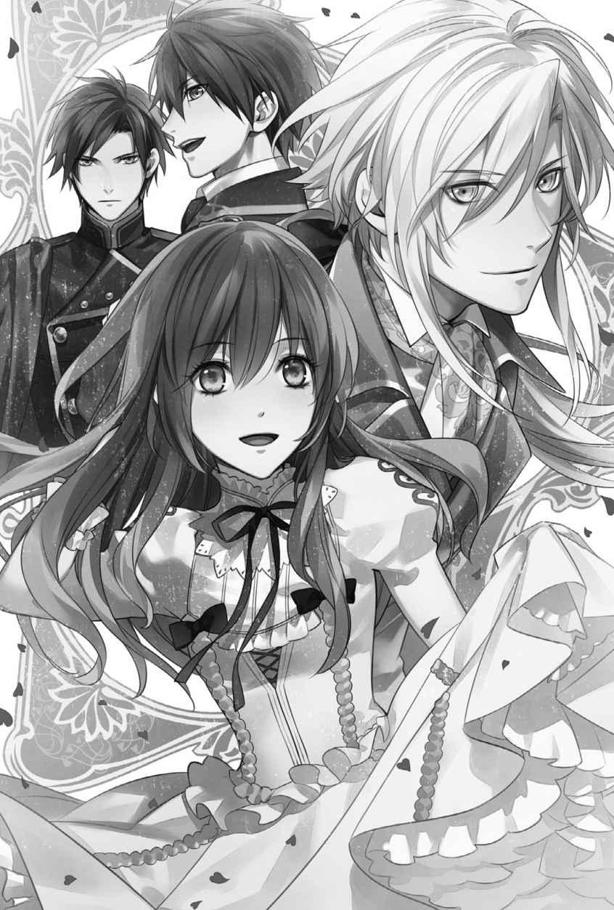
１章 逃亡します！
「うそうそ悪役とか何なの......。いや絶対夢。夢よ。あははは」
思わず口から乾いた笑いが漏れる。
誰だって悪役になんてなりたくないだろう。悪役の最期なんて、悲惨なものが多いのだから。楽しい人生を送りたいよね？ そもそもゲームと同じ世界って何ですかそれ？
でも待って自分、ＴＶゲームだなんて滑稽なものはこの世界にない。きっと脳が夢を見ている時に、変な妄想を作り上げただけ......と思ったところで、気付く。
──この世界らしい考え方でいくならば、鮮明でしっかりと記憶に残る夢って、正夢だと認定されてしまうってことを。
「教会の仕事の一つが、夢解きじゃないのよー！」
近隣の王国に至るまで、ほとんどの人達が信仰しているエレミア聖教。基本的な教えは、清く正しく生きましょうという、よくある代物だ。だけど夢が神からの賜り物と位置づけられ、まるで夢占いみたいな夢解きを真面目に行っているのだ。
例えば「昨日、なんかすごく鮮明にあこがれのカレに告白される夢見ちゃった！ きっとカレも私のこと好きなのよ！」と言うと、前世の日本では「夢と現実の区別がついてない変な人だ」と思われるだろう。
しかしこっちの世界で修道士のみなさんに夢の内容を話すと、夢解きの解説書をめくりつつ「相手が貴方を思っているからかもしれませんね」とか大真面目に解説されるわけだ。
とにかく私は正夢じゃない可能性を探して、脳内に増えた記憶を検証してみた。
「そもそもゲームのキアラは魔術が使えたはずだけど、私はそんなことできないし。それに、周りで使ってる人も見たことないんだけど」
魔法がこの世界にあることは知っている。
王宮お抱え魔術師なんてのも時々いるらしく、戦場ではかなりいい戦力になるというが、魔術師は希少だ。好戦的なルアインだって、最近の戦いでは魔術師を参戦させていない。
どうやってなるのかは門外不出で、魔術師からその弟子へと伝えられていくと小耳にはさんだことはある。ただ、悪魔と契約するのだとか噂されているが。なら、ここがゲームとそっくり同じ世界だとしたら、近い将来、私は悪魔と契約させられるっていうこと？
「やだよ悪魔と契約なんて！」
家族には恵まれず、結婚でも恵まれないことは決定している。その上悪魔と関わるなんて、人生ハードすぎない？
他に否定材料はないかと探してみたが、王妃の名前も一致。主人公の家であるエヴラール辺境伯家というのも存在する。隣国の名前はルアインで一致。......もう詰んだとしか思えない。
しかも敵役だ。
ゲームでは、王妃の引き入れた隣国の軍が駐留する砦や町に戦いをしかけると、何回かに一度、キアラが敵として参戦してくる。
巨大土人形ゴーレムを作製して戦う相手を増やして逃げてしまう、面倒な敵だ。
その後、王城の近くまで進んだ頃になって、ようやくキアラと戦えるようになり、主人公と仲間たちが倒すのだ。
呼び出した土人形ゴーレムを倒されると、キアラが誰かの剣で刺し貫かれる様子がアニメーションで表示される。
その殺害シーンを思い出した私は、鳥肌が立ってきた。
「うう、若い身空で死にたくない......ってそうだ。結婚しなきゃいいんじゃない？」
キアラ・クレディアスにならなければいい。今現在魔法は使えないのだから、結婚後に悪魔と契約させられるのだろう。今なら魔術師にもならずに、ひっそりと生きていけるのではないだろうか。それなら戦争に駆り出されることもない。
──よし、逃げよう。
決めた私は、寝台の下から小さなトランクケースを引き出し、鍵を開けて財布を取り出す。
そこには伯爵から教会学校へ入る前に渡されたお金が、十万シエントほど入っている。これは本来、貴族令嬢である私が寮の召使いに部屋の掃除を依頼したり、細々とした用事を代行させるために使うはずだったものだ。
けれど私は、自分で掃除もやっていた。毒薬を所持しているからだ。養父のパトリシエール伯爵が、私に持たせたのだ。万が一のためにとか言ってたけど、あのおじさんは毒を持たせて何をさせる気だったんだろう......。
毒は捨ててしまいたかったんだけど、適当に中身を空けた場所の庭の木とか草が枯れるのではないかと思ったので、何もできなかった。人が死ぬ量だけは教えられたけど、成分とか全くわからなかったから。
......そうか。毒を持たせるような養父のことだ。結婚した私に悪魔と契約させる可能性って、すごい高いじゃないか。
今更それに気付いた自分に呆れつつ、私は財布を黒いスカートのポケットにねじ込む。次にスカートをたくし上げて、太腿にナイフと毒薬の瓶を特製の革ベルトで括り付けた。
ナイフでの戦い方は、伯爵家に養子になった直後に教えられた。......これも護身のためとか言ってたけど。毒を持たせたり刃物で戦えるようにしたり、パトリシエール伯爵は私を暗殺者にでもしたかったのだろうか。
しかしこれからは身一つで生きていかなければならない。結構物騒なこの世界で、武器もなしに生きていける気がしない。そこに関しては感謝しよう。
さて準備はできた。
他の荷物を持たずに部屋を出た私は、なるべく落ち着いた足取りで寄宿舎を後にする。荷物なんて持っていたら、誰かに見咎められた時に「教科書を忘れて、授業棟へ取りに行くの」とか誤魔化せないので。
また、誰かを頼ろうとは思わなかった。浅く付き合う友達はいても、彼女達は生粋の貴族のご令嬢。親に逆らって一人で生きるんだ！ と話したところで、驚かせ、戸惑わせるだけだ。下手をすると親切心から親元に連絡されてしまうかもしれない。それは困るのだ。
私は人と会わなさそうなルートを通って、教会学校の敷地の端まで移動した。
生け垣と学校の石壁の間に隠れ、一度息をつく。
すぐ目の前には、以前から知っていた壁にあいた穴がある。あとはここから出るのみだ。
教会学校のある丘から一番近い町までは、目と鼻の先だ。人ごみに紛れて衣服を取りかえてしまえば、教会学校から逃げてきたことを隠せるだろう。
その後は最速でこの領地から外へ出よう。
できれば他国へ行きたいが、見知らぬ土地で暮らすのでさえ大変そうなのに、風習も違う他国へ行くのは怖い。幸いこの国はそこそこ広い。有名な都市へ行かなければ見つかりにくいだろう。貴族令嬢として育てたはずの娘が、どこかの貧しい町で生活できるとは思うまい。
「田舎よ。田舎に行こう。でもちょっとは裕福な商人とかが暮らしてるぐらいの町がいいわ」
そういう所なら、仕事もそこそこありそうだ。
大まかな方針を決めた私は、夕暮れを待たずに教会学校の壁が崩れた場所から抜け出した。
学校の周囲は、丈の高い林に囲まれている。そこをつっきろうと足を動かしかけたその時、ふいに馬のいななきが聞こえた。
門のほうだ。普段は、司祭が出入りする時と、食料を運ぶ馬車が朝やってくる以外には教会学校を訪れる者はほとんどいない。急遽、家に帰ることになった生徒でもいるのだろうか。それともパトリシエール伯爵が、私を連れ戻そうと、手紙と同時に馬車も寄越していたとか？
様子をうかがいに行った私は、乗り込もうとしている人物を見てほっとする。私と同じくらいの年齢の男子生徒が馬車の前にいた。どこかで見たことがあるような気がする人だ。
自分と関係ないとわかって、気持ちに余裕ができたせいだろうか。荷物を積んだもう一つの馬車が私の目についた。幌がかかっていて中にどれだけの荷物があるのかはわからないが、そこに潜り込めないだろうか？
馬車に乗れば、早く遠くまで逃げることができる。もし伯爵が追っ手を差し向けてきたとしても、姿をくらましやすい。こっそり便乗して、教会学校がある王領の外へ出たところですぐ降りれば、相手にもそう迷惑はかからないだろう。
隙をうかがっていると、乗り込もうとしていた黒髪の少年が反転して学校内へ走っていく。忘れ物をしたようだ。従者らしき銀の髪の少年も後に続く。
護衛についてきたのだろう、馬上の騎士達五名もそちらに気を取られた。
──女神が笛を吹いた。
思いがけない好機チャンスがやってきた時、人はそう言う。美しい女神の笛の音に引き寄せられるように、奇跡がやってきたのだと。
その時の私にも、笛の音が聞こえた気がした。
気付けば、私は衝動的に走り出し、幌付きの荷馬車に乗り込んでいた。
女神の奇跡のおかげか、誰も私に気付かなかったようだ。しばらくして、馬車は何事もなかったかのようにゆっくりと動きだす。
ガタゴトと荷物が音を立てて揺れだしてから、私は馬車の奥へと移動した。
これなら物音を立てても見つかりにくいからだ。
大小さまざまな箱が詰まれた荷馬車の上は、足の踏み場もなかった。けれど大きな箱の中に布で覆った小さな棚が入っていたので、それを取り出して転がり落ちない場所へ置き、代わりに自分が入ることにした。
閉ざされた空間の、しかも見つかりにくい場所に潜り込んだ私は一息つく。
すると緊張の糸がほぐれたのか、急に眠くなってきた。
私は揺れるたびに箱の内側にぶつかって背中が痛むことも気にせず、いつのまにか眠り込んでしまったのだった。
◇◇◇
エヴラール辺境伯家の一行は、教会学校を出発して五時間後に小さな町へ到着した。
手配していた宿も小さなもので、煉瓦造りの民家を改造したような建物だった。子息であるアランにあてがわれた部屋も、手を広げて二歩歩いたらすぐに手が壁につくような狭さだ。
食事も加工肉を焼いたものと野菜が入ったスープに堅めのパンという簡素さ。
しかしアランも騎士達も、幼い頃から戦場を想定した粗食や野営訓練に慣らされている。国境防衛の要である辺境伯家だからこそだ。おかげで粗食にも文句はなかった。
食事後、アランは同じような年頃の従者と一緒に、宿の外を歩いていた。久しぶりに再会した者同士、話し合いたいことはいくらでもあった。
護衛を一人連れた状態で、二人は仲よさそうに会話をしながら先へ進む。しかし彼らの会話の内容を聞く者がいれば、奇妙なものだとわかっただろう。
「正直、大人しく馬車に乗ってるのは息が詰まるな」
「私もだよ。多少脚が辛くなっても、馬を駆けさせたほうが気分はいい」
「かといって、馬車以外に乗るわけにもいかないし」
「君はウェントワースの後ろにでも乗せてもらえばいいよ」
「噓だろ。十五歳にもなって男と二人乗りとかありえないって」
「馬が足りない以上、それしかないだろう？」
嫌そうな表情になるアランと、くすくすと笑う従者の少年の口調は、対等な関係にしか思えないものだった。
しばらく軽口を叩きあいながら歩いていた二人だったが、馬車を停めた車庫の近くで、従者の少年が足を止めた。
「......どうかしたのか？ レジー」
「アラン、耳を澄ませてみて」
レジーと呼ばれた従者が青い瞳を閉じる様子に促され、アランも口を閉ざして耳に集中する。やがてアランの耳にも、レジーが何を聞き取ったのかわかった。
「...ソーセージ......クリーム......もう食べらんない」
かすかに聞こえる声。その源は、車庫に置かれた馬車の中だ。今、そこに馬車を停めているのはアラン達一行しかいない。
アランは表情をこわばらせる。
漏れ聞こえる声は女の子のものだが、油断はできない。なにせ辺境伯家の馬車に、誰にも気付かれずに潜り込めるような人間だ。暗殺目的の刺客かもしれない。
「しかしこれ、寝言か？ 今のうちに引きずり出さないと」
護衛を呼ぶアランとは違い、レジーのほうは首を傾げる。
「でもさ、暗殺しようなんて人間が、馬車に乗ったまま居眠りする？ 護衛だって宿の人間だっているんだから、悠長に寝てたらすぐ見つかるのに」
「レジーは暢気だなぁ」
呆れるアランだったが、レジーも寝言らしきつぶやきの主を調べることには賛成のようだ。
背後から近づいてきた護衛に、アランが命じる。
「誰か馬車の中にいるみたいだ」
「お調べしますので、離れていて下さい」
背の高い黒髪の騎士が、隠れてついてきていた他の騎士達を手招きした。一人をアラン達の側につけると、黒髪の騎士はもう一人と一緒に車庫へと入っていく。
声の発生源を確かめれば、人が潜んでいるのはアラン達が乗車していたほうではなく、荷物を積んだ幌馬車だったようだ。
馬車に乗り込んだ騎士が、大柄なせいで奥に入れず、箱をどかそうとしている。
「待ってウェントワース」
それを見ていたレジーが、するりとそちらへ駆けていった。
「おい、レジー！」
大声で呼ぶわけにもいかず、小声で引き留めようとしたアランだったが、その間にレジーは馬車の前側から荷台に乗り込んでしまった。
後部にいた騎士ウェントワースも、急いで止めようとやってきたが時既に遅し。呆然としている間に、レジーが再び前側の幌をかき分けて顔を出したので、全員がほっと息をついた。
「おい、レジー。勝手なことすんなよ。立場考えろよバカ」
「大丈夫だよ。......ほら」
そう言って幌を脱けだしたレジーが抱えていたのは、見覚えのある黒の制服を着た、薄茶色の髪の少女だった。自分達よりも年下のように見える。
「中で寝てたよ」
レジーはにっこりと微笑んで言う。
「しかもアランがいた学校の制服着てるってことは、身元も確かなんじゃない？」
特に危険はなさそうだというレジーに、アランはそれでもむっつりとした顔で注意した。
「制服なんて誰かの物を奪うことだってできるだろ。......まぁ、確かに平民の女には見えないけど。しかし抱えられても熟睡してるってどういう神経してんだ？」
「箱から引き上げても、全然起きないんだよね」
異常だった。熟睡していても、抱き上げられるようなことになれば普通は起きるはずだ。
「レジー様、その少女の身柄をお預け下さい。調べる必要があります」
騎士ウェントワースに言われて、レジーも腕の中の少女を差し出した。
ウェントワースは少女を抱えたまま、宿の部屋に戻る。アラン達もついていった。
宿の一室に入ると、彼は寝台に少女を横たわらせる。
それでも目覚めない彼女は、室内の明かりの中で見ると益々貴族令嬢にしか見えなかった。
少し乱れていても、毎日梳られていたのがわかる艶やかな淡い色合いの茶の髪。日に晒されすぎていない白い肌。水仕事の痕などない手や指。脱がせたブーツも、誰かのを借りたものではないようだ。ぴったりと彼女の足に合っているので、彼女のために仕立てさせた代物だろう。
さすがにウェントワースも、貴族令嬢がたまたま潜り込んだという線が濃厚になったと考えたようだ。
「本当に身元が確かな人物でしたら、アラン様から謝罪をお願いいたします」
そう言いながら、衣服のポケットの中を改める。入っていたのは、柔らかな木綿のハンカチ。そして財布。財布の中身もそこそこあり、平民の疑いはますます遠ざかる。
そして白い便せんを上着の隠しポケットから見つけた。
「手紙？」
「やはり学校の生徒だったようですね。ご覧下さい」
ウェントワースがアランに手紙を差し出す。受け取り、短い文面が書かれた手紙をレジーと一緒に読んだ。
送り主は、パトリシエール伯爵。彼女は娘らしい。
それにしては乱暴というか、使用人に命じるかのような内容で、しかも結婚相手が決まったこと。学業を切り上げ急ぎ婚儀を挙げるので、迎えを寄越すというものだった。
「しかもクレディアス子爵か......」
「さすがに気の毒だね」
親子ほどの年の差だけならまだしも、好色で妾を何人も家に囲っているという噂は、アラン達でも知っていた。ということは、手紙の宛先であるキアラという名のこの少女は、結婚を嫌がって逃げてきたのだろうか。
それにしても彼女はまだ目覚めなかった。着衣を探られたのだから、驚いて飛び起きてもおかしくないのに。
疑問に首をひねるアランの横で、レジーがすん、と何かを嗅いで言った。
「ああ、これが原因だよアラン。便せんに眠り薬が塗られてる」
「は!?」
アランは思わず手紙を取り落としそうになった。それを人差し指と中指で、ふわりと挟んでレジーが取り上げた。
「匂いがするから、中身を読んでいるうちに吸い込んで効果が出るようになっているんじゃないかな。時間が経ってるからもう効力は薄まってるみたいだけど、封筒から出した瞬間ならまだ拡散しきってないし、この子はかなりの量を吸い込んでると思うよ」
そうしてレジーが、じっと真剣な表情でキアラという少女を見下ろす。
「伯爵は、眠らせて逃げられないようにした上で、彼女を連れていく気だったんだろうな」
「自分の娘にしては、扱いがひどくないか？」
無理やり政略結婚させるため、睡眠薬までも使うというのはどういうことだろうか。
いつもは無表情なウェントワースも、気の毒そうな目を彼女に向けていた。
「嫌がるのは織り込み済みで、目が覚めたら既成事実後......にでもして、結婚から逃げられないようにするつもりだったんだろうな」
レジーは彼女に起こるはずだった出来事をさらりと推測する。
「なんにせよ、私達を狙う暗殺者などではないようだね」
◇◇◇
そんな話し合いがもたれていたとは露知らず。
私はぐっすりと眠り続け、日がそこそこ高くなる頃に目を覚ました。
深く眠っていた感覚は身体に残っていたので、堅い木の箱の中にいるっていうのに、どうしてこんなに熟睡できたんだろうと思いながら身じろぎする。
意外に自分は眠る場所が気にならない質なのだろうか。でもなんだかちゃんと寝台の上に横たわっているみたいだと考えながら目を開けると......私を覗き込んでいた見知らぬ年上の男性と目が合った。
「わわっ、ぎゃああああっ！ げほげほっ」
驚いて叫び、そのせいで咳き込み、くの字に身体を丸める。
目に涙が浮くほど咳き込み続けていると、さっきの男性が背中をさすってくれる。うう、ありがとうございます。でも安心できない。
「あの、すみませ...ごほ...ん」
少しは落ち着いたところで礼を言って、手の主を見上げる。やっぱりさっきの男の人だ。
黒髪の青年は私の様子に動揺したふうもなく、背中から手を離した後も、実験結果を見守る研究者のような目を向けてくる。彼が着ている裾長の濃灰色の服は厚手の生地で、ところどころの装飾が手が込んでいる。その上から着ている青の長いマントといい、腰の剣といい、おそらくどこかの家に仕える騎士だろう。
私のほうも、寝起きでぼんやりしていたせいで、最初はほんとに何も理解できなかった。けれど一瞬後に、あ、ここ馬車の中じゃないや、と気付き。次にようやく自分が寝ていたのが寝台で、箱の中じゃなくどこかの部屋だと認識し。
飛び起きるとソッコーで土下座した。
「ひぃぃぃっ、無断乗車すみませんでしたあああっ！」
ようやく、馬車の中で眠ってるところを見つかったことを悟ったのだ。
黙って乗せてもらったことを許してもらうには、とにかく謝るしかない。だから平身低頭で私は謝り倒した。
「つい出来心で乗ってしまって、申し訳ないです！ 馬車を見た瞬間、私の脳内で女神の笛の音が響いちゃって！ あの、すぐにおいとましてもうご迷惑をおかけしませんので！ そうだ乗車賃置いていきます！ お詫びの気持ちも込めて色つけますんで、これで勘弁してやってください！」
ひどい動揺の中、震える手でポケットの財布から取り出したのが金貨だった。私はそれを置いて立ち上がろうとして、そのまま前のめりに寝台から落ちた。
「ぎゃあ！」
がたんと結構大きな音を立てて木の床に落ちた私は、痛いのと、心理的ダメージが大きすぎたのとで起き上がれなくなる。無断乗車の上、居眠りしていたのを発見されて、介抱されたあげくに寝台から落ちるとか、めちゃくちゃ恥ずかしい。今すぐどこかに隠れたい。
しかも青年は笑ってくれもしないのだ。気まずい......。
どうしていいのかわからなくて、落ちた体勢のまま動けずにいると、誰かが笑いだした。
「くくっ、あははっ、初めて女の子が寝台から落ちるの見た！」
屈託なく笑う声に、思わず顔を上げる。今まで部屋の中には無表情な青年しかいなかったのだが、いつの間にか部屋の扉が開いていて、そこに二人の少年が立っていた。
私が乗った馬車の持ち主だろう、教会学校の制服である黒のジャケットとズボン姿の黒髪の少年は、呆然としている。大笑いしているのは、その隣の銀の髪の少年だ。
首元で結んだ銀の髪は艶やかで、耳にかかる横髪に縁取られた顔も、それに負けないほど色素の薄い肌の色だ。笑いすぎて涙が浮かんでいる目は深い青で、濃紺のジャケットもその下の詰め襟の白い上着も、衣装の種類としては従者のものだ。裾長のジャケットには手紙等を入れておけるような大きなポケットがあるからだ。
でも彼の服を聖者の衣装と錯覚しそうになる。なぜならやたら綺麗な顔立ちをしていたからだ。
「て......」
天使がいる。そう口走りそうになって、私は自重した。
私と同じぐらいの年頃の男子だ。天使みたいだと言われて喜ぶかどうかわからない。けれど目が離せない。どこか懐かしいその顔から。
ややあって、こちらもどこか見覚えのある黒髪の少年が、銀髪の少年の腕をつついた。
「おいレジー笑いすぎだ」
「ごめんアラン。なんかツボに入っちゃって。......ところで君、大丈夫？ 立てる？」
そう言ってレジーという名の銀髪の少年が、私に近づいて手をさしのべてくれる。
ぼんやりしていた私は、なにげなくその手を借りようと手を伸ばしたが、
「レジー！」
「レジー殿」
二方向から一斉に制止の呼びかけが響いて、思わず手の動きを止めた。
触ったからって嚙みつかないよと考えたものの、二人が警戒する理由に気付いた。
そうだ。私ってば無賃乗車した不審者じゃないか。従者とはいえ、不用意に不審者と接触するのを他の二人は危惧したんだろう。
だから自分で立ち上がろうと思ったのだが、ひっこめかけた手首がはっしと握られる。
「問題ないよアラン、ウェントワース。だってこれ、たぶん薬の影響じゃないかな」
引っ張り上げられて自然と立ち上がる形になった私だったが、
「えっ？ わわっ」
足の力が入らなくて、腰を浮かせながらぶら下がってしまう。
寝すぎたからといって、足の力が萎えるものだろうか。自分の状態のおかしさに驚いていると、吊り上げるのをやめたのに、まだ手を握っているレジーが他の二人に話しかけていた。
「ほらね。逃がさないための薬の影響だと思うよ。慌てたぐらいで、寝台からああまで見事に落ちるのは変だと思ったんだ」
「え？ 逃がさないため？」
どうやらレジー達にも寝台から落下する姿を目撃されてしまったようだが、それよりも気になる単語があった。逃がさないためって、一体誰からなのか。
そのせいで立ち上がれないってことは、薬を使われた？
いつ、どうやって？ まさかこの人達のせいなのかと疑心暗鬼になる私に、それまで黙っていた黒髪のアランが教えてくれた。
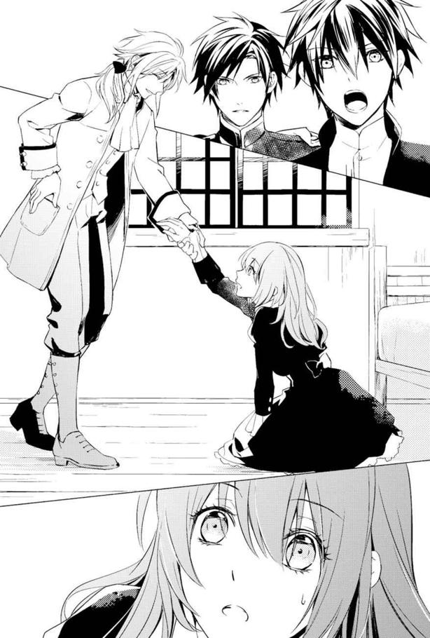
「お前は馬車の中で眠っているところを発見された」
うんそれは理解できる。ウトウトしているところまでは記憶にあったから。
「夜中に荷馬車から引きずり出しても、お前は目覚めなかった。話しかけても揺すっても起きなかった。とりあえず不審者だからな。持ち物を改めさせてもらった。そうしたらお前の持っていたこの手紙に、薬が塗られていることがわかった」
アランが差し出したのは、パトリシエール伯爵から送られてきた、結婚通告の手紙だ。
「え......なんで、手紙に......？」
そこまでする必要があるのかと恐れおののいていると、アランが言う。
「キアラ・パトリシエール嬢。君が手紙に書かれている結婚から逃げ出さないように、眠らされることになっていたんだろう。けれど薬が効くより先に、君は逃げ出した。パトリシエール伯爵は、君が逃げ出しかねないと考えて、先手を打っておいたのだろう」
「う......」
確かに私は手紙をもらってすぐ逃亡した。
なにせ養女で、肉親の情はない。だから政略結婚が壊れてもかまわないと考えて、すぐさま逃亡を決意したわけだ。もう十四歳になったのだから、がんばれば自分一人でも生きていけるかもしれないと、そう思って。
しかしまさか、政略結婚のために薬で眠らされて連れ戻される手はずになっていたなんて。......クレディアス子爵って同年配の男から見ても、薬で縛り付けないと結婚を承諾しないと推測できるほどひどい男だったのか。
逃げてよかったと思ったとたん、安堵やら衝撃やらで、私はがっくりとうなだれてしまう。なんか、疲れた。
「大丈夫？」
まだ手を握ったままのレジーが、親切にも尋ねてくれる。
「......気絶したいです。けど、そしたらまた面倒をおかけしてしまいそうで、耐えてます」
人事不省になった人間は、運ぶのも厄介だろう。ただでさえ一度、眠りこけていたのを寝かせてもらったりしていたのだ。これ以上、悪印象を持たれたくない。
だから必死に耐えていたら、またレジーがふき出す。本当によく笑う人だな......。
その後、私は彼らに事情を話すことになった。
お金で買われて養女になり、手紙に書いてあるとおり結婚させられそうになったが、相手の評判が悪すぎて逃げ出したことを。
前世の記憶とか、ゲームの記憶がーなんて話せるわけもない。なので肝心要の「悪役になって死ぬとかカンベンして！」という話はできなかったのだが、養女として買われた身だという話だけで、私が強制的に結婚させられそうになった理由に納得してくれたようだ。
世の中に情を持たない親子はたくさんいるだろうが、血の繫がらない親子だと聞けば、薬まで使って逃げ出さないようにされたことも、理解しやすかったのだろう。
「しかし一人で寮を飛び出して、どうする気だったんだ？」
呆れたように言ったのは、私と対面するような位置にある寝台に腰掛けたアランだ。
彼は私より一つ年上の十五歳。
どうりで彼のことを知らなかったわけだ。学校の授業はたいていが男女別、もしくは年齢別になっていて、ごくわずかな神学の時間だけが男女合同の授業だった。誰がいるのやら、よほど興味があって調べるでもしなければ知りようがないので仕方ないと思う。
「路銀も一応あるし、どこか別な領地の片隅で、縫い子でもして暮らしていこうかと......」
「その前に、どこかの路上で人攫いにあうでしょうね」
ぼそりと言ったのは、無表情な青年ウェントワースさんだ。アランの護衛騎士だという。
ウェントワースさんの言葉はまったくもって正論だが、私には他にも逃げねばならない理由があるわけで。
......内緒にすることが多いって、あれこれと素直に話せなくて結構面倒だな。
誤魔化すために目をそらしていたら、レジーという名のアランの従者が言った。
「結婚しても、道端で攫われるのと変わりない状況になっただろうけどね」
確かに。見知らぬ人に売られるか、噂を聞き知ってる身元の確かなトンデモ親父に売られるかの差でしかない。
「どっちへ転んでも、泥沼に落ちるのだけは間違いないですね」
レジーのおかげで、ウェントワースさんもそれ以上追及してくることなく、口を閉ざした。よしよし、レジー君ありがとう。
それにしてもレジーは変な人だ。
従者だっていうのに、主であるアランにもへりくだった様子がないし、何か複雑な出自の末に貴族に仕えることになった人なんだろうか。
不思議には思ったが、彼らとはここまでの縁だ。追及すまい。むしろ関わっちゃいけないのだと思っている。なにせアランの名前だけではぱっと思い出せなかったのだが、私は彼の家名を聞いて悲鳴を上げそうになったのだ。
アラン・エヴラール。エヴラール辺境伯の子息だという彼。
レジーのことも見覚えがあるなとは思ったのだが、それはアランも同じだった。
その原因は、教会学校で見たからというわけではなく、ゲームの主人公だったからだ。
......ゲームよりも幼い顔立ちなので、気付くのが遅れたんだよ。
ゲーム開始時の彼は十七歳だったはず。今はまだウェントワースさんの顎までしかない身長がもっと伸びて、顔立ちも今よりずっと大人びたものになるのだ。
男子の顔立ちって、中学生から高校生になったら、やたら大人っぽくというかごつい感じになってくるもんね。それにゲームのアランはもっと陰がある表情だったのだ。まっすぐ前しか見る気はない、みたいな。
あともう一つ、アランって名前でぴんとこなかった理由がある。アランという名前がそれほど特別ではないからだ。教会学校で時々話をしたご令嬢の兄弟にも、二人ぐらいアランという名前の人がいた。
おかげで「あー、この人もアランさんなんだ。生まれた当時流行してたのかなー」と適当に考えてしまっていたわけで。
そういった理由で、まだ悪役にはなってないものの、一緒にいるのはなんか居心地が悪い。だって順当に（？）進んでいたら、私を殺すはずだった相手なんだから。
それにゲームのようなしがらみはないけど、無賃乗車した身だ。やっぱり身の置き所がないような気がして、私は再び別れを促した。
「あの、とりあえず勝手に乗ってすみませんでした。身動きできないのも、そのうち治るでしょうし。ご予定があるでしょうから、どうぞ私を置いて出発なさって下さい」
私が眠りこけていたせいで、日は大分高い位置にある。もうすぐお昼じゃないかな。
きっと予定に支障が出ているはずだ。だから先に行ってくれと申し出たのだが、なぜか彼らは受け入れてくれなかった。
「でも、眠り薬まで使って学校から連れていかれる予定だったんだよね？ ちょっと逃げたぐらいで、君の養父は諦めてくれるのかな？」
不穏な言葉を口にするレジーに、アランが渋い表情をする。
「ただでさえ教会学校を出入りする者なんて少ないんだ。女の足で行ける場所を探しても見つからなかったら、同じ日に出発した僕達にも接触してくるだろう。おまけにあっちは使った薬の効果をよくわかっているはずだ。まだ効果が切れてない以上、道端に倒れていないのなら、宿に泊まっているだろうとしらみつぶしに探すだろう。お前、ここにいるとすぐ見つかるぞ？」
「う......」
アランの言うとおりだ。
眠らせたところを連れていくつもりなら、昨日のうちにパトリシエール伯爵は迎えを寄越しているだろう。すぐに私がいないことはわかってしまっただろうし、学校に近い町を探すのなど、それほど時間がかかるものではない。
とはいえ私はまだ足を動かせない。
どうしようかと頭を悩ませる私の耳に、ため息が聞こえた。
「正直、わけあってこちらも不審者を抱えたくはないんだが......」
アランがちらとレジーに視線を向ける。
「私はいいと思うよ。それに君は優しいからね。足が動かずに狩られるのを待つだけの子羊を、見て見ぬ振りなんてしにくいだろう？」
誉め言葉のはずなのだが、それを聞いたアランが顔をしかめた。
「お人好しだと言いたいんだろう。だが、それを薦めるお前も、相当なお人好しだと思うぞ」
「そう？」
レジーはけろっとした表情で返した。
「だって、彼女を抱えることになるのはアラン、君のエヴラール辺境伯家だからね」
「警備上も秘密を守る上でも、余計な拾い物をするのはあまり褒められたことじゃないんだぞ？」
「わかってるよ。でも君だって、彼女を放り出すのは気分が悪いだろう？」
「ふん」
アランは何か言いたそうにしながらも、レジーの言葉を否定も肯定もせず、私に向き直る。
その頃には、私もさすがに察していた。
どうやらアランが、私になんらかの手をさしのべてくれる気でいるらしい。遠くの町まで馬車に乗せていってくれるんだろうか。
じっとアランを見つめると、彼も私が期待でいっぱいになっているのがわかったのだろう。
「そう喜ぶな。お前にとってはあまり歓迎できない話かもしれないぞ」
「でも、聞いてみないとわからないですし！」
だから早く話して下さいな。そう言うと、レジーが「薬を盛られたはずなのに、落ち込みもしないし、ずいぶん前向きな人だなぁ」と感心したようにつぶやいた。
だって落ち込んでなんていられない。逃げるのが先で、泣くのは後だ！
そう心の中で答えながら待っていると、アランがため息交じりに告げた。
「お前の逃亡に手を貸してやらなくもない。お前が望むのなら、僕の家で雇ってやる。適当な町で放り出しても、身を持ち崩すのが関の山だろう。寝覚めが悪くなるぐらいなら、連れていったほうがマシだからな」
雇う？ てことは、主人公側の人間になるってことだ。なら、悪役になる可能性も低いと判断した私は、即答した。
「もちろんいいです！ ぜひよろしく！」
「話を最後まで聞け」
勢い込んで返事をすると、アランにストップをかけられた。
「うちで働く場合、パトリシエール伯爵といざこざを起こさないよう、お前の身分も家名も伏せてもらわなければならない。うちとパトリシエールは仲がいいわけではないからな」
パトリシエール伯爵は昔飛び地としてルアイン側に領地を持っていた関係で、ルアイン寄りの人間だ。それもあっていずれ敵対するのだが、ルアインと戦う前線地でもあるエヴラールとは元から関係が悪いのだ。
「お前の存在を隠すために、平民の仕事をさせるかもしれない。それが嫌でも、許可なく領地から出ることは許さない。情報を漏らされては困るからな。決まりを破ったら、即牢屋行きだ。それでもこの話を受けるか？」
念を押されたが、私にとっては願ってもない内容だ。アランの領地から出なければ敵役になる可能性はぐんと下がる。
何より、馬車に無断で乗った女を寝台で眠らせてくれたあげく、今まで無体なことなどしなかった。きっとエヴラールの人々は紳士が多いのだろう。
まぁゲームの主人公だもんね。品行方正に決まってる。
しかも領主の元で雇われるなら、町でお針子仕事をもらって生活するよりも実入りが多いだろう。こんな好条件で安全な勤め先は他にない。
「問題ありません、ぜひエヴラール家に就職させてください！ 平民扱いってことは家名は邪魔ですよね、ぽいっとします！ 名前も変えたほうがいいですかね？ ご要望があったらそうしますよ！」
満面の笑みでそう言えば、アランは毒気を抜かれたように呆然とした表情で「本気か......」とつぶやき、ウェントワースさんが目を丸くした。
そしてレジーは、またしてもお腹を抱えて苦しそうに肩を震わせ始める。
アランはそんなレジーを見て、困惑しているようだった。普段はこの人、そんなに笑わない人なんだろうか？
そんなわけで私はエヴラール家に就職が決まり、私を連れて出発した一行は、北東へ街道を進んでいた。
まだ歩けない私は、荷馬車の中に座らせてもらっている。
その時にウェントワースさんというあの青年騎士にお姫様だっこで運んでもらったんだけども、あれ、結構恥ずかしいね......。ただでさえ動悸・息切れで薬がほしくなるのに、レジーやアラン他、騎士の皆さまに見られている中というのは気まずかった。
けれど持ち上げてもらって、なぜ足が上手く動かせないのかがわかった。痺れて感覚が全くなかったのだ。おかげで膝裏を支えられているのに、触られてる感触がないまま足が浮いてる状態で、気味が悪かった。
ちなみに乗車する馬車も、本当は女の子だからアラン達と一緒の馬車に......とも言われたのだが、私が断った。平民扱いにするって言われたし、それなら仕える家のお坊ちゃまと同乗とかありえないんじゃない？ と考えたのだ。
「それにしても、レジーって誰なんだろ......」
湧いてきた記憶の中にあるゲームに、レジーのような人はいただろうか。
結構大まかなことと、メインになる戦闘や攻略のことしか覚えていないせいで、見覚えがあるのに思い出せない。でもあれだけ主人公と親しいんだから、ゲームに出ているはずなんだけどなぁ。
「戦闘シミュレーションで、従者の出番がないから、なのかな？」
そう考えると納得できる。あのゲーム、簡単な会話とかちょっとしたシーンのアニメーションは出てくるけど、それ以外は本当にストイックに戦闘ばかりのゲームなのだ。
その可能性が高そうだと思いながら、私はようやく感覚が戻ってきた足を少しぱたぱたと動かす。
実は荷台の箱を少し動かしてもらった上、ちょうどいい高さの箱の上に、クッションを敷いてもらっている。
最初は足の力が入らなかったせいで、馬車が揺れるたびに転がり落ちそうになっていたが、一時間も経つと足も動かせるようになった。
「それにしても、やっぱり逃げてよかったわ」
眠り薬のことを聞いて、しみじみと自分の判断は正しかったと思った。
あの時逃げなかったら、危うく昏倒したところを「家の者でーす」とやってきた人間に回収されて......ああ、その先は考えたくない。王宮に勤める前提とはいえ、しばらくは年上すぎるおじさんの慰み者になりかねない状況だったんだから。
「ああ、だからかな......」
ゲームのキアラが王妃に言われるがままに戦ったのは。
そんな目に遭ったら精神的にどん底に落ちるだろう。その上で、王妃の側にい続ければ婚家に戻らなくて済むとなったら、王妃に依存して離れられなくなるのも当然だ。
......むしろ、パトリシエール伯爵がそうやって王妃に懐くよう仕向けた、とも考えられるので、あのおじさんの顔を思い出してぞっとしたわけだが。
考え事をしているうちに、お昼になった。
私もパンに切れ目を入れて、炙った肉をはさんだものを渡されて口にした。ちょっとぱさついているのは仕方ない。水で流しこんで一息ついたところで、私の視界に入る場所にレジーがやってくる。
少し離れた場所でレジーは手招きしていた。周囲の騎士達も、それが見えているのに何も言わない。
何の用事だろうと、私は素直にレジーの元まで歩いていく。
彼は道を外れた木立の中に私を連れていった。秋の晴れた空が見える林の中は、乾燥した空気の中に降り積もった落ち葉の香りが漂っていた。こんな場所で何の内緒の話をするのだろう。
首を傾げていると、立ち止まったレジーが微笑みながら言った。
「......君の脚。見せてくれる？」
「え、ええっ!?」
脚見せてくれって何？
だってこの世界で、十歳以上の女の子は足首から上は露出しちゃいけないし、うっかり見られたら「破廉恥な！」って叱られるんだよ？ 見せてほしいって言われるシチュエーションなんて、色ごとが関係することぐらいのはずだ。
はっ......まさかレジーって、こんな綺麗な顔をしておきながら、若い身空で女の子をつまみ食いするとんでもない人なんだろうか。
怖くなって、私は一歩後退る。
男女のことについて予備知識はあるものの、前世の記憶もなんでか十四歳止まりの自分だ。男女関係のごにょごにょ......な経験などないし、冷静に対処する方法が思いつかない。
あと、前世知識では不埒な人間は突き飛ばして逃げてもいいことになっているが、身分の上下がきっちりしているこの世界で、平民扱いをオッケーした後の自分が、お坊ちゃまと親しい従者のレジーを殴ってもいいのだろうか？
考えた結果、私はさらに一歩下がる。けれどレジーも同じだけ距離を詰めてきた。
何歩か後退を続けた末に、私の背中が木にぶつかる。レジーは逃げられないように囲い込む形で、両手を私の肩の横に突いた。
私は線路の遮断機を思い出した。脳裏にカーンカーンという「列車が通りますよ」な音がよみがえる。もう逃げられないと悟ったとたん、身体が震え始めた。
するとレジーが小さく笑ってささやいた。
「ナイフと、瓶かな？」
彼の言葉を聞いて、はっとする。
脚に、そういえばナイフと毒薬の瓶を装備したままだ。さっきまで足の感覚がなかったせいで、すっかりそのことを忘れていた。
他の誰にも指摘されなかったのは、スカートの下のガサガサとかさばるパニエ越しの上、小ぶりの品物だったおかげだろうか。
けれどレジーは物騒なものを持っていることに気付き、脅して取り上げようとしているのだ。
「ウェントワース達に知られると、もっと厄介なことになるよ」
続く彼の言葉から、私の推測は正しかったとわかる。
しかもレジーは、今大人しく武器を提出したら、他の人には言わずに見逃してくれるようだ。おそらく「脚を見せろ」というのは、隠さないことで害意がないことを示せ、という意味だろう。
そこまで理解して、私はかっと顔が熱くなった。すごい思い違いをしていた。めちゃくちゃ恥ずかしい。だって今の対応、完全にレジーが女として自分に興味を持ってると決めつけたものだった。そうじゃなかったのに！
申し訳なくて泣きたい気分になりながら、私は蚊の鳴くような声で告げた。
「あの、後でお渡しします......」
今後のことを考えても、レジーに自分は敵ではないとわかってもらわなくてはならない。だから素直に武器を引き渡すが、今すぐは難しいと話す。
だが、彼の口から思いがけない台詞が飛び出した。
「今ここで外して？」
思わず彼を見上げると、レジーは実に優しそうな笑みを浮かべたまま繰り返した。
「私の目の前で外してほしいな。ちゃんと武器がそれで全部か確認したいんだ。私に無理やりはぎ取られるよりは、良心的だろう？」
「う、うう......」
レジーの言うことは正論だ。昨日今日会ったばかりの人間が何もしませんと言ったところで、信じられないだろう。私も言うとおりにはしたいが、見られた状態でスカートを持ち上げるとか、どんな羞恥プレイよ!?
しかし拒否したらマズいことになる気がする。だから私は、現世の慣習に染まった意識を変えようと試みた。
どうせスカートの下にはふくらはぎまであるドロワーズをはいているのだ。革ベルトもドロワーズの上から装着してるし。前世基準でいうなら、スカートの下にジャージを着てるような状態だ。素足をさらすわけではない。
そうだよ、前世なんて太腿露出しまくった短パンとかはいて外歩いてたんだし！ プールや海だと下着同然の水着姿さらしてたんだよ。
......よし、あまり恥ずかしくない気がしてきた。
それでも最後に残った羞恥心から、一言レジーに断って後ろを向いた。
「ちょ、ちょっとお待ち下さい」
私が従うと察してくれたのか、レジーも両脇についた手を離して一歩遠ざかってくれる。
ほっとしつつ、極力レジーから見えないように、太腿に巻き付けた革ベルトを取る。
スカートを持ち上げる関係上、後ろにいるレジーにもふくらはぎまでは見えてしまっただろうけど、なんとか膝上の露出は死守した。
私は急いでスカートを直し、はい、と革ベルトごとレジーに渡す。
受け取ったレジーも、それ以上確認させろとは言ってこなかった。......まあ、それ以上不審物を身に着けてないことを、先に確認してたのかもしれない。
ってことはあれか？ レジーはあちこち見たってこと!?
今更ながらに気付いた私が羞恥心で叫び出しそうになっていると、レジーが尋ねてきた。
「なんで君はこんなものを持ってたの？ 一人で外を歩くから用心しようというのはわかるけど、貴族令嬢は普通持ってないよね？」
「その......養父のパトリシエール伯爵が、どうしてかナイフでの戦い方を教えた上、学校へ入る時に毒薬を私に持たせたんです」
「......ふうん？」
今更隠すようなものでもないと思うので、素直に私は答えた。とても興味深い話だったのだろう。レジーは真剣な表情になる。
「学校に持っていった後は、どこに捨てたらいいのか困ってそのまま......。けど、今回は一人旅をするつもりだったんで。護身のために持ってきたんです」
「確かに一人旅は危険だろうね。私でも護身用に何か持つだろう......わかったよ」
「あの、本当に信じてくれますか？ 決してアラン様やレジーさんに使おうとか、そんなことは考えもしませんでした」
私はぎゅっと両手を握りしめてレジーを見る。
わかったとは言ってくれたけれど、毒薬とナイフを隠し持っていたのだから、私の話を信じてくれるかどうかはわからない。警戒を強めてしまっているのではないかと不安になる。
危険な人間だからと、どこかに置き去りにされるのならまだいいが、エヴラール辺境伯領に着いたとたんに牢屋行きにでもなったら......あげくに一生出してくれなかったら。悲惨な最期を遂げるのが嫌で逃げたはずなのに、元の木阿弥になってしまう。
それを恐れてレジーに聞いてみたのだが、
「君が素直に出してくれなかったら、いろいろ対応を考えなければならなかっただろうけどね。でもキアラ、君は自分の羞恥心よりも私に信用されるほうを選んだ、そうだろう？」
レジーの微笑みに、私はようやく理解した。
彼は無茶な要求をしても従うかどうかを推しはかるために、目の前でスカートの下の武器を外せと要求したのだ。
彼らの信用を失わずに済んだようで、ほっとする。
その後、レジーは私の手を引いて、近くを流れている川の側まで移動した。
毒薬はレジーが匂いを嗅いで確認したところ、草木を枯らすようなものではなかったらしい。適当な木の根元に中身を空けてしまう。
その時に、庭に捨てて局所的に草木を枯らしたら大騒ぎになるかと思って、捨てられずに困っていたと話すと、レジーはくすくすと笑った。
それからナイフと革ベルト、空き瓶を、レジーは川の深い場所を狙って投げ捨てた。
身を守る道具がなくなってやや不安にはなったが、少しほっとする。前世の記憶がよみがえったせいなのか、どうも物騒なものを持ち続けるのは、心臓に悪いのだ。
すると、レジーが私の顔を見て目を見開いた。
「護身になるものを捨てられたのに、なんだかすっきりしてるみたいだね」
「......そうかもしれません。なんか、これでいよいよ伯爵家から遠ざかることができた気がして、せいせいしてるからかも」
素直にそう言うと、なぜかレジーは私の頭を撫でてくれた。
柔らかく撫でられる感触に懐かしさを感じた。
こんなふうに撫でられたのは、いつ以来だったろう。今世の母が亡くなるまでのことではなかっただろうか。あのろくでなしな父は、そもそも私に構ったりしなかったから。
亡き母をしのんでいると、レジーは私の手を引いて言った。
「さ、戻ろう」
私はうなずいて、素直に彼の後をついていった。
その後、レジーは休憩時間になると私を構いにきてくれるようになった。
それどころか手を引いてアランや騎士達がいる場所まで連れていき、談笑の輪に強制参加させたりもした。
どうもレジーは、私をみんなと交流させようとしてくれているらしい。ナイフ等を捨てたことで、レジーは私に対して警戒を解いてくれたのだろう。
アランや騎士達も、最初こそどう接していいのか戸惑っていたようだが、二日経つ頃には私という存在に慣れてくれた。
主に学校の話をするのだが、数々の私の失敗に彼らは笑ってくれたし、アランから勉学の質問をされて、真面目に勉強していなかったこともバレてしまった。
「お前......そんなんで成績大丈夫だったのか？」
アランには本気で心配された。でも結果的に必要なかったし、放っておいてくれないだろうか。
そんな和やかな雰囲気の中、私はぼんやりと馬車に揺られて移動を続けていた。
しかしこの世界には、魔獣なるものが生息している。突風を吹かせられる狼とか。禿鷹が、その鳴き声で一瞬こちらの動きを止められるような力を持っているとか。
ファンタジーだ。
旅を続けて数日経った頃に出会ったのは、そんな魔獣の一種だった。
私達は岩が転がる草原を横切っていた。道の先にあるのは深い森だ。道中、騎士達は周囲を警戒していた。けれど敵が動物らしい姿ではなかったこと、森ではなく草原からやってきたので、警戒しきれなかったのだろう。
ざわりと、草の波が大きく揺れた気がした。
強い風が吹いたのだろうと、私はなにげなく馬車の後部から外を見て、
「わ、わわっ！」
驚いた。だって、草原の上にバチバチと火花が散っていたからだ。
電気だろうか。紫電が草原の上を走り、あちこちで火花を散らし始める。
「雷草だ！」
誰かが叫んで、正体がわかる。草の先を触れあわせて静電気を発生させる草......いや、動物か？ 球根から生える根で歩いて移動するらしいと聞いたが。
「わ、ホントだ。そしてこっち来る！」
めきょ、と自分の根を持ち上げた草が、もぞもぞ移動してくる。しかも静電気でバチバチさせながら。
球根部分の皺が、なんか好々爺の顔に見えるのが微妙だ。馬車の中に思わずひっこんだ私は、火花が飛んでこなさそうなことに安心したが、繫がれた馬のことを忘れていた。
甲高いいななきが響き渡る。
馬車との連結具が繫がったまま馬が跳ねたのか、馬車がぐらぐらと左右にゆさぶられた末に、後部の幌から私は投げ出された。
「痛っ......ひぃぃ！」
やわらかな草の上に落ちたのとかさばるパニエのおかげで、尻餅をついたくらいの痛みだけで済んだ。
けれどすぐ目の前に、根っこをずるずる動かしながら進軍してくる、球根付きの草が迫ってくる。転がっている私には、腕の長さほどの全長がある雷草が、とても大きく見えた。
慌てて逃げようとするが、突然のことに足が震えて立ち上がれない。無様に四つん這いで移動したものの、馬車は離れた森の手前にいた。
そんな私の腕に、バチッと静電気の火花が当たる。
「痛っ、あちちっ！」
ヤケドしたかもしれない。けれどその痛みで恐怖が頭からふっとんだ。立ち上がった私は、脱兎の如くその場から逃げ出す。
暴れる馬を抑えるのと、アラン達のほうに雷草が近づくのを防いでいた騎士達が、一人で走る私にぎょっとした顔をする。
「え！ 落ちたのか!?」
どうやら私が落ちたことに、気付いてもらえていなかったようだ。
「とにかく後ろへ！」
隊長格であるウェントワースさんに指示されるまでもなく、手綱を引いて馬が逃げ出さないようにしているアランとレジーの側に行く。
息を切らせながら座り込んだ私を見て、二人も目を見開いた。
「え！ 乗ってなかったのか!?」
「落ちたんですよ......」
ぜいぜいと息をつきながら答えると、アランが「どうりで静かだと思った......」とつぶやいた。私、そんなにうるさくしてましたっけ？
とにかく私の呼吸が落ち着く頃には、騎士達も雷草を追い払うことができたようだ。
木の棒でフルスイングすると、ぺしゃっと気絶してくれる。
それをなるべく遠くへ放り投げて終了だ。
ああ、でもなんでこのへんが草原になっているのかわかった。雷草が生息してると、木が生えにくいからだ。物理的に焼け焦げるから。
ほっとしたものの、街道沿いはまだあちこちでパチパチと火花が散っている。なんだか数が多い。大量発生という奴かもしれない。
「しばらくは道が使えないみたいだね」
レジーの言葉に、馬車の側にやってきたウェントワースさんがうなずく。
「しかし雷草が収まるまで待つわけにもいかないぞ？」
アランがそう言って、ちらりと私を横目で見た。まさか、パトリシエール伯爵が脱走した私を追いかけてくるかもしれないから、先を急ぐべきってことだろうか。
気にしてくれているんだと思うと、なんだか心がほっこりする。知己でもない私を雇ってくれる上、逃げ切れるように配慮してくれているのだ。
いい人だな。そして申し訳ないなと思った私は、思いついた次善の策を口にした。
「あの、よかったら私だけ森の中抜けていくんで......」
食料とナイフを拝借できれば、よほどのことがない限りは大丈夫だと思ってそう言ったのだが。
「噓でしょ」
「バカかお前」
「賛同しかねます」
三者三様の否定の言葉を頂戴した。
「先ほどの雷草からの逃げ方を見ていても、とても一人でどうこうできるとは思えないですね。なにせ、ここは茨姫が棲む森ですから」
「イバラヒメ？」
ウェントワースさんの言葉に、私は首を傾げる。どこかで聞いたような気がするのだが、こう、はっきりと思い出せない。するとレジーが付け足すように教えてくれた。
「ファルジア王家の始祖の姫君だって話なんだけどね。茨を操る魔術を使う、永遠の命を持つ魔術師がこの森に棲んでるって話なんだ。どうしてか男嫌いらしくて、うかつに奥へ踏み込もうとすると茨に行く手を阻まれるそうなんだ」
ファルジアの元姫......茨の魔法......男嫌い。それらの単語を聞いて、ハッと思い出す。
「あ......ショタコン姫」
無意識に私はつぶやいてしまった。
ゲームに出てきた助っ人キャラ。その森には女性しか入れず、女性キャラを仲間にしていれば参戦してくれる、外見幼女の魔術師だ。
ただしキャラの設定資料が出た時、短い説明書きの最後に「ショタコンである」と書かれていたせいで、プレイヤー達の彼女を見る目が変わってしまった。
──おい、ショタコンかよ！ と。
これにて茨姫が男嫌いではないことが発覚。その後製作者側がさらに明かしたところによると、彼女は小さな男の子を眺めるのが好きで、彼らを怖がらせないよう、自分の容姿も幼くしているとか。少年以外は見たくもないと森の外に放り出すので、森の中は女性しか入れなくなったらしい。
ちなみに女性には攻撃的ではない。そのため近隣の町や村の人々からは、女しか入れない森と認識されてるそうな。
「でも男嫌いの姫がいるところなら......って、そうか」
続けて思い出したのは、ここが魔の森扱いされていることだ。
長年、一人きりで暇をもてあましている茨姫。彼女はペットを飼っているのだ。それも狼から山猫、ネズミまで、ちょっと凶悪系な動物を。
ペットの餌やりは「森の中にいっぱいあるから狩っておいでー」となるわけで。狩りの邪魔と判断された人間が襲われる。
男性が入れないので、駆除するのも難しい。よって、ペット達が来ない森の端っこで、女性と子供が木の実などを採取するのが関の山、という魔の森になったわけだ。
ゲーム設定を思い出して、無理かと肩を落とした私だったが、そこでアランが言う。
「なら外縁を回ろう。ほら、道があるだろう？」
言われてみれば、外縁部には轍がある。ここで雷草に遭遇した人達が皆、森の外を通っていったのだろう。雷草も日光が当たらない日陰を避けるからなのか、いないようだ。なので皆がアランの案に賛同した。
そして移動にあたって、私はアラン達の馬車に乗せられた。荷馬車に乗せていてはまた転がり落ちるのではないかと心配されてしまったのだ。
......なんか、大人しく乗ってることすらできない子みたいで、大変申し訳ない。
「けど、轍ができるほど馬車が通ったなら、街道が通りにくくなるくらい、雷草が増えてるってことじゃないのかな」
窓の外を眺めながら言うレジーに、アランが同意する。
「そうかもな。ここの領地を治めてるのはベルトラン子爵家か。対策はしていないのか」
「貴族が通らないなら、掃除しなくても問題ないって感じじゃないかな？」
「かといって、僕達のほうからあれこれとは話しにくい相手だ」
「違いない」
レジーの横にちまっと座っていた私は、微妙に政治的な臭いのする二人の会話を聞きながら、窓の外の景色を見ていた。
なにせゲーム画面の俯瞰図とアニメーションの背景で見ていた風景が、現実に広がっているのだ。
さすがに綺麗に描かれた絵そのままではない。枯れた蔦が垂れ下がっていたり、地面も枯葉が降り積もっている。
今ちょろっと姿を現して走り去ったのは、リスだろうか。
生き物の姿を見ると、ああ現実なんだな......としみじみ感じた。
ぼんやりとしていた私だったが、馬車の横にいた騎士が振り返る姿を妙に思い、その視線の先を追った。
私からではよく見えなかったけれど、どうやら誰か追ってきたらしい。
馬車が止まったので、レジー達も異変に気づいた。
「何だ？」
眉をひそめるアラン。
「誰かに呼び止められたみたいでしたよ」
私が言うと、その表情が険しくなる。
「うちの馬車を呼び止めた？」
するとアランは、馬車の前側の座席を上げ、荷物入れにするためか空洞になっているその底板を探る。すぐに取っ手を探し当て、底板を持ち上げた。その向こうに見えるのは地面だ。
「万が一の場合がある。お前とレジーはそこから外へ出ろ。森の中に隠れておけ」
「後で迎えに来てね」
レジーはあっさりと言って、猫のようにするりと馬車の下の地面に下りる。
よくわからないが、緊急事態っぽいので私もそれに従った。
地面に足をつけてから気づいたのだが、これ、うっかりしてたらレジーにまたしてもドロワーズを見られるとこだったよ。かさばるドレスの裾が、空洞を通り抜ける時にどうしてもめくれてしまうから。
当のレジーは、姿勢を低くして馬車の下に潜ったまま、外の様子をうかがっていたのでこちらを一顧だにしなかった。
ほっとしながら私はレジーに並んだ。
馬車の下は狭くて、ほとんど這いつくばる状態だった。外にいる護衛の騎士達の足や馬の足が見える。そして会話も聞こえた。
「ですから行方不明のお嬢様を、もし保護されていらしたらと......」
「保護したのなら、家に知らせを走らせている。いないと言っているのに確認させろということは、貴様は我らを疑っているのか？」
ウェントワースさんの憤りを感じさせる口調に、相手も怯んだようだ。年齢的にはそれほど高くないのに、ウェントワースさんは背が高くて無表情なので、怖く見えるんだよね。
ちなみにウェントワースさんと話をすると、頭を上向け続けないといけないので、首が痛くなる。
「いえいえ！ ただ辺境伯のご子息は同じ日に学校を出発されたと聞きまして、何かお気づきのことがないかお伺いしたいので」
「アラン様を煩わせるわけにはいかん。それに我らがお迎えに行ったのだ。異変があれば私達でも気付くだろう」
「けれど皆さまは学校内をくまなくご覧になったわけではないでしょう？ 本当に困っているのです。なにせ王妃様のご縁戚であるクレディアス子爵の花嫁になられる方でして。もうお式の準備も終えているのですよ」
へりくだりながらも、しっかりと脅し文句を含ませてきている相手の言葉に、私はぞっとする。王妃の縁戚に不快な思いをさせるようなことがあれば、お前達の領地に何があるかわからないぞと言っているのだ。
「それを言うのなら、我がエヴラール辺境伯家は王の縁戚だが？」
ウェントワースさんも負けてはいない。
そうなんだよ。アランの家はというか、彼の母親である辺境伯夫人が国王の姉なので、アランは王位継承権を持っているのだ。格としてもエヴラール家のほうが上ではあるが、なにせ相手は王妃だ。競り合った末に面倒なことになるのではないか。心配していると、アランが馬車から顔を出したようだ。馬車の扉が開く音がした。
「おいウェントワース。一体何があった？ なぜ馬車を止めた？」
「はい。パトリシエール伯爵の配下だという者が、ご令嬢を我らが連れ出したのではないかという疑いをかけてきまして」
「何だそれは。貴様、僕を疑うのだから、覚悟とそれ相応の理由があるんだろうな？」
アランの尊大とも言える口調にも、パトリシエール伯爵の配下は怯みもしない。
「いえ、決して疑っているわけでは。ただ、そうと知らずにお連れになっている場合もあるかと思いまして、少し馬車の中を拝見させていただけないかと......」
話を聞いている途中で、ちょいちょいとレジーに服の裾を引っ張られた。
何かと思えば、馬車の下を覗くようにして手招きしている騎士がいる。森のほうにいる騎士の側は、どうやらパトリシエール伯爵の配下とは反対側になるようだ。
音を立てないよう、慎重に這ってそちらへ出た私とレジーは、急いで森の中へ行くよう指先で指示される。
一時的に姿を隠せと言いたいらしい。
パトリシエール伯爵の配下が、馬車の中を覗き込み始めたようだ。森側の馬車の窓はアランによって閉められているので、今のうちだ。私とレジーは森の中へ移動して、ひとまず茂みの陰に隠れる。
しゃがみこみ、無事に姿を隠せたことにほっとしていると、指先にパチッと静電気が走った。
「!?」
右手の下を見れば、根っこを自分でひっこぬこうとしている、小さな雷草が一株あった。
えっこらしょと作業を終えて歩きだそうとする雷草を見た瞬間、私は思わずひっつかんで遠くへ投げてしまった。
ごめん。馬車から落ちてから雷草に追いかけ回されたことが、結構トラウマになってたみたいで、一秒でも早く自分の近くから排除したかったのだ。
レジーが目を見開く中、雷草は綺麗な放物線を描いて──馬車の向こうに落ちる。
バチバチバチ。
落ちた雷草が、怒ったように火花を散らし、静かにしていた近くの雷草が反応した。
突然火花が散り始めた状況に、再び馬達が大騒ぎする。いななきが重なり、竿立ちになる馬に騎乗していた者達が焦り、馬車が走り出した。
「ひょあああああっ！」
馬車から悲鳴が上がったが、アランの声ではなかったので......大丈夫だと思う。
そして素晴らしい速さで走り出した馬車と、それを追いかける騎士達がいなくなると、残されたのは乗り手のいない怯えきった馬が一騎と、森の側に避難したウェントワースさんと彼が騎乗していた馬だけになっていた。
ウェントワースさんはさっと馬を森の中に乗り入れると、呼びかけてくる。
「レジー様、いらっしゃいますか？」
「僕はここだよウェントワース」
立ち上がったレジーを見て、ウェントワースさんは言った。
「申し訳ないのですが、しばらく森の外縁部をお進み下さい。剣をここに置いていきます。馬車を早めに落ち着かせた後で別の者を迎えに寄越します。それまで、森の外にはお出でになられませんように」
「わかってるよ。君は相手と話しているし、人数が少ないから欠けるとすぐに不審に思われるだろうからね。伯爵の配下に気取られないように気をつけて」
「承知いたしました」
ウェントワースさんは馬に括り付けていた剣をその場に置くと、すぐに立ち去る。レジーはすぐに剣を拾いに行き、自分の腰帯の鞘についている金具で固定した。慣れた様子から、レジーは剣を使えるのだろう。
「どうしてレジーさんも残るんです？」
みんなレジーのことを大事にしている。なのに、護衛もなしに放置するというのだ。不思議に思っていると、私の所まで戻ってきたレジーが、にっこりと笑みを浮かべて答えた。
「私は君より強いからね。女の子一人を放置するのは忍びないだろう？」
「............」
正直、答えになってないと思う。だって私を放置したところで、特に問題はないはず。貴族令嬢としてではなく、平民として雇おうという相手に、そこまで手厚くするものだろうか。
けど、さっきは私のこと隠してくれたんだよね。あれはトラブルを避けるためだったのかもしれないけど、思えばその時にレジーを馬車から抜け出させたのも変だった。
私は思わずじーっとレジーの顔を見てしまう。
学校では、アランの後を追いかけていくのを見た。だから子供相手ならば、そう隠すことはないのだろう。けれど貴族に仕える大人を警戒しているのだとしたら？
教会学校は義務で通う所じゃない。繫がりを作りたい貴族や、子供達に結婚相手を探させるために入れる場合もある。ほんのちょっとではあっても、男女共学の授業があるので。
それが必要ない貴族は、通わせない。もしかしてレジーは......。
「......ひゃっ！」
突然レジーに手で目を覆われて、考え事が全てふっとんだ。
「ぼんやりしてどうしたの？ ずっと同じ場所に留まりすぎると、獣が寄ってくる。行こう？」
私を驚かせたレジーは、目元から手を離すと今度は私の手首を摑み、森の中を歩き出す。
素手の感触が手首に緩く触れて、私は妙に緊張してしまった。
手を摑まれたのは初めてじゃない。寝台からころがり落ちた時にも、レジーに手を摑まれて吊り上げられたわけで。急に顔に触れられたせいで、変に意識してしまったのだ。
で、でも騙されないんだから、と気を引き締める。たぶんレジーは、私が彼を凝視していたので、詮索されたくないことに気付きそうだと思って、わざと驚かせたのだろう。
でも私の中では既に確信になってしまっているので、びっくりした程度で忘れたりはしない。
......多分レジーは、貴族だ。
しかも侍従というのは本当のことではあるまい。周囲とアランの対応から、今は「侍従の役」に甘んじているだけに違いない。
だけど、アランと同年代の友達の貴族ってゲームにいただろうか？
ゲームの記憶はところどころ曖昧だ。攻略順路とパーティー編成と、騎士をどこに配置するとかまで覚えてるっていうのに、他が微妙で困る。あの時は本当に、いち早くクリアするのが楽しかったんだよ......。台詞も半分くらい読み飛ばしたし。勝つことが楽しくて楽しくて。
そんな私の記憶では、アランの仲間になる人というとお年を召された男性か、酸いも甘いも嚙み分けた頼りがいのありそうな青年期終了間際の人が多かったような......。
内心で唸りながら考える私を連れて、レジーはまず森の奥へ向かった。
森の外縁を回る道から、万が一にも姿を見られないようにするためだろう。
暴走した馬車に乗っていたパトリシエール伯爵の配下が、森の外縁を回って元の地点へ戻ってきたら、見つかってしまうかもしれないものね。
私はレジーに大人しくついていった。
森の中を歩くなんて、人生でそうそうないことだ。前世では夏休みとか、山登りなんかで木で囲まれた場所を歩きはしたけれど、なにせここは静電気を発生させる変な草が生えてる世界だ。知識がある人に従ったほうがいい。
案の定、触ると怪しい紫の煙を吐く草に近づきそうになって、レジーが慌てて手を引いて逃げてくれた。
「君、なんで、あんな怪しいものを、わざわざ、触るの......」
「ご、ごめんなさい」
さすがに息を切らせたレジーに、私は謝る。
触った草というのが木に蔓で巻き付いていて、ブドウみたいな実が生っていた。しかも甘い香りがして、美味しそうだなと思いながら触れてしまったのだ。その直後にレジーが私の行動に気付き、ブドウっぽい実がはぜて紫の煙が噴射される前に引き離してくれたのだ。
「あれ......毒なんだよね。軽いけど、痺れるんだよ」
「痺れ......うわぁ」
こんな森の中で痺れて動きが鈍くなったら、間違いなく獣の餌になってしまう。
「お、お世話かけました......」
私も言葉の合間にぜいぜい言いながら謝る。本当に最近は謝ってばかりだ。
「まぁ、今後気をつけて」
ため息交じりながらも、レジーはそう言ってくれた。
迷惑だとか、本当にわかってるのかとか責めてこない彼は、結構寛容な人だ。私の実家は言わずもがな、これが伯爵家だったとしても「せっかくいい生活をさせてるんだから言うことを聞け！」と物を投げつけられてもおかしくなかっただろう。
でも走ったせいで喉が渇いた。
ただでさえ直前に雷草に悲鳴を上げたりしたので、声がガラガラになりそうだ。水がほしい......と思った私は、ふいにバチッという放電の音を聞き、あたりを見回す。
「こんな森の中にまで雷草がいるのかな？」
レジーにも聞こえたようで、雷草を探すように首をめぐらせていた。やがて私よりも目がいいのか、音の発生源を見つけたようだ。
「あっちだ」
レジーに手首を摑まれたまま移動する。
やがて見つけたのは、
「水！」
森の中。ごく低いくぼみになった所に、岩と木の間からさらさらと流れ出す水と、滝壺のように水が溜まった場所があった。それをなんでか、雷草が輪になって囲んでいる。ちょっと楽しそうに見えた。
「ああ、そうか。増えすぎたから、生息範囲を広げようとしてるんだね」
「え、これ、開拓準備？」
輪になって水場に入れないよう規制してるだけに見えたのだが。
「雷草にも水は必要だからね。開拓するにも水を確保しながら仲間を増やして、光を遮る木を少しずつ焦がしていくんだ。そうして開墾するって聞いたよ。私もこれを見るのは初めてだな」
「でも、森の中から木を焦がしていったら、うっかり火事になりません？ 雷草も丸焦げになるような気が」
火花を散らして電気を発生し焦がすのはわかるが、炭になった木は熱を持っている。倒れた先で乾燥した木や枯葉があったら、引火するだろう。
「そのための水でもあるんだよ。時々あたりを湿らせていって、延焼しないようにするんだ。時には運悪くそのまま火事になって、雷草もろともに炎上するんだけど」
やっぱりリスキーな開拓方法だな、雷草。
「じゃあ、これって迷惑ってことですよね」
「そうだろうね」
相づちをうつレジーに、私は「ならば」と提案する。
「この雷草、どけたいですよね」
「どうやって？ 剣だと雷草の電気で、こっちの手が痺れてしまうよ？」
レジーの驚いたような表情に、私はふふふと笑う。
なにせ水があります。
電気があります。
......実験するべきだと思う。
しかも上手くやったら、すぐ水が飲める！ おまけに湧き水！ 煮沸しなくても安全だなんて素敵すぎる。
喉が渇いて仕方ない私は、急いで大きな石を探した。ちゃんと持ち上げられる程度の石を見つけたが、苔むしている。探し直し、それよりもやや小さいが、表面が乾いたものを発見。今度はそれに生えていた蔦をくくりつける。柔らかいけれどしっかりしたものを選んだので、吊り下げてもすぐにはちぎれないだろう。
石を抱えた私は、湧き水近くの木の根元に移動するが、雷草は「ここは通さん！」みたいな感じでバチバチして縄張り主張をするのみで、動きはしない。
レジーが困惑の表情を浮かべる中、私は蔓の先を持って振り子のように動かし、湧き水の溜まった場所へ放り投げた。
勢いがついているおかげで、石が落下すると大きく水が跳ね上げられた。
それは周囲の雷草に降りかかり──。
「思った以上に派手になっちゃった......」
水たまりの周囲には、炭化した雷草のなれの果てが転がっていた。それも指先で触れるともろっと崩れる。かかった水のせいで、火花を上げるほどの電気が本体に通電し、黒焦げになってしまったのだ。
横たわる草の燃えかすに、私は思わず合掌。
「なむなむ......成仏してちょうだいね」
つぶやいて冥福を祈った後、私は早速湧き水に手を伸ばす。口に含むと実にマイルド。冷たくて美味しゅうございました。
「レジーさんも飲んだらどうですか？」
そう言って振り返ると、レジーは困惑を通り越して呆然としていた。
私に呼ばれてもしばらく黙っていたが、やがて笑いだす。彼は水を飲んでからも、まだくすくすと笑い、それから尋ねてきた。
「君、伯爵家の養女だって言ってたけど、前の家は平民？ それとも騎士の家とか？」
たぶん、私の振る舞いがやたら乱暴だったから、貴族の子供じゃないと思ったのだろう。隠す必要もないのでさらっと話す。
「ほとんど平民同然でしたね。準爵士の家でした」
「それなら土地を持ってるんだね」
準爵士は土地持ち貴族の端くれだ。王家の財政を補塡するため、王様がお金と引き替えに売った貴族位を何代か前の当主が買ったらしい。前世で言うドームや施設のネーミング権に似てる。
「ある程度は......。でも年々切り売りするような有様だったみたいです。それほど貧しかったわけではないみたいでしたが」
全て伝聞と推測なので、曖昧な言い方しかできない。
完全に貧しくなっていたら、使用人を雇ったり絹の服を季節毎に新調するのも迷うはずだ。一方で使用人の数は、半年ごとに一人のペースで減っていた。じわじわと資産が減っていたのだろう。
だから私を養女にする代わりに金銭の提供をするといわれた時には、満面の笑みを浮かべていたのだ。
「キアラって名前は元の家族がつけたもののまま？」
「そうです。私がまだ文字も読めないほど小さかった頃に亡くなった、母がつけたそうで」
急に私のことを聞きたがるレジーに付き合って、私は休憩がてら、近くの乾いた倒木に座った。レジーもすぐ隣に座ったので、内心ちょっとだけ、気恥ずかしくなる。
だって今の私の年齢って、前世だと中学生くらいだ。思春期なのでお互いに意識してしまって離れる年頃ではないだろうか。
でも今生は、そもそも同年代の男子とあまり関わらなかった。継母にいじめられてほとんど家の外には出られなかったし、伯爵家では厳しく使用人達と区別されて、遊ぶとかそんな感じじゃなかったし。学校は基本的に女の子としか話さない環境だった。
......なんか学校生活を除いた私の状況って、前世の記憶がうっすらとでもなかったら、コミュ障になってもおかしくなかったんじゃないの？
「君は元の家族のことはあまり話さないね。......亡くなったお母さん以外は、君にあまり優しくなかったんだね」
避けていることだけで、レジーは察したようだ。
でも「優しくなかった」と言われて、私はほっとする。大抵の人は、家族はお互いに思い合っていると信じている。だから愛情を持てない場合もあることを、理解してはくれない。
わりと乳母任せの貴族でさえ、皆、家族は自分のことを思っている、何かあっても、愛情が損なわれることはないと考えているようなのだ。
あげくに美しい家族の形を押しつけようとする。「そんなことはないわ、きっとお父様だって愛情があるはずよ。だって家族だもの。最後には理解しあえるはず」と。
そう言われなかったので、すごく安心できた。でも、これを理解できてしまうレジーは......。
「レジーにも、優しくない家族がいるのね？」
私が言うと、レジーは柔らかく微笑む。
「理解してくれる人がいて、嬉しいよ」
その瞬間、彼との間に信頼関係が結ばれたような気がした。
他の人には理解してもらいにくい感情を、分かち合える唯一の人になったからかもしれない。もちろん、レジーが私と同じことを感じてくれたかどうかはわからない。けれど、
「キアラの話、もっと聞きたいな」
私を知ってくれようとするくらいには、レジーは私に心を許してくれたと感じた。
そんなふうに、少しほんわかとした気持ちになった時だった。
「あら、私が来なくてもよかったみたいね」
足音もしなかった。
気配もなかったのに、その人は唐突に出現していた。
湧き水の池を隔てた向こうに、銀色の髪の少女が立っていた。
梳られた艶やかな髪は、真っ直ぐに黒みの強い赤の長衣にかかって、腰まで伸びている。
紫色の宝石みたいに大きな瞳も綺麗で、うっとりするほど白い肌の上で薄赤の唇が動くのを、私は固唾をのんで見つめてしまう。
「最近、草が増えすぎたのか、縄張りを森の中まで広げようとしてて困っていたのよ。なにせあの草、木を黒焦げにするでしょう？ うちのペットがヤケドしたら困るし、森を焼かれたらもっと困るものね」
まるで知り合いのように語りだす少女の姿に、私は現実感のなさから、何度も瞬きする。
いくら見直しても、彼女はそこにいる。
「......茨姫」
彼女こそ茨姫だ。
森の中で生活しているのに、綺麗に整えられた髪や衣服。絵で見た時はそうは思わなかったけれど、むっとする枯葉の匂いの中では、違和感がすごい。
彼女を見たとたん、自分の身繕いがしたくなる。馬車から落ちたりした私は、絶対、髪ぼさぼさだよ......。教会学校の制服も黒だから目立たないけれど、枯葉とかくっついてた。
そそくさとスカートを払う私を、茨姫は驚いたように見ている。
あれ、私何かしたっけ？
「貴方......私のことを知ってるの？」
尋ねられて、ようやく意味がわかった。名乗ってもいないのに正体を言い当てたのだ。さぞ驚いただろう。慌てて私は言いつくろう。
「あの、この森には茨姫が棲んでるって聞いてましたし、森の中に急に現れた人を見て......きっとそうだろうと」
「貴方、私の顔を見てそう言ったように見えたけど......」
「いえいえ、滅相もございません」
違いますよーと主張し続け、ようやく茨姫は納得してくれたようだ。
多少、疑いの残る表情をしていたが、彼女自身も私に見覚えがないので、追及しようがなかったのだろう。茨姫は私から視線を移した。
「......っ」
茨姫がレジーを見て息をのむ。
──しまった！ レジーは茨姫の対象年齢外だ！
「あの！ 彼はちょっと発育がいいだけで、まだ十二歳なんです！」
「............」
レジーが一体何を言い出すんだ？ とこちらに視線を向けてきた。
うう、変なこと言ったとは思ってるんだよ。けど、ここで恩人のレジーを茨でぐるぐる巻きにされたあげく、適当に放り出されたら困る。だから弁護したのだけど、今度は茨姫までもが無言でじーっと私を見つめてくるようになってしまった。
「貴方、やっぱり私の知り合いか何か？」
またしてもぎくっとした。うあああ。茨姫が年少男子の鑑賞が趣味だなんてこの世界の人は知らなかったんだった！
「いえいえ。噂を聞いて、そうかなーって」
「どんな噂？」
「えっと、女性か子供しか入れないとか。それなら青年期間近の男の子は嫌だろうなとか。ね？ あはははははー」
追及された私は、適当なことを言って笑って誤魔化そうとした。
「それでこの少年を見た私が怒ると思ってそう言ったの？ しかも十二歳ぐらいって限定して、ねぇ......」
「十二歳以上だと小学......じゃなかった、ほら、成長早い子は大人っぽくなるし！」
必死で言い訳を並べている間、茨姫はややしばらく私をじっと見ていたが......やがてうっすらと笑みを浮かべたのだ。
「そう......貴方、そうなのね」
何か不穏な表情をしている。美少女がそういう顔をすると、本当に悪女みたいに見えるので怖い。私は内心で身震いした。
「まぁいいわ。とにかく雷草の駆除をしてくれてありがとう。手間が省けてよかったわ。それで貴方達は、森を抜けたいの？」
雷草を倒したおかげで、どうやら茨姫は私達に好意的に対応してくれるつもりらしい。
「えっと、仲間とはぐれたというか。仲間の側に会いたくない相手がいるんで、別行動をとって、森の外縁を歩いてこそこそとついていこうとしているというか......」
「貴方は本当に茨姫なのですね？」
そこでレジーが割って入った。直接茨姫に話しかけたことに、私は緊張した。だって守備範囲外の年齢の男性が話しかけて、茨姫の機嫌が急落しては困る。
「そうよ。私はこの王国を原初から見つめる者。私が幼い姿をしているから疑わしいのかしら？ でも私はずっとこの姿を保っているだけよ」
彼女は静かに答えて微笑む。
意外なことに、友好的だった。茨姫は、本当にレジーが十二歳だと信じたのだろうか？
首を傾げつつも、丸く収まっているので私は藪をつつかないように撤退しようと考えた。
「あの、それじゃ先を急ぎますんで、これで失礼します」
前世の記憶の量が増えたせいか、日本人的にぺこぺことしながらその場を去ろうとしたのだが、それを止めたのは茨姫の言葉だった。
「貴方方が合流したいのは、ここから百メル先の森の側に停まっている馬車かしら？ 幌馬車と箱馬車の二台でしょう？」
「え、わかるんですか？」
茨姫はふふ、と笑う。
「森の中と、すぐ近くならば私は知覚できるのよ。住処に悪戯をする者がいたら、すぐに片付けなければなりませんもの」
言われて私が想像したのは、森の木々に人感センサー付きのカメラが設置されている光景だ。茨姫の知覚って、警備システム並みなんだなと私は勝手に想像したのだが、そんな代物などお目にかかれないこの世界で育ったレジーは、心底驚いていた。
「森の中で起こったことは全てわかると？」
「そうよ？」
当然のことのように茨姫は答えた。
「その気になれば、森の外のこともわかるわよ？ 王族にどんな花嫁が来たのか。花嫁の故郷のことなんかもわかるわ。王都に暮らす人のことも、これから行く先のこともね。それ相応の代償があれば、知りたいことを教えてあげるわよ？」
全てを見通す魔女のように語る茨姫に、レジーは表情を硬くする。
......なんだろう。まるで、言い当てられたくない秘密を暴かれたみたいな反応だ。
「ええっと、先を急ぐので、これで失礼しますね」
とにかく引き離したほうがよさそうに思えたので、私はレジーの背中を押した。我に返ったレジーが、苦笑いして茨姫の前から立ち去る。私も後を追おうとしたのだが、
「ああ、貴方」
呼び止められた瞬間、私の手に冷えた指先が触れる。
ぎょっとして振り返ると、いつの間にかうっすらと微笑む茨姫が私のすぐ側にいた。
え、テレポーテーション!?
「名前は？」
驚く私に、茨姫が尋ねてくる。
「キ、キアラです」
怖くてすぐに答えた私に、茨姫は小さな磨り硝子ガラスを丸めたような赤い石のペンダントを握らせてきた。端のほうにじわりと染みるような黒い色が入っていて、なんか不吉そうな物に見える。
「貴方だけに、特別にあげるわ。なくしたら......どうなるかわからないわよ？」
「え......ええっ!?」
なんか怖い物を持たされたんだけど！ しかも呪いの品っぽいこと言われて、喜んで受け取れないよ！ でもここで逆らったら茨姫の機嫌をそこねて、森の中から出してあげないとか言い出されそうで困る。
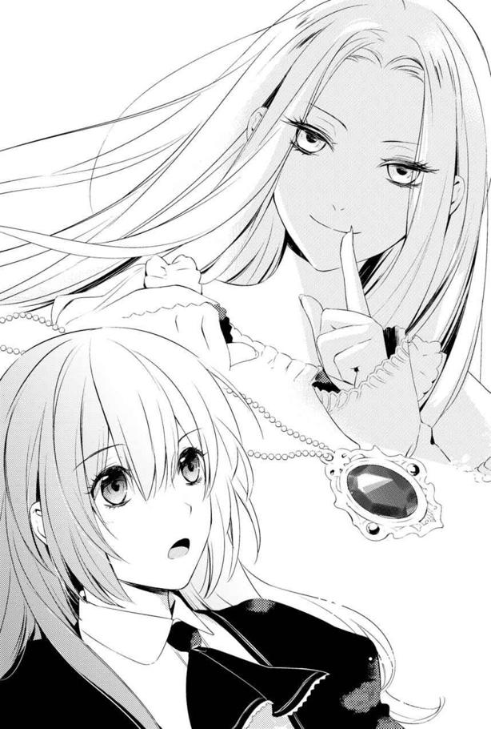
私は一瞬迷ったあげく、愛想笑いをしてその場から逃げ出した。
その時は、どうして茨姫がそんなものを私にくれたのか、意味がわからなかった。
......私が彼女の真意を知るのは、ずっと後のことになる。
その後、私とレジーは無事にアラン達と再会することができた。
馬車の中に乗り込むと、早速レジーはアランにあの後どうなったのかを尋ねている。
「パトリシエール伯爵の配下は、振り落とした？ それとも捨ててきた？」
にこにことしながら、レジーはひどい二択を口にしたが、アランは特に驚きもせずに応じた。
「馬車の扉が開いたままだったから、振り落とせるかと僕も期待したんだがな。落ちなかったんだ。おかげで自分の足で馬がいた場所まで戻らせることができた。暴走中はたっぷり馬車の中にいたおかげで、キアラがいないことは確信できたそうだ。......ただ馬は雷草に怯えて逃げただろうし、あの男が馬を探し歩いた時に、レジー達とかち合わないかが不安だったが」
するとレジーが楽しげにうなずく。
「騒ぎのおかげで、私達は悠々と隠れることができたよ。それに馬を探すほうに忙しくて、こちらを気にする余裕もなかっただろうね」
「しかし急に雷草が騒ぎだしたのはなんでだ？」
「あ、はい。私が雷草を投げたからだと」
私が手を挙げて発言すると、アランにぎょっとされる。
「投げた!? おい、ヤケドしなかったのか？」
「パチッとしましたけど、あまり痛くは......って、うわっ」
身を乗り出したアランに、両手を引っ張られる。アランは私の手のひらを検分して、ほっとしたように手を離す。
「本当だ。何ともないな......」
「遠ざけたくて思わず投げたんですけど、一匹なら問題なかったですよ？」
「そうは言うがな。お前も一応女だろう。残るような怪我をするのは好ましくない」
真剣な目でそう言われて、私は言葉に詰まる。
......くそう、さすが主人公だ。
小物属性な自分には、この格好よさがまぶしすぎる。思わず顔をうつむけて「はい」と言ってしまう。しかし恋に落ちる気が全くしないのは、ゲームでアラン側としてキアラを何度も倒したせいだろうか。それとも彼に倒されるかもしれなかったせいか。
アランは私の反応など気にせず、座り直してレジーに話を振った。
「それにしても随分と戻ってくるのが遅かったな」
「ああ、途中で茨姫に会ってね」
「茨姫に!?」
さらりと答えたレジーに、アランが再び立ち上がりかけるほど驚いた。
「おいレジー、怪我させられてないだろうな？ あの魔女は高笑いしながら棘のある茨で男を打ち据える怖ろしい奴だと聞くが......」
「見てのとおり問題なかったよ」
レジーの返事に、アランは懐疑的な視線を向けていたが、確かに怪我一つないので納得するしかなかったようだ。噂なんて不確かなものだもんな、とアランはつぶやいた。
「それで、茨姫はどんな奴だった？」
「なんかちっちゃい女の子だったよ。僕等よりもいくつか年下の。だけど本人はとても長く生きてるって言ってた」
もうアランの興味は茨姫のことに移ったようだ。
そんな話をしているうちに、私達はその日の目的地へ到着し、一泊した。
翌日からの移動は、追手が再びやってくることもなく、順調に進んだ。
五日後にはエヴラール辺境伯領に入り、その翌々日には、遠く丘の上に建つ辺境伯の城が、馬車の窓からも見えた。
さすが辺境を守る要塞でもあるからか、城壁は高く、堅牢そうだ。丘の下に広がる林の木の大きさからその広さを推測しても、城壁で囲んだ敷地面積はけっこう広そうだ。
あそこでアランが生まれたり、戦いがあったりしたのかと思いながら眺めていると、アランが自分に注意を向けるよう声をかける。
「これから我が城で働いてもらうにあたって、必要だろうから教えておく」
そうして説明されたのは、まずエヴラール辺境伯領の状況についてだ。
エヴラールは隣国ルアインと、その北にあるサレハルド王国と接する国境地帯を治めている。たびたび各国と衝突があるので、辺境伯家は王から元帥の地位を与えられ、有事には他領からの応援で駆け付けた軍を統括指揮することができる権力を持っている。
次に今回アランが領地に帰ってくることになった理由だが、勉学より優先しなければならないような緊急事態になったわけではない。むしろ領地が安全になったからだ。
しばらく前までは、ルアインからの盗賊団が出入りしていたらしい。おかげで辺境伯家の分家の屋敷が焼き打ちに遭ったりと、不穏な状況だったそうだ。なまじ盗賊が大人数ではなかった上、複数の集団があちこちで活動するため、辺境伯領の兵もなかなか捕まえられずにいたようだ。
その盗賊団の行動が、ルアインがいずれ侵略に乗り出すための斥候代わりではないかという疑惑があり、暗殺の危険も考慮されて、アランは遠くの教会学校へ避難させられていたそうだ。
「だが、別に僕が強くないわけじゃないからな？ 一か所に一族の人間がいたら、万が一の場合に誰か一人でも生き残らせることができなくなるからだからな？」
アランは自分が保護されていたことが嫌だったようで、やたらと私に念押ししてきた。
こっちとしては、そうですか......としか言いようがない。
反抗期なお年頃のアランに、お父さんお母さんは君のことが心配だったんだよ、とか年下の私が言ったら拗ねかねないし。
思えばアランは突撃型主人公だったな......。ゲームの性質的に戦闘回避はできないわけで、殲滅しろ！ なノリでゲームを進めるしかないんだけども。なにかあると「よし戦おう」て言っちゃう人だった。
そこで思い出した。
アランて序盤でお父さんとか亡くしてるんだよね。城が襲撃されてさ。でも助かったのって、城から離れた場所にいたからで......。
ん？ んんん!?
私は一緒に何かを思い出しそうになったんだけど、アランの話を聞かずにいるわけにもいかず、その場ではとりあえず保留にした。
「一応、盗賊は捕えて処分したと聞いている。だから問題はないと思うが、城の外に出るようなことがあれば十分気を付けろ。ただでさえうちの城は国境に近いからな」
「わかりました」
うんうんとうなずく。
その後は、アランのお母さんが王姉だという既に知っている情報と、お母さんは毎日のように国境警備に出てるという話をされた。
......え、辺境伯夫人て武闘派？
もしアランのお母さんに関わる仕事についたら、あちこち連れまわされるかもしれないと言われて真っ青になる。しかも貴族令嬢として数年間を過ごした私は、問題がなければアランのお母さんが監視がてら手元に置く可能性が一番高いだろうとレジーまで言いだした。
どうしよう。体力とか微妙なんだよ私......。
辺境伯夫人付きになっても、城に引きこもれないだろうかと小さな声で言えば、アランも「まぁ、お前の場合は体力で侍女に引き抜くわけじゃないからな......」と答えた。
体力で侍女に引き抜くって、そこが既におかしいよ!?
そんなふうに、自分の就職に気をとられているうちに、私達は辺境伯の城へ到着した。
ゲームでは綺麗な筆致で描かれていた城壁は、予想以上に石がごつごつとしていた。重たげに門が開かれると、千人が走り回っても余裕がありそうな空間があり、その向こうには領主が住む城館と主塔などの建物が見えた。
その手前にいるのは、出迎えに来たと思われる人々だ。
両脇に並ぶのは使用人だろう。灰色の衣服を着ているので、ともすると城の石壁に溶け込んでしまいそうだ。
中央に立つのは、濃緑色の上着を着た中年の男性だ。黒髪の彼は、アランが成長したらこうなるだろうという顔立ちをしていた。彼が辺境伯ヴェイン・エヴラールだろう。
隣にいる黄色い橡色の派手すぎないドレスを着ている銀髪の女性が、辺境伯夫人にして王姉のベアトリス夫人に違いない。ベアトリス夫人の背後には私より年上の二人の侍女が控えているが、どちらも背が高くて......見間違いでなければ、剣をさげている。
うん......体力や剣技で採用したのか、夫人の側にいるために習得したのかわからないけど、アランの言ったことは本当だったと納得できた。
ベアトリス夫人自身も、ヴェイン辺境伯よりは小柄だが、走り込みとかしてそうな雰囲気だ。
馬車が停まると、騎士達がアランとレジーを降ろし、私もエスコートしてくれる。
私は話が自分に流れてくるまでじっと待つつもりで、アランの後ろにいた。
その時、なぜかレジーがアランより一歩前に出る。
すると辺境伯達が一斉に膝をついた。レジーに向かって、だ。
「ご無事にお戻りになられて、よろしゅうございました、レジナルド殿下」
え、殿下？ 辺境伯が跪くってどういうこと？
それを受けたレジーも当然のことのように受け取った。
「私のわがままを聞いて下さってありがとう辺境伯。またしばらくここに滞在させて頂くよ」
明らかにレジーが上の地位にあるような対応だ。
わけがわからずにぽかんとする私に、ウェントワースさんが後ろから小声で教えてくれた。
「まだお聞きになっていなかったのですか？」
「え......」
ウェントワースさんは気の毒そうな顔をする。
「レジー様は、ファルジアの王子レジナルド殿下ですよ」
聞いた瞬間、私は両手で自分の口を必死で押さえた。さもなければ「はああああっ!?」と大声で叫んでしまいそうだったのだ。
同時に、自分の脳裏によみがえった絵がある。
ゲームのオープニング映像だ。襲撃された辺境伯の城の様子と、倒れ伏して死んでいく人々の姿。その中に、アランの友人の姿があった。サレハルド王国との緊張状態を鑑みて、先方と会談をすることになったため、代表として来ていた王子レジナルドだ。
襲撃のさなか、彼を庇った辺境伯が殺され、レジナルド自身も遠くから飛来した矢に射抜かれて死んでいく。
そのレジナルド王子の髪は、確かに銀色で......。
レジー改めレジナルド王子は、私を振り向いて実に楽しそうに口の端を上げていた。私を驚かせようと思って、わざと教えなかったのだろう。
彼の意図は察したけれど、私は思い出したことが衝撃的すぎて、レジーのお遊びに乗って拗ねるどころではなかった。
今、目の前で笑っているレジーが、死んでしまう。数日の旅の間に、友達のように思えた人が、この世から死によって消えてしまう運命にあるのだ。
でも自分に何ができるのか。
オープニングムービーなんてたった二分か三分の短い代物だ。
ゲーム世界の全体図、戦いの様子を表現するために始まるエヴラール攻城戦。押される兵士達の様子に破壊される門。そしてなだれ込んだ兵に対抗するよう指揮するヴェイン辺境伯とレジーが映ったかと思うと、あっという間に彼らは殺され、駆けつけようとしたアランの場面に変わってしまう。
とても彼を助け出せる材料を見つけられない。
この時、アランは陽動の別働隊を討つため出ていったことで、攻城戦に巻き込まれず、生き残る。そして始まるのが、親と友人達を失ったアランが王国を取り戻すため、ひいては仇を討つための戦いだ。
アランが死を嘆く「友人達」の中にレジーは入っているのだ。
......なんとか、レジーがここへ来ることを止められないだろうか。
考えてみようとしたが、無理だとすぐに思う。国王の代理で来るのに、誰かと交代などできるはずもない。
そもそもレジーがやってくるのは、仕組まれたことだ。サレハルド王国にしても、ルアイン王国の奸計にはまって問題が起こったからだ。
なら、アランと一緒に城の外へ出てもらうか？ しかし王子を突撃させるだなんて、辺境伯が許可するはずもない。もしくは王子が守りの薄い状態になる好機だからと、アランともども狙われる可能性もある。二人とも殺されてしまったら、本当に何もかもおしまいだ。
知っていても、何も手の打ちようを思いつけないことに、私は愕然とするしかなかった。
「キアラ？」
レジーが心配そうにこちらに向き直って声をかけてくる。
「あっ、ごめんなさい」
気付けばその場にいた全員が私のほうを見ていたので、背中に冷や汗をかく。考え事に没頭しすぎて長いこと返事もしなかったんだろうか？
しかし、誰も怒った顔はしていない。だからたぶん、そんなに長い間待たせたわけではなかったのだと思う。よかった。今は目の前のことに集中しなければ。
「殿下、その娘は？」
「道の途中で拾いました。彼女の件で、少し話したいことがあります」
レジーはそう言うと、中に連れていってもらいたいというように視線を館へと向ける。察したヴェイン辺境伯が先導し、私はレジーやアランと共についていった。
通された場所は城壁の角にある城塞塔の一つだ。三階の部屋まで上がってしまえば、下に声が漏れにくく、窓の向こうは空なので、扉の前の立ち聞きを警戒するだけで済む。
あまり広くはない部屋に入ったのは、辺境伯夫妻とアランにレジー。私とウェントワースさんだ。
「それで、あまり聞かれたくない事情をお持ちなんですね？ そのお嬢さんは」
ヴェイン辺境伯の問いに、レジーとアランがうなずく。
「パトリシエール伯爵の養女です」
レジーがそう言った瞬間、ヴェイン辺境伯が眉をひそめる。私が政敵ともいえる相手の関係者だったからだろう。
「その彼女がなぜここに？」
「クレディアス子爵との結婚から逃げてきたようで。......狂言ではない証拠もあります。嫌がることを想定して、眠らせた上で家に戻すつもりだったようで、私達が見つけた時には、薬を嗅がされて眠らされていました」
「噓ではないと？」
尋ねられたアランとレジー、そしてウェントワースさんまでが苦笑いし、私は恥ずかしくてうつむいた。
「......言っていい？」
レジーが私に確認してくれる。本当は話してほしくはないが、これで信用してもらえるならと、非常に泣きそうな気分でうなずいた。
「キアラは逃げるために、アランの荷馬車に潜り込んでまして。その後で薬が効いたのか、ゆすっても呼びかけても起きないほどぐっすりと眠ってました。実を言うと私達は、彼女の寝言でキアラが荷馬車に入り込んでいたことに気づいたんです」
「ね......ごと？」
ヴェイン辺境伯の問いに、レジーは重々しくうなずいた。
「翌日の昼近くになって目覚めた彼女は、薬を盛られていたことに気付かず『運賃を払うので許して下さい』と言って立ち上がろうとして、足が動かずに寝台から転落しました」
レジーの話を聞きながら、私は羞恥心でスカートを握りしめた腕がぷるぷるしていた。
でも今後のこともあるから、辺境伯達がどういう反応をしたのか知っておきたい。だから勇気を持ってチラッと様子をうかがったんだけど。
......すごく、残念な子を見るような目を向けられてました。
「本当か？ ウェントワース」
「残念ながら。ずっと監視していましたが、間違いなく王子殿下の仰るとおりの行動をとっておりました。それにパトリシエール伯爵も彼女を探していたようで、追っ手に一度呼び止められました」
ウェントワースさんにまで保証され、ヴェイン辺境伯はふっと疲れたように息を吐く。
「それで......このちょっとざ......お嬢さんを連れてくることにしたのか」
辺境伯様、今「ちょっと残念な子」と言いそうになりましたね？
いえ、いいんですよ。それで済むなら。こっぱずかしい話を広められたあげくに、でも敵に違いないとか言われたら、我慢をした甲斐がないってものですし。
ちなみに辺境伯の後ろにいた夫人は、口を引き結んではいるけれど、端が震えている。笑うの堪えてますよねそれ。まぁいいです。嫌われるより笑ってくれたほうが、今後の人間関係も円滑になりそうですから。
ていうかレジーといい、王族って笑い上戸なの？ そうなの？
やさぐれている間に、アランがいい話として締めてくれていた。
「人助けというか。年下の女の子が......というのは寝覚めが悪くて。養女で伯爵に情はないといいますし、平民扱いでもよいと言うので、うちで雇えないかと思いまして」
「雇う......か」
ヴェイン辺境伯が考え込むような表情になる。
「しかし本当に平民扱いで、耐えられるのかい？」
「はい大丈夫です！ 準爵士だった実家で、継母に使用人扱いされてましたから、芋の皮むきとか掃除も余裕です」
なるべく元気に言ってみたが、アラン一家とウェントワースさんがかわいそうにといわんばかりの表情になっていた。悲劇の映画を見た後の観客に似ている。
ごめん、悲惨ぽいよね。そんな気持ちにさせるような話を、私もしたくはなかったんだよ。アランの家は、なんというか普通に貴族らしい愛情とか絆がある家っぽかったからさ、なおさら胸を痛めると思ったんだ。
だけど噓をついても仕方ないし、安全と敵役にならない保証を得たいなら、やっぱりここに置いてもらったほうがいい。それに、レジーやアランを守ろうと思うのなら、この城にいなくてはならない。
そして何か......レジーを救う方法を見つけなければ。
可能性があるとしたら、敵として魔術を使ってたんだから、味方の魔術師に早々にクラスチェンジすることだろうか。来る攻城戦でも役に立つだろう。
問題はどうしたら魔術師になれるかだ。正直なところさっぱりわからない。魔術について調べるには、やっぱり権力者の側っていうほうがいいんじゃないかな。
するとベアトリス夫人が私に尋ねてきた。
「貴方......剣はお使いになれるの？」
非力な十四歳の女の子が就職面接で、剣技の有無を問われるなんて思いもしませんでした。さすが国境の守備隊に紛れて走り回るというお方である。さっき背後にいた侍女さん達も、間違いなく選考基準が戦闘能力っぽかったし。
とりあえず私に剣を振り回すのは無理なので、首を横に振った。
「護身術などの心得はおあり？」
「養父だった伯爵が、王宮に勤めさせようとしてたみたいで、ナイフぐらいの刃物は持てるようにさせられましたが、それだけで......」
「なるほどね」
ベアトリス夫人はうなずき、ヴェイン辺境伯の肩に触れた。
「私のところで、この子を引き取ろうと思います」
「侍女にするのかい？」
「ええ。ロナが先日結婚して職を離れてしまいましたでしょう。他の子達は基本的に私の外の活動についてこられる人ばかりを選んだので、一人ぐらいは貴族として礼儀作法を学んだ子を側に置こうとは思ってましたのよ」
ベアトリス夫人の話を聞いて、アランが明るい表情になる。レジーは微笑んだままだ。
......そういえばレジーだけ、さっきの不幸話でも「うわぁ」みたいな顔をしなかったな。普通に聞いてくれるのって、なんだかほっとする。
「雇って頂けるんですね？」
アランの確認に、ヴェイン辺境伯はうなずく。
「確かにうちの妻の側に、貴族の作法に詳しい人間がいてくれると助かる。この辺境地に来てくれる人というのは、なかなかいないものだからね。よろしく頼むよ、キアラさん」
ヴェイン辺境伯の言葉に、私は「よろしくお願いします」と頭を下げたのだが。
「でも、ここは国境の守備の要。いつ何時どういった状況になるかわかりませんから、逃げ足だけは鍛えてもらうわ」
ベアトリス夫人の宣告に、私は凍りつきそうになる。
運動苦手なんですが......まずは侍女として、足が速くなるようがんばらなきゃならないようです。......その合間に、魔術師になる方法を調べる余裕ってあるのかな？
２章 魔術師になりたいのですが
このたび、エヴラール辺境伯夫人の侍女になりました。
それにあたって、キアラ・コルディエと改名しました。
思えば私の人生って、変転しすぎかもしれない。
準爵士の娘から、伯爵令嬢になった後、子爵夫人の予定を蹴って、現在辺境伯家で侍女になったのだから。
ちなみに侍女になるにあたり、そこそこの家の娘だという背景がないといけないということで、辺境伯の遠縁の娘ということになっている。当のコルディエさんの家は、領地の南の山間にあって、のんびり羊を飼ってる小さな分家だと聞いていた。
そんな私がエヴラール領にて侍女生活を始めて、一週間が経った。
私の一日は、ベアトリス夫人にお目覚めを知らせ、ご要望にお応えして目覚めの水を差し上げた後、朝の鍛錬に送り出......そうとして、剣を素振りするベアトリス夫人の近くで庭を十周させられるところから始まる。
朝食を見守った後は、ベアトリス夫人は周辺の見回りに行くので、送り出したところでようやく私も朝食をとることができるのだ。
一週間経ってようやく慣れたけど、二日目ぐらいまでは疲労で食が進まなかったわ......。
その後、ベアトリス夫人の寝室を整えたりするのは掃除の召使いさん達の仕事なので手は出さず。暇になるかと思いきや、レジナルド王子付きの侍従さん達の交代要員として手伝いに行きます。
というか、これは私がとある要望をしたことで、レジーがそう配慮してくれるようになったのだ。
レジーの部屋を訪問すると、彼は自分が王都から連れてきた護衛の騎士を連れて、辺境伯の館の西側へと向かう。
そこは書庫になっている。
伯爵家にも教会学校にも書庫はあったが、辺境伯家のものは瀟洒でも落ち着いた雰囲気だった。飴色の木の壁と柱で支えられた吹き抜けのホールに、壁全体が書架で埋め尽くされている。
湿気ないようにか、書架の合間に所々換気のための小さな窓もあるが、基本的には木の雨戸でしっかりと閉じられていた。
明かりは中央の広いテーブルに置かれた燭台のみだ。
──調べたいことがあるの。
エヴラール辺境伯の城へ入ったその日に、私はそんな切り出し方で、レジーに辺境伯の書庫に出入りできないか相談したのだ。
実は切り出す前まで、どう説明したもんかとすごく悩んだ。
素直に「魔法のこと調べたいんだけど！」とか言ったら、なんか企んでると思われたら怖いし。かといって「この地方の魔術師について知りたいんですよ、私のライフワークで、いつかまとめた本を書こうかと思ってましてね」なんて言っても、まず信用されまい。
と、そこで思い出したのが茨姫のくれたペンダントである。
あの磨り硝子ガラスを丸めたような赤い石。なくすなと言われたものの、魔術師である茨姫が寄越したのだ。何か魔術と関わりがあるかもしれない。
なのでこれを使うことにした。
呪われた品じゃないのか調べたい、とレジーに説明したら、彼は難しい顔をして協力すると言ってくれた。茨姫の評判が良くないので、石のことを警戒してくれたのかもしれない。
おかげで石のことを調べるなら、きっと魔術関連だよね？ と、そちらの文献を堂々と探すことができた。
......レジーまで参加するとは思わなかったけど。
なので、毎日のように一緒にこの書庫へ通っている。
私としては、二日に一回ぐらいのペースで図書室に寄ってくれたら十分だったんだけど、レジーは「キアラは仕事があるから、じっくり読む時間がないだろう？」と気を使ってくれたのだ。
これは、茨姫に呪われたかもしれないとか、怯えた振りをしすぎて、心配させてしまったのかもしれない。騙してごめん。でも代わりに、レジーや辺境伯が死なないようにできるか、がんばるから許して。
改めて決意しつつ、明るいとはいえない書庫の中で燭台を引き寄せてじっと本を探す。
さすがに「初めての魔術講座」とか、教科書的なものはない。だから歴史上で魔術師が出てくる本を探してまず読んだ。
だけど「その時川の水が逆巻き」とか「森が一気に火を噴くように燃え」とか、前世の聖書っぽい抽象的な話ばかりだった。歴史書だから、もっと事実に即した記述があると期待したんだけどな......。
魔術師の手記みたいなのはないかと思ったが、そんなものは都合よく見つかるはずもなく。むしろ書庫の二階部分にあった、何代か前の辺境伯の記録のほうに興味深い記述があった。
○月○日 魔術師ローファンに金十六枚。緑閃鉱を十斤。
かねてから懸念されていた樹妖の処分を依頼する。
○月○日 魔術師ローファンに金三十二枚。藍瑛鉱を三十斤。
急遽必要になった、水害防止の対策を依頼する。
近来稀にみる豪雨だった。晴れたらすぐ農村の被害を確認したい。
この辺境伯は、どうも金銭出納帳代わりに日記を付けていたようだ。
彼が統治していた時代は、魔術師が近くにいたらしい。たびたび、国境争いや災害、魔獣等の対処に手を借りていたのがわかる。日記の記述から、どうも魔術師は鉱石を必要としていたらしい。ローファンさんは依頼料の一部を鉱石として要求していたと思われる。
多分、魔術に使うような気がする。でもここに書かれている短い補足説明では、推しはかるにも材料が足りなさすぎる。加えて、魔術師の記述はほんのわずかだ。それを見つけるのも結構骨が折れる。
そして読める時間は限られていた。
「殿下、昼餐のお時間です」
静かに扉を開いて書庫に入ってきたのは、レジーの侍女メイベルさんだ。
御年五十七歳のメイベルさんは、落ち着きと頼れる感じを醸し出していて、ふくよかな体型と相まって「おばあちゃん」ぽい人だ。
メイベルさんは優しく促す。
「本日はヴェイン辺境伯様の同席はございません。急ぎ捕らえた者の検分に行かねばならないということでした」
「辺境伯が自ら？ そんな大物の犯罪者って......盗賊団の首魁とか？」
本を閉じたレジーの問いに、その本を書架に戻しながらメイベルさんが首を横に振る。
「なんでも、珍しいことに魔術師くずれのようで。捕らえた村の自警団ではどう始末したらいいのかわからないようですよ」
魔術師!?
メイベルさんの話を聞いた私は、思わず立ち上がりかけた。
ぜひ会いたい！ 話を聞きたい！ くずれでもなんでもいい。魔術を使ったから警戒されたのなら、魔術のことについて知っているってことだ。なら、魔術師になる方法も知ってるはず。
レジーは、私が行きたそうにしていることをわかってくれたのだろう。
「それ、私がついていくことはできないかな？」
さらっとメイベルさんに要望してくれる。
しかしすげなく却下されるだろうと私は思った。なにせ彼は王子様だ。危険だから捕らえたのだろう魔術師に近づけさせたくはないに違いない。
が、とても予想外なことに、メイベルさんは一呼吸分ほど考えた末に言った。
「一応ヴェイン辺境伯様にはお伝えしてみましょう。まずは昼餐のために食堂へお移りくださいませ」
「よろしく頼むよ」
メイベルさん止めないの!? と驚きながら、私も移動する。今の私は侍女役なので。
レジーを食堂に送り届けるお伴をした後、私は使用人用の食堂になっている厨房横の部屋へ向かった。メイベルさんに私もご飯を食べてくるように言われたからだ。
魔術師に会えるかもしれない好機チャンスを逃したくないので、スープとパンを大急ぎでたいらげた。
そして気付けば、通りがかった料理人見習いの少年と、食堂の隅っこに三人で固まっていた召使いのおばちゃん達がぎょっとした顔でこっちを向いていた。
しまった、辺境伯夫人の侍女が早食いするだなんて、はしたなかったかもしれない。
今更ごまかしても仕方ないので、私はその場から逃げることにした。
「ごちそうさまでした」
まだ鍋の横に立ったままだった料理人見習いの少年に言うと、急いで食堂を出ていく。
扉を開ける前に、少年が「おいハリス、遅せぇぞ！ なにぼんやりしてる！」と誰かに怒鳴られてたのが聞こえたが、彼は大丈夫だろうか。
そんな心配をしていた私だったが、よもやベアトリス夫人の侍女はみんな早食いが得意で、今回のことを見た召使いのおばさん達が「だから侍女として雇われたんだね」と妙な納得をしていたことを、知らなかった。
さて私がレジーの元へ戻った頃、メイベルさんが急ぎ足でやってきた。
ややあって、中から出てきた給仕が食事が終わったことを教えてくれたので、メイベルさんと私は食堂に入る。
立ち上がったレジーに、メイベルさんが報告した。
「残念ながら、ご同行は危険すぎるとのことで、ご遠慮願いたいと仰っておられました。ただ辺境伯はその魔術師を城の牢に入れるおつもりのようで、その際にならば殿下がご覧になることも可能だろうと」
「ありがとうメイベル。なら、辺境伯が戻ったら教えてほしいな」
「かしこまりました」
メイベルさんがおじぎするその時に、レジーの視線が私に語りかけてくる。「これでいい？」と。もちろん、私が単身ついていくのはレジーよりも許可されにくいだろう。だから、会えるのならばどんな方法でもかまわない。
うなずくとレジーは小さく微笑む。
「その時にはキアラも連れていきたいんだ。調べ物に関係しそうだから、手伝ってくれてる彼女にも見ておいてもらいたいんだよ」
「キアラも......ですか」
私も一緒と言ったことに関しては、メイベルさんも驚いたようだ。
けれど彼女はレジーの要望に沿うようにすると言ってくれる。おかげで、その時にベアトリス夫人がいたとしても、私を連れ出してくれることになった。
とりあえず打ち合わせは終わったので、レジーは迎えに来た騎士と共に中庭へ向かった。小競り合いの多い時代の王子らしく、彼は剣や乗馬の訓練を欠かさないらしい。
私はベアトリス夫人が帰る前にと、部屋の様子を確認しに行こうとした。その時、不意にメイベルさんがつぶやいた。
「殿下はよほど、貴方を信頼されているのですね」
ため息交じりの声に、私は冷や汗をかく思いで姿勢を正した。
う、これってあれかな。王子が出会って間もない、どこの馬の骨か......な私と親しくしていることを、よく思ってないってことかな。
これ以上レジーに近づかないようにと言われたらどうしようか。魔術のことが調べられなくなって、レジーを救う手段を探しにくくなってしまう。いよいよとなったら、解雇されるのを覚悟した上で、何か手がかりがありそうな茨姫の所へ突撃するしかない。
もう一つだけ、確実に魔術を学べる環境を思い出すが、それはできればやりたくない。
悩んで頭がパンクしそうになっていた私だったが、
「信じられる者が増えたことは、本当に喜ばしいと思っていますよ」
「えっ？」
メイベルさんの言葉に、思わず疑問の声を上げてしまう。するとメイベルさんは、困ったような顔をして笑った。
「貴方を疑ってはおりませんよ。殿下もうかつに危険な者を側に置かないでしょうから。貴方も子供だからこそ何のしがらみも考えることなく、ただ殿下という同じ年頃の子と仲よくなったのでしょう。殿下は今までそういったことなど望みようもないお立場だったので、嬉しく思っておりますよ」
「あの、それは王子様だからですか？」
自分を支持する家の子とだけ仲よくしなくちゃいけないとか。そういう理由だろうか。
「それもありますが、複雑な生い立ちのせいでもあります。なにせ殿下は、今の陛下にとってはご養子になりますので。お立場が複雑すぎて」
「確かに......」
レジーは、現王の兄の子供として生まれた。けれど父親である現王の兄が王太子時代に早世したため、まだ幼かった彼は、世継ぎがいなかった現王の養子となったのだ。
そして現王にはまだ子供がいない。
唯一の跡取りとなるのだから、実の息子でなくてもレジーのことを無下にしないと思ったが......そこで、レジーの「優しくない家族」のことを思い出す。
「ご家族も......配慮はしてくれないのですね」
優しくない家族ならば、レジーのことを思って、安心して付き合える相手を選別することもないだろう。
私のその一言で、メイベルさんは私が何らかの事情を知っていることを悟ったようだ。
「殿下は本当に、貴方に色々とお話になっていらっしゃるのね」
ふっと息をついたメイベルさんの肩から、力が抜けたように見えた。
そして彼女が色々と語ったのは、もしかするとメイベルさんもずっと誰かにこういう話をしたかったからなのかもしれない。
「レジナルド殿下は陛下の兄君のご子息でした。当時王太子でいらしたので、兄君がそのまま即位をしていたら、レジナルド殿下は現在の陛下よりも継承権の序列が上になっていたでしょう。けれど父上を亡くし......お母上はその後、悲しみのあまり王城から離れた別の館で静養中に行方不明となられ、殿下一人が残されました」
実の父母を失った時、レジーはわずか五歳だった。
「レジナルド殿下が幼すぎたため、先代王は次の王太子を現在の陛下に定めました。けれどあまりに先代王の殿下への庇護が厚いこと、先代王がお年にしてはご健勝なままだったので......叔父である今の陛下の立太子が取り消され、いずれレジナルド殿下を王太子にするのでは、と噂が立ちました。現在の陛下は嫉妬深い方ですから、先代王はレジナルド殿下の安全をお考えになり、レジナルド殿下を現王陛下のご養子とされたのですが......。結局この経緯から、陛下はまだ幼いレジナルド殿下を敵視することもありました」
おいおい......と私は呆れそうになる。そこまでされてもまだ「怖いんだよー」と幼児をいじめっ子扱いしたのか......。
そうして幼少期のレジーは、先代が連れていなければ誰も関わってこない、強制ぼっちの状態になりかけたとのこと。
みんな先代とは仲よくしたいけど、次の王様を無視することもできないしで（だって先代が亡くなったらご利益がなくなっちゃって、不利な状況になりかねないから）困った末に、先代がいる場所でだけ交流してくるようになったらしい。
とんでもない幼少期を過ごしたんだなと、私はレジーに同情した。
「やがて陛下も妃を娶られましたが、ルアイン王国との消耗戦を回避するための政略結婚です。王妃はもちろんこちらに歩み寄りもしませんし、今後自分が子を成した時に阻害要因になる殿下に、母として慕わせる様子もなく......」
そうしてレジーは優しくない家族とばかり関わる生活を続けていたのか。針の筵だな......。似た者同士だって雰囲気は感じていたけど、本当に恵まれてなさすぎる。
ただ王妃との婚姻でよかったこともあったらしい。
現在の陛下も、ルアインに国が乗っ取られることだけはよしとはしていなかったのだ。
そこで継承者にルアインの血を入れたら問題になると考え、レジーを継承順位一位からは変えなかった。そして貴族たちの結束を強めようと、王子との交流を勧めるようにもなり、貴族達も王妃を警戒する者はレジーの側についたようだ。
ヴェイン辺境伯は、レジーが幼い頃から変わらずに彼に配慮する数少ない貴族の一人だった。
「こちらは王姉であらせられるベアトリス様がいらっしゃいましたので。ベアトリス様は以前よりレジナルド殿下を気に掛けて下さる方。幸いアラン様との仲もよく、そのためたびたびこちらへ滞在なさるのです」
とはいえ、王太子という身の上ではそう頻繁に訪ねられるわけでもない。かといって王宮では何も考えずに年の近い子供と遊べるわけでもない。むしろ王位継承者として、大人との交流が必要になってしまったほどだった。
「貴方は貴方の身の上の関係上、全てのしがらみが断ち切られた状態なのも望ましかったのかもしれませんね。......できる限り、殿下のお味方でいてほしいと思っていますよ」
メイベルさんはそう言って話を終えた。
彼女の声音から、結構切実な気持ちなんだろうなと私は感じた。今は味方になってくれる人がいる。政治情勢がそう動いたからね。けれどその人達はみんな、情勢が変われば好き嫌いにかかわらず離れてしまうかもしれない相手だ。
......信頼できるわけがないよね。
だから枠外の私の存在を、メイベルさんも快く思ってくれたのだろう。
レジーも私がイレギュラーだからこそ、哀れに思って助けてくれたのだろうか。だとしても、その分くらいは彼に返すことができたらと思う。
そう、例えば二年後。決定的瞬間が来るのを防げなかったとしても、私は手段を探すだろう。
そのために必要な情報源は、それから一時間ほど過ぎた頃に城へ到着した。
折よくベアトリス夫人が巡回から戻り、食事と着替えを済ませてくつろぎ始めた頃だった。
メイベルさんから話を聞いたベアトリス夫人は「私も見に行こうかしら」と言うので、私は一緒に城門へと移動することになった。
万が一のことがあってはいけないと、ベアトリス夫人は離れた場所で他の侍女たちと立ち止まり、レジーも同じようにすることを約束させられたので、自由な身の私だけが城門にさらに近寄った。
万が一の場合のために警戒しているのだろう衛兵の隣にそっと立つと、なぜかぎょっとされた。侍女なんて仕事をしている人間が、わざわざ危険な相手を近くで見るために来たことに、驚かれたのだろう。
レジーにも「あまり勧めたくない」という視線を向けられたが、もし何か知りたいことへの鍵を見逃してしまったら、それこそ後悔する。
どうしても見つけ出したいのだ。魔術師になる方法を。
今か今かと待っていると、門が開かれた。
まずはウェントワースさん達騎士が二人と、色あせたマントを着た泥酔したような男を両脇から支える兵士が二人入ってきた。最後にヴェイン辺境伯と残りの騎士が入城する。
たぶん、この酔っぱらって道端で寝転がっていそうな男が、魔術師くずれなのだと思う。
正直、魔術師らしさがあまり感じられない。
短く刈った後でそのまま伸ばしたような髪は、農村を歩けば同じような人を何人か見かけるだろう普遍的なものだ。衣服も、生成りのシャツの上にくたびれた焦げ茶のジャケットやズボンを身に着けていて、町に住んでいる人間とそう変わりはない。
でも何かひどく気になる。
ずっと見ていると、なんだか胸のあたりが苦しい。どくどくと脈が速くなっていく気がする。風邪を引いて具合が悪い時に少しだけ似ていた。寒気がする。けれど頭だけはすっと冴えていくようだった。
同じ魔術師のはずなのに、茨姫にはそんなことを感じなかった。どうしてだろう。私はわけがわからないまま、気持ち悪さに耐えていた。
「魔術師といっても、あまり普通の者と変わった様子はないけれど......」
ベアトリス夫人のそんな声に気付いたのだろう、ヴェイン辺境伯がそちらを見て目を瞬いた。
「君まで見に来ていたのか。あまり楽しいものではないんだよ。それに彼は正式な魔術師ではない。放置していると周囲に迷惑をかけかねないんで連れてきたんだよ」
「それならば、城に置くのも危険では？」
「私も魔術師とは接したことがないが、大人しい魔術師くずれならば、むしろ静かな場所でそっとしておくほうがいいと先代から聞いているんだ」
二人の会話を聞いている間にも、私の胸苦しさが強まっていく。
そこに、話を聞いてやってきたらしいアランが現れた。彼は近くで見るつもりで門のすぐそばに来て、私がいることに気付いた。
「キアラ、もっと遠ざかれ。何かあってからでは遅......どうした？」
答えられないほどの異常を抱えていることに、アランが気付いたようだ。
その時、支えられて立つのがやっとだった魔術師が、急に顔を上げた。彼の視線はなぜか私にまっすぐに向けられている。なんで!?
「た、助け......ごふっ」
魔術師くずれの男は咳き込んだ。土の上に、何か黒い染みがつく......血？
脇を支えている兵士達が、ぎょっとしたように身じろぎした。
「怪我をしているの？」
「いや......だめだ。皆離れるんだ！」
辺境伯の指示どおり、兵士達は離れようとした。
魔術師は弱々しい声で訴え始める──私に向かって。
「お願いだ、助けて。このまま死にたくな......っ、ああっ！」
悲鳴を上げた魔術師は、足の力を失ってその場に倒れそうになる。側にいた兵士がとっさに支えたので倒れはしなかったが、座り込む形になった。
そうして、腕を押さえられたまま魔術師は呻き続けた。
見ていられない。怖いと思うのに、私は魔術師から目を離せなかった。
そのうちに、ぎょっとしたように兵士達が魔術師の腕から手を離した。彼の手の甲が、がん、と人体にあり得ない固い音をたてて土の上に落ちた。続いて魔術師がうつぶせに倒れる。石を落としたような音がした。
「ひっ！」
誰かが息をのんだ。
私は胸の苦しさがひどくて、その場に座り込みそうになった。けれどアランに背中を支えられる。
「お前、本当にどうしたんだ？ 具合が悪いのか？」
アランは問いかけに答えられない私を、どこかへ連れていこうとした。
その前に決定的瞬間が訪れる。
魔術師の外套を突き破るように、鋭い四角錐の石が生えた。突き立った剣のように鋭い石は、次々と増えていく。
ベアトリス夫人は口元に手をあてて絶句していた。レジーは渋い表情で魔術師を見つめ、アランは言葉をなくしていたけれど、私の背を支える手がわずかに震えている。
やがて魔術師は、呻き声すら漏らさずに──砂のようにその姿が崩れた。
はたり、と中身を失ってしぼむ衣服と、ざらりと襟ぐりや袖口から流れ出る灰のような色の砂。人だったことすらもわからない状態になってしまう。
一方、私は自分の息苦しさが消え失せたのを感じた。足にもしっかりと力が入る。
けれど頭は混乱しそうだった。
どうして私の身体にまで異常が現れたのか。魔術師はなぜ私を見たのか。なぜ魔術師は今のような死に方をしたのか。魔術師はみんな......死ぬと砂になってしまうのだろうか。
私は自分が砂になってしまう姿を想像してしまう。
......さすがにちょっと気持ちが悪い。背筋がぞわっとした。
そのせいだろうか、このまま魔術師になることを目指して大丈夫なのか、本当に自分はそれでいいのか不安になってくる。
ゲームのキアラ・クレディアスが剣に刺された後、砂になるかどうかは描写されていない。ゲームの進行上、どうでもいいことだからだ。ゲームが戦闘を楽しむために描写や背景が排除されている以上、それが映像にならないからといって、真実とは限らない。
ややあって、ヴェイン辺境伯が兵士に片付けを命じ、レジー達のところへ近づく。
「あまり快いものではなかったでしょう、殿下」
「ええ。それでも機会があってよかったと思います。魔術師を見かけたことはあっても、私はほとんど関わらなかったので」
「確かにそうそう会うものではありませんからな、魔術師は。けれどおわかりでしょう......希少な存在である理由は」
ヴェイン辺境伯の言葉に、私は息をのみこむ。まさか、魔術師がみんなああいう死に方をするということなのだろうか。
「特に魔術を手に入れようとして無理をした者は、わずかながら術を操ることができても、すぐに力が枯渇するからなのか、あのように消滅してしまうことが多いようなのです」
......どうやら、全ての魔術師があんな死に方をするわけではないようだ。ちょっとだけほっとした。無理をしなければ大丈夫、ということだろうか。
「完全に魔術を操れるようになれる者自体が少ないと聞いています。けれど誰に適性があるかなどまるでわからないようですよ。だから魔術師が十人、二十人と弟子を取っても、本当に魔術師になれる者は一人か二人。しかも適性がなければ、あのように死んでしまう恐怖を乗り越えなければなりません。魔術師になれたとしても、やはり自分の力を超えるほどに術を使えば、同じように死ぬと聞いています」
レジーもアランも黙り込む。
私も同様だ。
魔術師には、もっと簡単になれるものだと思っていた。誰かに弟子入りして、レベルを上げるがごとくに修業をしたらなれるものなのだと。
けれどそうではなかった。
「だから味方をしてくれる魔術師には、敬意を払わなければならない、と私は先代辺境伯の父から教わりました。敵ならば最大級の警戒を。その身を削ってでも相手を倒そうとする者は恐ろしいのだから、と。そして不完全にしか魔術師になれなかった者は、術を使わずとも死にゆくことしかできません。力をまき散らす者であれば、遠くから射殺すか、自滅するのを待つしかありません。静かに崩壊していくだけの者ならば、せめて心を落ち着けられる場所にいれば、崩壊を先延ばしにすることはできると聞いたのですが......上手くいきませんでしたね」
ヴェイン辺境伯がため息をつく。
私は、胃の底から湧き上がる恐怖にじっと耐えていた。ゲームで魔術を使えていた以上、私に素質があるのは確かだろう。だけど今更ながらに......魔術師になることが怖くなった。
ゲームのキアラは、状況からして自分の死すら怖くはなかったのかもしれない。けれど今の私は、そこまで追い詰められていない。
今の自分にあるのは、友達を救いたいという気持ち。
けれどレジーを救うことができたら、自分が魔術師になったことは皆に知られるだろう。その後、王国を取り戻すためにきっとみんながその身を戦に投じるに違いない。私も手伝ってほしいと望まれるだろう。
味方を救うために自分の命を削るかもしれないのに、一緒に戦い続けられるだろうか。
だけど戦争は嫌だと言ってこの城に引きこもったところで、レジーが死んでしまったら後悔するだろう。
そんな悩みを抱えてしまったせいだろうか。
私は時々、ぼんやりするようになった。
身体を動かしている間はそれほどでもない。
辺境伯夫妻の仲がよさそうなやりとりや、アランの呆れたような顔、それを笑って見ているレジーの表情などを眺めている間は、穏やかな日常に浸れるので「考えるべきこと」を忘れていられた。
けれど魔術のことを調べようとすると、本の内容が頭に入ってこない。
思い出してしまうのだ。砂になって崩れた、魔術師になりそこなった人のことを。
自分がそうなってしまうのではないかと思うと、調べるのが怖い。だから穏やかな生活を実感させてくれるものに意識を向けたくなる。
同時に、自分が来るべき運命から逃れられたのだから、もしかしたら、この城も襲われない運命に変わるかもしれない。レジーだって死なないかもしれないと。それどころか、やっぱりこれはゲームなんて関係ない世界かもしれないじゃない？ なんて夢みたいなことまで想像して、自分で握りつぶして絶望する。
「わかってるのに......」
思わず言葉が口をついてこぼれる。
そんなふうになんでも上手くいくわけがない。私は「先に起こる出来事」を知っていたから、逃げることができた。けれど他の人々は、この先自分に何が起こるのかなど知りようもない。
世界は本来、何もわからない闇の中を手探りで進むようなもののはずだ。
だからこそ知っている自分がどうにかしなければ、と思う。けれどそこで心が立ち止まろうとするのだ。
死にたくない、怖い、と。
あれから数日経ったこの日も、書庫で本に視線を落としながら、私はぼんやりしていたようだ。
「キアラ、具合が悪い？」
レジーに尋ねられて、はっと我に返る。
「あ、ごめん。なんかぼーっとしてたの。レジーに無理を言って調べ物させてもらってるのに、本当にごめんなさ......」
そこで私は自分の口を手で塞いだ。しまった。ぼんやりしすぎてレジーに敬語を使い忘れてる。
なので再度謝り直した。
「申し訳ありません殿下。不敬な言葉遣いでした」
するとレジーは微笑んで、首を横に振る。
「謝らなくてもいいよ。むしろ私と話す時には、そうやって対等な言葉遣いにしてほしいな」
「え？ でも王子様ですから」
私は固辞したが、レジーは押しきろうとしてきた。
「お願いを聞いてくれるなら、今のことは許してあげる。だから二人の時だけでもいいから。......友達だろう？」
そう言われては断りにくい。友達だと言ってくれたのも嬉しかったので、私はつい了承してしまった。
「ところで、最近ずっと物思いにふけってるように見えるよキアラ。魔術師が死んだのを見てから、だよね？」
ぎくりとする。
と同時に、あまりにわかりやすくふさぎ込みすぎたのだろう自分が、嫌になった。せめて本当の理由を知られないよう、言葉を探した。
「......やっぱり、人が砂になってしまうっていうのは、ちょっと刺激が強すぎて」
魔術師の最期の様子にショックを受けただけ、ということにした。
私ぐらいの年齢の女の子なら、まさに悪魔と契約したからとしか思えないあの様子に、怯えたっておかしくないはず。
「そう？ それにしては考え込みすぎるというか......まさか」
え、まさかって、何に気付いたの？
レジーの言葉にびくびくしていると、彼は静かに告げた。
「誰か知り合いに似ている人だった？ だから余計にショックが強かったとか」
内心で盛大に息を吐きたい気持ちになった。レジーが斜め上に暴投してくれて助かった。
でも、亡くなった魔術師に似てる知り合いがいたというのは、ある一面で間違いではない。それが二年後の私だというだけで。そう考えるとレジーは鋭い。
私はごまかすためだけに「そうなのかも......」と曖昧な答えを返してうつむく。顔を見せたら、噓だとバレてしまうのではないかと思ったのだ。
しかし、私の顎に指が添えられる。
え、ちょっ、レジーが触ってるの!? と驚いている隙に、顔を彼のほうに向けられた。
いつのまにかすぐ側に来ていたレジーは、机に片手を突いて、もう片方の手で私の顎を捕らえていた。
燭台の揺らぐ光を映す、レジーの青い瞳から目が離せない。
レジーの指の感触がくすぐったくて、顔が熱をもっていくのを感じた。
でもそのせいか、レジーは疑いを消してくれたようだ。
「もう、顔色は悪くないみたいだね？」
そう言って顎から手を離してくれる。
......たまにレジーって、本当に女性慣れしているような行動をとるよね。毎回どきどきしてしまうので、困る。そんな私に、レジーは誘いかけてきた。
「でも探し物に身が入らないみたいだし、気分転換しないか？ たまには外に出よう。キアラは辺境伯夫人について歩くわけじゃないから、ほとんど城の外に出ていないだろう？」
言われてみればそのとおり。エヴラール辺境伯の城に来てからというもの、私は魔術について調べることで頭がいっぱいで、用事がある時でなければ庭にすら出なかった。
確かに、日の光に当たらない生活は身体にも精神的にもよくないように思える。
うなずいた私の手を引き、レジーが書庫を出た。
「殿下、どちらへ？」
「城の外を一周したいんだ」
書庫の外で待機してくれていた黒鳶色の髪の目つきが鋭い騎士がレジーの予定を聞き、近くにいた従者が走り去る。こちらの騎士はレジーが王宮から連れてきた彼の近衛騎士だろう。紺の騎士服を着ている。
レジーと共にゆっくりと城の中を進んで廐舎に到着すると、先に知らせに走った従者のおかげで、廐舎番がレジーと先ほどの騎士のものと思われる馬を引き出してくれていた。
「キアラ、馬には乗れる？」
尋ねられて私は首を横に振る。乗ってみたいとは思っていたが、伯爵家では馬に近づかせてもくれなかった。......今思えば、逃亡防止のためだったのだろう。
そんな乗馬初心者の私は、さっと鐙に足をかけて馬上に落ち着くレジーの所作の美しさに感嘆した後、手を握られて自分も馬上に引っ張り上げられた。
意外に力強いレジーに驚きながら、鞍の前に横座りをして落ち着く。
「わ、高い」
自分の背丈より高い場所から見下ろすことになって、私は好奇心半分、高所への恐怖が半分で、落ち着かなくなる。
するとレジーがするりと私の腰に手を回して手綱をつかんだ。
「あまり身を乗り出さないで、キアラ。落っこちても知らないよ」
くすくすと笑ったレジーは、私が背筋を伸ばし直したところで馬を歩かせ始めた。
褐色の馬はゆっくりと歩いてくれたが、それでも大きく揺れた。
慌てて鞍の前側を両手で摑んだ私だったが、それでも安定しない。うっかり鞍から滑り落ちそうで怖かった。できれば横座りなんかではなく、レジーみたいに座りたいと思ったところで、レジーが私の腰に回した手に力を込めた。そのとたん、とても安定してほっとする。
「ごめん、落とさないから大丈夫だよ。ちゃんと摑んでるから安心して」
またしても笑いながらレジーに言われて、私はうなずいた。
レジーとその護衛としてついてきた騎士は、ややあって城から外へ出た。跳ね橋も濠もない城だが、その先に広がっているのは丘を包み込むような草原だ。そこを伸びているゆるい坂道をレジー達は進む。
その頃には、私もようやく騎乗することになれてきていた。揺れの受け流し方がわかってきて、周囲を見渡す余裕ができる。
やがて道は、葉を茂らせた林の中へと入っていく。
「ここの林、結構木がまばらに生えてるんだね。来た時はもっとうっそうと茂ってるような気がしたんだけど、そうでもないんだ」
独り言交じりに感想を口に出すと、レジーが応じてくれる。
「行きは馬車の中だったからね。小さな窓だけでは、景色を堪能できなかっただろう？」
「うん、なんか錯覚してたみたい。あ、林が終わる」
その向こうは、さらに緩やかな丘が平らになった大地と、畑がある。
畝だけが見える場所は、種をまいたばかりの所だろうか。丸い野菜のようなものが生っているのは、あれはキャベツ？ 緑がちょぼちょぼと生えてきているのは何の畑だろう。
左右の畑に気をとられていた私は、突然にレジーが息をのんだことで我に返った。
何があったのか尋ねる間もなく、レジーは馬を反転させて走らせた。
「しがみついて！」
跳ね飛ばされそうな速度で走る馬の上で、私は無我夢中でレジーにしがみついた。落ちたら大怪我をするので、必死で恥ずかしさなど全く感じなかった。
「な、何!?」
「君の追っ手だ」
「え？」
追っ手とはどういうことだろう。けれど落とされないようにするので精いっぱいで、周囲を見ることすらできない。
ようやく馬が並足ほどに速度を落としたと思った時には、私達は林の中に戻ってきていた。
「お、追っ手？ どういうこと？」
「君がここへ来る途中で追ってきた、パトリシエール伯爵の配下の人間がいた。見間違いじゃないと思う」
どうして、と私は驚く。あの直後ならまだしも、もう雷草の生える草原で遭遇してから随分経つのに。
「まさか、やっぱりアランたちと一緒にいると思って、ずっとここに張り込みしてたのかな？」
けれど、私はそうまでして捕まえて連れ戻したいほどの人間じゃないはずだ。魔術師になっていない今なら、なおさらだろう。
道の先を振り返り、レジーは「わからない」と私に答えた後で騎士と話す。
「あの先にあった小屋から出てきた男。追ってきているようだったか？」
「いえ。馬に乗っている様子はありませんでしたので、追いかけることは難しかったでしょう」
「なら、大丈夫か......」
レジーがふっと息をつく。
「もしかすると、君が私達と一緒にいたことを、どこかで聞きつけてしまったのかもしれない。それで遅れながらも、追いかけてきたのかも......。でも一か月近くも経つのに」
レジーも意外だったのだろう。渋い表情になる。
「まだ君の姿は見られなかったとは思うけど、とにかく城に戻ろう......君を連れ出すには、まだ早かったのかな。今度は周囲を探らせてからにしないと」
「えと、そこまでしなくても、城に引きこもりますから......」
「ずっとそうしているわけにはいかないだろう？」
話しながらも馬は進む。
すると、城のほうから騎乗した男性が数人やってくるのが見えた。
私は、彼らがレジーの護衛騎士だと思った。王子である彼の護衛が、追いかけてきたのだろうと。
しかし彼らは私達に近づいたところで、剣を抜き放つ。
「え......敵!?」
「グロウル！ キアラは馬にしがみついて！」
レジーが騎士に呼びかけるより前に、グロウルと呼ばれた護衛騎士がレジーの前に出る。
私はレジーに押しつけられるようにして、伏せの体勢で鞍の前にしがみついた。
その状態で、視線を前に向ける。
状況を見た私は、思わずゲーム形式で理解をしようとしてしまった。
一ターンに攻撃は一回のみ。それで相手を倒せても、他三回の攻撃をグロウルさんは避けるか防御をすることしかできない。ＨＰヒットポイントを削られないかどうか冷や冷やする。
しかも敵が一騎レジーに迫ってきた。
「ひっ！」
接近してきた一騎が、レジーに向かって剣を振りおろす。
レジーが受け止めるのと同時に、金属音が頭上で鳴った。馬にまでその震動が伝わって、恐怖で肩を縮める。
同時に馬が動いた。反転するような動きに振り落とされまいと必死になる間に、敵が落馬する。
どうやったのか知らないが、レジー、すごい！
驚いているうちに、馬が落ちた敵を踏みつけるようにして走り始める。
私はもう、そのあたりでかなり怯えきっていた。
殺されるかもしれないことも、剣を振り回されるのも、逃げるためには必要だけど相手を傷つけるのもみんな怖い。しかもそこから自力で逃れる手段を、私は持っていないのだ。できるのは、ただレジーの邪魔にならないようにすることだけ。
本当はそれも辛い。レジーに重荷を負わせてるのだから。
けれど走り出した馬は、すぐに足を止められる。
再びレジーが剣を打ち合う。しかもすぐ劣勢に追い込まれた。もう一人がレジーの左手に回り込んだからだ。
目の前の男が、結びあった剣を離し、一歩馬を引いてレジーに要求してきた。
「その娘を渡してもらおう」
やはり標的は私だったようだ。レジーはすかさず彼らに返答する。
「断る」
レジーの言葉を聞いた敵二人が、すぐに剣を構えた。
このままじゃレジーが殺されてしまう。私は慌てて彼を止めようとした。
「だ、だめだよレジー！ 死んじゃったらどうするの？ 私なんかを助けて......」
レジーは王子だ。世継ぎが死んだら重大な問題になる。
それにこの戦闘は、イレギュラーな代物だ。本来ならば発生するはずのない、私が学校から逃げなかったら起こらなかったはずのもの。だからレジーが死なずにいられるかわからないのに。
「私なんか、と言わないでくれキアラ」
レジーは敵を見すえながらも、私を支えるために腰に回していた手に力を込めた。
「友達だろう。死んでほしくないなら、助けるのが当たり前のことだよ」
レジーの言葉を聞いた私は、息が止まりそうな感覚に陥った。
助けるのが当たり前。
死んでほしくない。
私が呆然としている間に、敵が斬りかかってくる。再び馬にしがみつく私の頭上で、金属音が続いた。
レジーの苦しげな声に心臓が鷲摑みにされたような感覚に陥る。
けれど見上げようとしたところで、レジーに援護が入った。
グロウルさんだ。
護衛のグロウルさんが敵の前に立ちはだかり、その間にレジーは再び馬を駆けさせる。今度は前途を邪魔する者はいなかった。
助けに来られたということは、グロウルさんは先ほど戦っていた敵を倒したのだろうか。まさか振り切っただけとか？ それでもまた二人の敵と戦わなければならないなんて、大丈夫なのだろうか。
別な不安に囚われ始めた頃、今度こそ助け手が現れた。
「レジー様！」
そう叫びながら馬を走らせてくるのは、城内で見たことがある騎士達三名だ。
「後ろをグロウルに任せてきた！」
レジーが叫んだその言葉だけで、彼らはすべきことを了解したようだ。一騎がレジーの側につき、他二騎が走り去る。これでグロウルさんも助かるかもしれない。レジーも無事に城まで逃げ帰れる。
ほっとした私は、気が抜けた瞬間に手から力が抜けそうになる。
でもここで落ちるわけにはいかないと、城の中までは耐えた。
けれど我慢しすぎたのか、城に着くと、今度は鞍から手が離せなくなっていた。
「キアラ、手伝ってあげるよ」
気づいたレジーが、手を添えて一本一本指を開いてくれる。
ようやく離せたものの、力を込めすぎた手が震える。レジーはそんな私を馬から抱えるように下ろしてくれた。
迷惑ばかりかけてしまっているけれど、初めて巻き込まれた剣での戦闘で、怯えきっていた私には、その手のぬくもりがありがたかった。
「殿下、お嬢さんをお運びしますか？」
一緒についてきた騎士がそう尋ねてくれたが、レジーはそれを断った。
「いや、それより辺境伯を呼んでほしい。そして周囲を捜索する必要がある。人を集めてくれるよう言ってもらえるかな」
そう伝えたレジーは、私を近い場所にあった花壇の側まで連れていってくれる。
抱えられるようにして座ってしまうと、廐舎からは、間仕切りのように植えられている低木のおかげで姿が見えなくなる。
馬からも下り、喧噪からも隔絶された場所に来て、少しずつ手の震えは止まっていった。
「どう、落ち着いた？」
「うん......ありがとう。でも、だめだよレジー」
安心してもまだ震えてしまう声で、私はレジーに言った。
「私を庇っちゃだめだよ。置いていって、レジーだけでも逃げないと。レジーは王子なんだから、私なんかより自分のことを......」
自分よりも王子であるレジーの命を優先すべきだ。そう改めて言ったら、彼に却下された。
「それは無理だよキアラ。言っただろう、友達は助けるのが当たり前だろう」
「どうして、そこまで？」
「......君以上に、私を理解してくれる人がいないと思うから」
レジーの言葉に、私は彼の言いたいことを理解する。
お互いに、理解されにくい思いを持っていたからこそ、通じ合えたと感じたあの瞬間を思い出す。
それを肯定するように、レジーは言った。
「醜い感情が付随するようなことを、聞いても受け入れてくれる人なんてそういない。嫌われたくないなら、曖昧にして誤魔化すしかないだろう？ 普通はそうやって口をつぐむんだ。けど君はそれすら見通して『レジーにも優しくない家族がいるんだね』と私に言っただろう？ 私はそれを聞いて、やっと息ができたような気がしたんだ」
理解してくれる相手がいる。ずっと心の奥に押し込めなくてもいい。それがとても嬉しいのだということは、私にもわかるのでうなずいた。
だから、とレジーが続ける。
「そんな君を、失いたくないと思ってはだめなのかい？」
だめだとは言えなかった。
でも自ら戦ってくれたということは、レジーに私を助けるために命をかけさせてしまった、ということだ。そうまでしてくれた人のために、どうしたら恩を返せるのか。私には、命をかけ返すぐらいのことしか思いつけない。
けれど......怖い。
「でも、私のほうは、レジーのために命をかけることができるかどうか、まだ迷ってるのに......」
申し訳なさに、思わず気持ちを吐露してしまう。
「命をかける？」
そのせいで、レジーは何かに気付いたようだ。
「どういうことだい、キアラ。君、今の言い方だと命をかけなきゃいけない事態が起こると思っているように聞こえたよ？ どうしてそんなことを言うんだい？」
レジーが私の顔を覗き込むように尋ねてくる。その表情は優しげでも、目が噓をつくことを許さないという意思を感じさせた。
言い逃れができない、と感じた。隠そうとしても、レジーは納得できるまで追及してくるだろう。
その時私はふと思った。命をかけることよりも、頭がオカシイと思われるほうがマシなのではないだろうか、と。それに、一人で悩むのも苦しくてたまらなくなっていた。
「聞いて、レジー。私のこと、教会の熱心な信者とか思ってくれていい。理由は詳しく言えないけど、私が夢のような世界で知ったことを、聞いてほしいの」
「夢？」
「二年後、レジーは多分サレハルドとの交渉で国王の代理人に決まるの。その時にこの城へ来ることになる。交渉をする場所への通過点として。その時に、ルアインの軍が攻め込んでくるの」
「二年後に......ルアインが？」
レジーは理解しきれないというような、驚いた表情をしている。
彼の反応を見て怖気づきそうになったが、私はぐっとお腹に力を入れて、続きを語った。
「その時、レジーが殺されてしまうかもしれない。だけど、代理人を断ったからって無事かどうかわからないの。だからルアインと王妃の動向に気を付けて。一年後ぐらいまでには......私も覚悟が決まると思うの。レジーを守れるように。でもできないかもしれない。怖くて、だから......」
「待ってキアラ。落ち着いて。君は夢を見たの？ それが二年後に、私が殺されるかもしれない夢だったんだね？」
私はうなずいた。
それと同時に、私は胃がきゅっと締まるような重苦しさを感じた。これでレジーは、私が熱心なエレミア聖教信者なんだと思ったに違いない。
エレミア聖教は熱心な信者ともなれば、司祭の夢占いが神の声のごとく語られるなど、やや非現実的な側面がある。そういった行きすぎた人間だと思われたのは確実だ。
けれどレジーの反応を知ることはできなかった。
知らせを受けたヴェイン辺境伯とウェントワースさん達がやってきたのだ。
レジーは私の代わりに事情を話し、ヴェイン辺境伯達は直ちにパトリシエール伯爵の配下を探し出すため、その場を立ち去った。入れ替わるようにレジーの護衛、グロウルさんが戻ってきて、レジーは彼とともにパトリシエール伯爵の配下について話すため、辺境伯達を追っていく。
そして私は、全てを言わなくて済んだことにほっとしていた。
しばらくして、自分で歩けるようになった私がベアトリス夫人の元へ行くと、私が襲撃された話を聞いていたらしい夫人が力強く言った。
「大丈夫、私の側にいる限りは必ず守ってあげるわ！」
どん、と胸を叩く姿が、美麗な上に迫力満点だ。
「母上がいるなら安全だろうし、城の中から出なければ問題はないと思うぞ」
これまた知らせを聞いてやってきたアランが、ベアトリス夫人に同調する。
でもちょっと待って。アランの言い方だと、辺境伯夫人が護衛の女騎士みたいな扱いなんだけども。そもそもベアトリス夫人は元は王女なのに、どうしてこんな武官みたいなことをし始めたのやら。
「私もベアトリス様のように強ければよかったのですけれど......。いつから剣を習われたのですか？」
他のことから意識を逸らすために、エヴラール辺境伯家の不思議の一つに切り込んでみる。すると、母親の部屋までやってきて戸口に立ったままのアランが答えた。
「それはな、母上は父上に......」
「ちょっとアラン、それ以上は内緒よ！」
ベアトリス夫人がソファから立ち上がってアランを止めに走る。摑みかかられてぎょっとするアランに低い声で訴えていた。
「言っちゃだめって教えたでしょう！」
「でも城の人間は皆知っておりますよ」
「どうして!?」
「いえ、むしろ隠す気あったんですか？」
二人のやりとりを見て、いいなぁ、と私は思う。
想い合っている夫婦。そして愛情で結ばれた親子の姿に、羨望の眼差しを向けてしまう。
今生ではほんと家族に恵まれてないからなぁ。でもでも、前世は普通だったんだから。
いじけた気分になっていると、アランとじゃれあいを終えたベアトリス夫人が、真面目な表情に変わって私に向き合う。
「それにしても、問答無用で襲いかかるような真似をするなんて。家出した娘を取り戻すにしても、方法というものがあると思うのだけど。これでは辺境伯家に喧嘩をしかけているようなものだわ」
「抗議はしないのですか？」
アランの問いに、ベアトリス夫人は首を横に振る。
「しても、たいした謝罪は引き出せないでしょう。むしろつけ込む隙を与えるだけよ。ここでのキアラは伯爵の養女ではなく、親族から侍女に取り立てた人間なんだもの。分家の者に危害を加えただけでは、実行した騎士達の過失で収められても文句を言えないし、逆にキアラが探している養女だと認めるようなことになってしまえば、連れていかれてしまうわ。養子とはいえ、娘にした子に睡眠薬まで使って結婚させようとした下衆ですもの。そうなったら何をするかわかったものではないでしょう」
ベアトリス夫人の言うとおりだ。
正直、パトリシエール伯爵は私に娘として接したことはほとんどない。対外的に必要だと判断された時だけだ。通常は、豪華な服を着せて同じような食事を食べさせている特別扱いの使用人、という扱いでしかなかった。
パトリシエール伯爵にとっては、飼っていた犬が意に反して逃げ出したようなものだ。見つかったら折檻は免れない。
つくづく、こうして庇ってくれるエヴラール辺境伯家に来てよかったと思う。けれど......。
レジーを守れる力を手に入れるには、わざと見つかって、戻ったほうがいいのだろうか。そんなことを考え、胸に痛みを感じて、うつむきそうになってしまう。
「でも今回のやり方では、こちらの警戒感を強めるだけになると思わなかったのでしょうか」
アランの推測にベアトリス夫人が首を傾げる。
「そうよね......」
二人の疑問に対する答えを持っている者が捕まったのは、夜も更けた頃だった。
就寝の準備をしようとしていた私の元に、ウェントワースさんが訪ねてきた。彼は辺境伯が呼んでいると言って、私を連れ出した。
最初、何も説明されなかったため、私は今日のことについて何か聞きたいことがあるのだと考えていた。なので上にショールだけを羽織って部屋を出たのだが、連れていかれたのは、館の外だ。
春とはいえまだ夜風は冷たくて、ショールを羽織っただけだった私は思わず肩をすくめた。
一体どうして外へ連れてきたのだろう。
私の不安を察したように、ウェントワースさんがぽつりと言った。
「教会学校からここへ来る道すがら、貴方を追ってきた者を探し当てました」
「え......見つけたんですか！」
今回の襲撃に確実に関わっているだろう、パトリシエール伯爵の配下を、捕まえたというのだ。それを知らせに来てくれたのかとほっとした私は、なぜ私を連れ出したのかをよく考えもしなかった。
だから安心してウェントワースさんについていった。
城塞塔に入って地下への通路へ降りる。言われたとおりに進みながら、私はどこへ行かされようとしているのかと首を傾げた。
「ウェントワースさん、ここは？」
尋ねると答えが返ってきた。
「ここは囚人を閉じ込める地下牢です。中にヴェイン様とレジナルド殿下がいらっしゃいます」
そこにはヴェイン辺境伯がいるらしい。そしてレジーもいると聞いて私は少し落ち着いた。何かあったとしても、レジーならば私に悪いようにはしないと信じられるからだ。
けれど、なぜ牢の中なのだろうか。
他に漏らしたくない話をするためか。それとも、捕まえたパトリシエール伯爵の配下の様子を私に見せたいのか。
首を傾げながら進むと、不意に自分の心臓の拍動が気になりだす。ウェントワースさんが持つ燭台のほか、壁に灯された燭台の明かりだけを頼りに、夜、地下に入るというのが、私は怖いのだろうか？
けれどようやく二人の元にたどり着いても、胸の動悸が治まらない。
「ここまで来てもらってすまないね、キアラ君」
ヴェイン辺境伯は、先ほど外から帰ってきたばかりなのか、マントを羽織り、胸甲まで身に着けた姿だった。腰には剣も佩いている。
「ごめんね、こんな夜中に」
そう言ったレジーも、きっちりと服を着てマントを羽織った姿だ。
「えと、私に何か？」
とりあえず呼ばれた案件について尋ねると、ヴェイン辺境伯が頼んできた。
「この牢の中にいるのは、昼間君も見かけた男だ。捕まえた直後から様子がおかしくなってね。先ほど落ち着いたようなので君を呼びに行かせたんだ」
辺境伯が指さすのは牢の中だ。そちらを見ようとする前に、レジーが私に忠告した。
「一度見ていると思うけど、少し......ショックを受ける姿になっていると思うから、心構えはしておいてキアラ。彼は多分、魔術師になりそこなったんだ」
なりそこなった。
そしてショックを受ける姿と聞いて、私は牢の中にいるパトリシエール伯爵の配下がどんな姿になっているのか、覚悟をしながら振り向くことができた。
その男の姿を見た瞬間、胃まで揺らすかと思うほどに、私の心臓が強く跳ねた気がした。
理由はわからない。だって男の姿は、目をそらすほどのものではなかったからだ。
あの魔術師よりも若干、穏やかなものだった。
背中が盛り上がっているけれど、突き立つような石の柱が生えているわけではない。今日の昼に見かけたときよりも、顔も体もむくんで膨れているぐらいだ。何か悪い病魔に冒されたのではないかと思うほどではあったが。
彼はぶつぶつとつぶやいていた。
あれを飲まされなければ。あれを飲んでから苦しくてたまらない。変だと思ったのだ。赤黒い飲み物など、今まで見たことがない。きっと毒だったんだ。私の口を封じるためだったのだ、そうに違いない。
延々と、どこともしれない虚空を見上げて彼は言葉を紡いでいる。
それだけで、彼の心がもう壊れているのだろうと察せられる。
自分を捕まえて過酷な環境へ連れ戻そうとした人間だ。だから同情はしないけれど......目にするのは辛い光景だ。
「彼の言うものに、何か心当たりはないかい？」
「毒とか、パトリシエール伯爵から聞いたことがあれば、教えてほしい」
ヴェイン辺境伯に続けて、レジーがそう私に問いかけてくる。
首を傾げていた私だったが、やがて牢の中の男の言葉を聞いているうちに思い出した。
──血のように赤い飲み物を口に入れられた。
私はその言葉にはっとする。
体調を崩した時に飲まされたことのある、赤い液体を思い出した。果実の汁で割ったからだと思っていた、少し暗い赤の飲み物。
最初はいつだったか。伯爵の家に連れてこられた日に、特別な日だから出したのだといわれて飲まされたのが初めてだったかもしれない。
後で私は三日ほど寝込んだ。
けれど回復したその時だけは、細かなことで私を怒るパトリシエール伯爵が、やたらと優しかったと思う。
似た色のものを飲んだ男は、魔術師くずれと同じ状態になっているらしい。ならば「それ」は、魔術師にさせるために投与していた薬だとしたら？ もしパトリシエール伯爵が砂にならなかった私を見て、喜んでいたのだとしたら......私をこうまでしつこく探し、連れ帰ろうとする彼らの行動と、つじつまが合う。
でもそれだと、私はもう既に魔術師くずれと同じような状態になっているということだろうか。でも魔術なんて使えた試しもないのに？
けれど心当たりはそれしかない。ないけど......。
私はぐっと下唇を嚙みしめる。
どうしよう、言いたくない。言えば私までその液体を飲んでしまったことがバレてしまう。もし魔術師くずれと同様の状態だと思われたら、私まで牢に繫がれてしまうかもしれない。
力を暴走させて誰かを傷つけないために、我慢して、と。
それを想像してしまった私は、もう赤い液体の話など喉の奥に引っ込んでしまった。代わりに口から飛び出したのは、
「わ......わかりません。見たこと、ないです」
否定の言葉だった。それをヴェイン辺境伯は疑わなかった。
「そうか。もし心当たりがあれば、魔術師になるために必要なものに、特殊な毒でも関係しているのかと思ったのだが。実はね、この男や連れていた騎士達が入り込んだのを、我々が察知できなかった理由がわかったんだ」
ヴェイン辺境伯とて、紛争に関わりやすい土地を治めている以上、周辺の状況や不審者の出入りを警戒するために諜報員を使っているようだ。いち早くどこの国が領内の状況を探りに来たのかを察知し、情勢と合わせて、侵攻してくるのか、取引を持ち掛けてくるのかを判断するためだ。
「城下の諜報員が何人か、殺されていることがわかった。急いで別の人間を手配して監視を強化させたが、二人ほどは、この男と、男が連れていた騎士が殺したようだ。それ以外の者のうち二人が、焼け死んでいたのが見つかっている。他に燃えた物もないのに本人だけが燃えたとなれば......ということで、私はパトリシエール伯爵が魔術師を作り出す方法を編み出して、そうして魔術師になった者が我が領に入り込んでいるのではと考えていたんだ」
だからパトリシエール伯爵の側にいた私に尋ねたらしい。赤い飲み物は、もしかして魔術師を作り出す特殊な薬か毒薬ではないのか、と。
聞いていた私の舌に、ざらりとした粉の感触がよみがえっていた。
甘酸っぱいあの飲み物は、砂みたいな粉が混ざっていたのだ。混ぜた粉が溶け残ったものだとは思うが、不快だったのでよく覚えている。けれど飲み物の正体を私も知っているわけではない。だからもう一度、ヴェイン辺境伯に対して首を横に振った。
「そうか......」
「でも、パトリシエール伯爵が何らかの方法で魔術師、もしくはなりそこねを作る方法を編み出したことは確実でしょうね。でなければこの男といい、他の諜報員を殺した者といい、抱えている魔術師くずれが多すぎます」
今まで黙っていたレジーが、静かに問題を指摘した。
私も内心でレジーの言葉にうなずいていた。おそらくゲームのキアラ・クレディアスが魔術師になれた理由もそこにあるのだ。パトリシエール伯爵は、魔術師になる方法を知っているのだろう。
そしてもう一つ気付いたことがある。二年後のエヴラール攻城戦だ。
国境の向こうとはいえ、気付かないうちに至近まで進軍されていたということがあり得るだろうか。見張りや、国境の向こうに入り込んでいるだろう諜報員などが、何らかの方法で殺されていたと考えれば、つじつまが合う。
あれこれと考えていた私に、ヴェイン辺境伯は「もう戻ってもいいよ」と言ってくれる。
「夜中にすまなかったね。また何か尋ねることがあると思うので、その時は協力してもらいたい。レジナルド殿下も、今日はもうお休み下さい」
促され、私とレジーは地下牢から外へ出た。
そこにはレジーの護衛であるグロウルさんがいた。特に怪我もない様子でしゃんと立っているグロウルさんの姿に、私はほっとする。
「ご無事でなによりでした」
そう言うと、グロウルさんはちょっと驚いたように目を瞬き、小さくうなずいて「ありがとうございます」と礼を言ってくれた。
そうして私は部屋に帰ろうとした。
昼間に言いそびれてしまったので、レジーに二年後についての注意点をもっと話そうかと思っていたが、だめだ。さっきの男の話を聞いた後では......私が危険人物だと思われかねない。せめて落ち着いてから、必要なことだけを話せるようにしたい。
「じゃあレジー。私はこれで......」
「グロウル。部屋に戻る前にキアラを送るよ」
「承知いたしました」
また明日ねと言う前に、レジーがついてくることになってしまった。
初めてレジーと一緒にいて居心地の悪さを感じる。思えば、レジーといて落ち着かないってことがなかったなと、私は思う。なんでだろう？
けれどこの居心地の悪さをバカな話をして紛らわせようにも、グロウルさんが聞いてると思うと口が重くなる。
結果、何も気の利いたことが言えずに部屋の前に到着したが、レジーも何も言わなかったのでほっとする。
さて今度こそと私はレジーに言いかけた。
「じゃあレジーおやす......」
「話があるんだ。グロウルは悪いけど外で待ってて」
笑顔でそう言ったレジーが、私が半開きにしていた扉から、部屋に入ってしまう。
おおおーいレジー！ 勝手に入っちゃだめ！ いや、今日は襲撃されたことでベアトリス夫人からお休み命令出てたから、部屋の片付けとかはしてたけど、深夜に女の子の部屋に入っちゃうのってどうなの？
「ちょっ、レジー！」
声をかけながら私も部屋に飛び込んだものの、戸口で立ち止まる笑顔のレジーに何を言ったらいいのかと戸惑う。
「えと、もう夜も遅いし疲れたでしょう？ 明日。話は明日にしましょう？」
やんわりと断りを入れたのに、レジーが無情にも私が開けたままだった扉を片手でバタンと閉めてしまう。
「え......」
レジー君や。一応私と君は成人前とはいえ思春期の男女だからして。護衛さんが見ている前で、密室に二人きりという状況だけは避けようとしたのに、これは何の真似？
わけのわからない行動をとったレジーは、私をじっと見つめてくる。
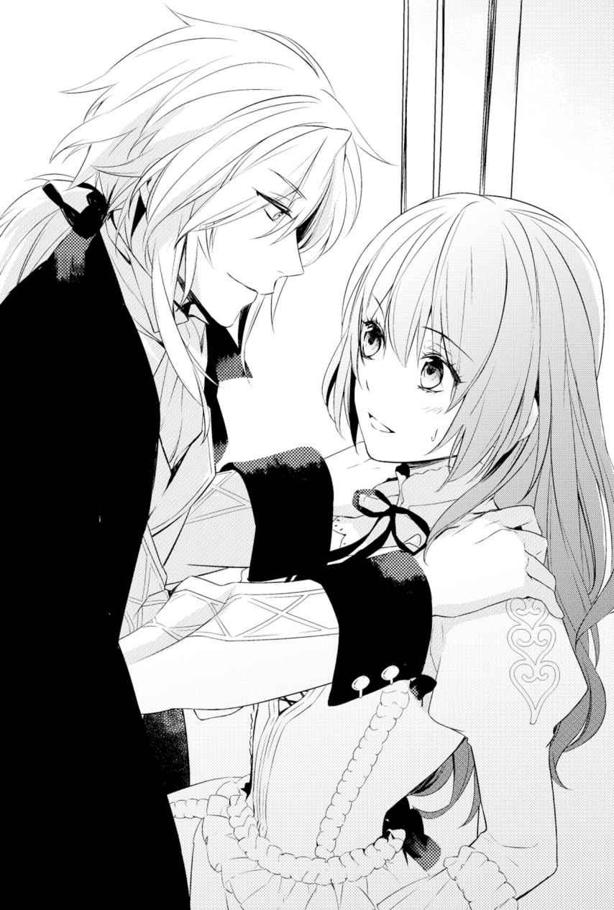
思わず後退りすると、背中が扉に当たった。
するとレジーはとんでもないことに、扉ドンどころか、私の両肩を摑んで押さえつけた。
「ななななな、どどどどど」
一体何なのどうしたの！ と言いたいのに、異常事態に私の口がうまく回ってくれない。
レジーのほうは、暖炉に置いた燭台の明かり一つだけの部屋の中で、楽しげに微笑んだ。おい怖いよ！ いろんな意味で！
「私は話し合いを今日すべきだと思う。君は動揺してる時に押したほうが、ぽろっと全てを白状しやすいから」
「げ」
ちょっと待って。まさかそのために、パトリシエール伯爵の配下の様子を見た直後に、しかも二人きりで部屋にこもる状況を作ったってこと!?
「グロウルに聞かせていい話ではなさそうだったからね。彼には遠慮してもらうことにした。だけど君と私の仲では、隠し事はなしだよキアラ？」
部屋に入ったのも、グロウルさんを排除して私の口を割りやすくするためとは。なんでそんなこと思いつくの!?
「くくくく、くろいよレジー！」
思わず言ってしまうが、それでレジーが気を変えたりはしなかった。
「キアラ」
真剣な表情に変わった彼が、私の肩を摑んだ手に小さく力を込める。
「君は何をどこで知って、私に二年後のことを忠告したんだい？」
「え、ええっと。夢で......」
昼間そう言ったはずなので、私は同じことを繰り返した。
「夢にしてはあまりにも確信的だったよね？」
「ええっと、私実は教会学校でエレミア聖教に傾倒......」
「そのわりには朝夕の祈りの時間とか、完全に無視しているし、食事の祈りも結構おざなりだったと思うけど」
「う......」
誤魔化せない理由は、全て自分の行動のせいだった。確かに不信心者の見本みたいなことしてたな私。だけど前世のことがあるからなおさらだけど、元から信仰心薄いんだよ......。
だって教会のいうような神様だったら、今世の家族の元からも救い出してくれただろう。パトリシエール伯爵みたいな人に、養女にもらわれることもなかった。
むしろ機械仕掛けの神的な存在だっていうなら、ちょっと信じなくもない。前世の、しかも別世界の記憶を持ってる私がいるのは、誤作動によるエラーの結果だと納得しやすいから。
女神の笛の音だって、私にとってはエラー信号だと考えると理解しやすい。
そんな私に、レジーは追及の手を緩めてくれなかった。
「私に噓をつくのかい？ そんなに信じられない？」
言った後で、レジーの表情がやや悲しげに歪む。私は心臓を摑まれたように苦しい気持ちになる。レジーを傷つけてしまったと感じたから。
「信じられないわけじゃ......」
思わずそう言ってしまった私を、レジーが追い詰めていく。
「何かが怖くて言えないの？」
肯定するわけにはいかなかった。
だって知られたくない。もしかしたら自分がさっきのパトリシエール伯爵の配下みたいになるかもしれないなんて。それを話したら、レジー達に警戒されてしまいかねない。
......とにかく嫌われたくないのだ私は。それが一番怖い。
「私が怖いのかい？ それとも話すことそのものが？」
問いを重ねたレジーは、なかなか口を割らない私にため息をついた。
「キアラ、君は脅され慣れすぎてるね。なら、話したほうが怖くないと思うようなことをする？」
「えええぇえ!?」
レジーの方針転換案に私は驚く。しかも話すほうがマシって、どんな怖いことをする気なの？ ま、まさか首を絞められるとか？ 剣で斬りつけられるとか。怖い想像が頭の中をぐるぐるとまわる。
けど怖い気持ちは拭えない。
何も言えずにいると、ふいに頰に何かが触れた。柔らかで、決して皮膚を傷つけることがないその感覚に、目を瞬く。
まさか、今のってく......。唇!?
頰にキスされたのだと気付いた瞬間、私は思わず座り込みたいほどに脱力した。
そこを狙ったかのように、レジーがささやく。
「質問を変えようか。君は、自分が魔術師になろうとして、色々なことを調べようとしていたんじゃないのかい？」
「え、どうして気付い......」
なぜそこまで感づくのか。驚いて問いを口に出してから、私は息をのんだ。
しまった。これじゃ肯定したも同然だ！ そもそもレジーがこんな、色仕掛けみたいなことするから！ ていうか、なんでこんなやり方知ってるのよレジー！ 十五歳でそれって怖いんだけど！
動転する私の顔を、レジーは覗き込んで微笑んだ。
「茨姫に渡された石について調べるにしては、君は石に怯えた様子がなかった。むしろ魔術師のことばかり熱心に調べていただろう？」
私の様子を見て変だと思っていたらしい。そして魔術師くずれが死んでからの表情や行動から、その可能性を考えていたという。
なんて頭のいい人だと私は呻く。
そんな人がどうしてあっさりと殺されてしまったのか......いや。こういう人だから、王妃達が邪魔に思って彼を抹殺したのだろうと気付く。
「でも魔術師になれる人なんて希少だ。なれるかどうかもわからないのにと不思議に思っていたけれど、君には確信があったんだね。だから二年後までに魔術師になるつもりで、私を守ると言いだしたんだろう」
何てこと口走ったのよ私ぃぃぃ！ 過去に戻って己に文句を言いたい。
それにしても、ここまでまるっとお見通しな人を、私のあまりよろしくない頭でどうやったら言いくるめられるというのだろう。無理だ。私はとうとう観念した。
「赤い飲み物に、心当たりがあるの。私も、飲まされてた......から」
答えを聞いたレジーは、やっぱり、と言いたげにため息をつく。
「身体は何ともないみたいだね？ 今まで変わった様子はなかったし。さっきの驚き方からして、飲まされてたのが魔術師に関係するものだとも知らなかったんだろう？」
「......うん」
「そうか。ならよかった」
レジーがほっとしたように微笑む。私はえ、と思って彼をじっと見てしまう。
「あの魔術師くずれみたいに、あたりに魔術をまき散らしたり、身体がおかしくなるかもしれないからって、私を幽閉とか......しないの？」
「何を言っているんだキアラ。そんなことしないよ」
きょとんとした表情でレジーが言う。
「今現在問題が出てないし、君は魔法が使えない。なのにどうして閉じ込める必要があるんだい？」
「でも、もしかしたら今後、そういうこともあるかもしれないし」
「そうだな......」
不安の原因を訴えると、レジーは少し考えて応えてくれた。
「とはいえ、魔術師の知り合いもいないから調べるのは難しいし、このまま辺境伯の書庫を漁っていても見つかりそうにないからね。王宮に戻った後で、私も調べてみるよ」
「え、本当!?」
レジーはしっかりとうなずいてくれる。
私はほっとした。王宮ならもっと情報が溢れているだろう。それに王家が魔術師を雇っていると聞いたことがある。王家の伝手で探しあてることができたら、かなり正確な情報を引き出すこともできるだろう。
「でもキアラは、それを飲まされてからどれくらい時間が経ってる？ さっきの男の場合、雷草が生えていた所では問題なかったようだから、一度パトリシエール伯爵の元に戻った後か、この近くで別の人間に飲まされたんだろう。そこから考えると、飲まされてから長くても二週間しか経ってないはずだ」
「うーん。養子にもらわれた直後ぐらいには飲まされたから、もう何年も経ってるよ。最初は三日ぐらい寝込んで......その後も何度か飲まされたけど、ちょっと気持ちが悪くなるくらいだったような。だから特殊な毒か、伯爵家に連綿と伝わるゲテモノ系の滋養薬でも飲まされてると思ってた」
「滋養薬？ また君は突飛な発想をするね」
レジーが少し笑う。
「でも毒......みたいなものだろうね。本当に魔術師くずれみたいになって死んでしまうのなら、効果は毒と大差ないわけだし。でもそれを飲んで平気だったキアラは、本当に魔術師の素質があるのかもしれないな」
レジーの言葉に、私はうなずく。
素質がなければ死んでしまうのだから、結果的に無事だった私は、素質があったんだろう。前世のゲームのとおりに。
疑問なのは、今現在どうして魔術が一欠片も使えないのか？ だけど。
「それより聞きたいのは、どうして君が二年後のことを話しだしたのかってことだよ。パトリシエール伯爵から、何か聞いたのかい？ 二年後に侵略する予定だというようなことを」
レジーとしては、そちらのほうが重要な問題だったようだ。確かに、侵略戦争の気配があるのなら、今のうちに動きを摑んでおきたいことだろう。
しかし私は誰かから見聞きしたわけではない。
「それは本当に、夢......白昼夢みたいに見たことなの」
「夢か......」
渋い表情をするレジーに、私は夢物語だと言われてしまわないかと焦った。だから細部を変えてレジーに話した。
「上手く説明できないんだけど、小さい頃から、私が結婚してキアラ・クレディアスって名前に変わる夢を見てたの。その夢では、結婚後に魔術師にさせられて、王妃の侍女になるんだけど。その二年後にルアインが侵略戦争をしかけてきて、私は王妃のためにアラン達と戦って......アラン達に殺されてた。でもただの夢だと思っていたら、パトリシエール伯爵からのクレディアス子爵に嫁がせるっていう手紙を見て......。それで、すぐに逃げたの。夢のとおりになって誰かに殺されるのが怖くて」
今ではもう、あの時とは違う理由で私はみんなの敵になりたくない。
私を馬車に乗せ、領地で雇ってくれたアラン。息子のアランが信用したのならと、受け入れてくれた辺境伯夫妻。その全てを援助してくれた上に、友達だからと助けてくれるレジー。
誰かを敵として傷つけるなんて考えられない。
けれどそこまでレジーに話しても、彼を混乱させるだけだろう。だから私は話を切り上げた。
「何の根拠もない荒唐無稽な話だと思う。私のこと頭がオカシイと思ってくれてもいいから、お願いだから気を付けて。二年後に私の言ったとおりになってしまったら、私が恩返しにちゃんと守ってみせる。その時には拒否しないでいてくれると......嬉しいんだけど」
私は全てを理解してほしいとは思わなかった。
ただレジーが危険なこと、私が魔術師になれることと、レジーを助けたいと思ってることを知ってくれればいい。そう思ったのに。
レジーは考え込んだ後で提案してきた。
「確かに根拠がない話を信じてもらうのは難しいだろうね。相手がエレミア聖教の司祭なら、夢だと言えば簡単に肯定してくれるだろうけど。でもキアラ。私としては今回のこともあるから、パトリシエール伯爵が何か大それたことを企んでいるのではないかと思ってはいたんだ。だから皆に、君の不安を上手く知らせたい。城が攻め落とされそうになるなんて、誰だって嫌だろう？」
「でも信じてくれないかも......」
「王妃が不審な行動をしていることと、今回の動きから、パトリシエール伯爵にかなり注意が必要なことを、私から言っておくよ」
その言葉に、私は肩の荷が降りる気持ちになった。レジーの言葉なら、ヴェイン辺境伯もかなり気にしてくれるだろう。
ようやく息がつけると思った私の耳に、レジーが再び顔を寄せてささやいた。
「そうしたら......君が魔術師になって、私を守らなくてもいいはずだ」
「え......」
頰に口づけされたことを思い出して身体が硬直しかけた私は、彼の言葉に目を丸くする。
「でも、戦争が本当に起こったら、魔術師がいたほうが......」
その後の戦況だって断然有利になる。もしレジーが攻城戦で死ななくても、その後の王国侵略がなくなるわけじゃない。必ずアラン達は戦わなくてはならなくなるはずだ。
「君が安全に魔術師になれる保証は？ それに魔術師になるのは君が一番嫌いなことだったんだろう？ そうしたくないから逃げたし、今度はひどい死に方をするかもしれないとわかったから、なおのこと君は魔術師になりたくないと思っているはずだ」
そのとおりだ。
つい黙り込んでしまうと、レジーはようやく一歩離れ、肩を摑んでいた両手で私の手を握りしめる。
「それに君が魔術師になるとしたら、考えられる方法は二つだ。茨姫の力を借りるか、君がパトリシエール伯爵の元へ戻ること」
その選択肢を見透かされていたことに驚いて、私はびくっと肩を揺らしてしまう。
茨姫のほうがマシだけれど、確実に魔術師になるとしたら、パトリシエール伯爵の元なのだ。代わりにクレディアス子爵との結婚が強制されて、逃げだした日のように眠らされたあげく......になりそうだけど。
だから私にとっても究極の選択になる。でも他に手がなければそうするしか......と思っていた。
私の考えなど予想がついていたらしいレジーは、笑って目を細める。
「私は君に、そんな真似はさせたくない。少なくとも二つ目の選択肢を選ぶようなら、私は君の目の前で死んでみせよう」
「なっ!?」
なんで死ぬなんて言うの？ あまりのことに絶句する私の手を持ち上げ、誓うように軽く指先にレジーの額が触れて、離れた。
「だから約束をしよう、キアラ。私に黙って、勝手に魔術師になんてならないって」
「なっちゃだめ......？」
禁止されるとは思わなかったので、私は驚いてレジーの顔を見直す。言い間違えたわけではないようだ。彼は私と目を合わせると、はっきりとうなずいた。
「決して危険な道を一人で選んじゃいけない。必要があれば代わりに私がやる。だから私に許可なく、貴重な友達を失うかもしれない真似をしないって約束してほしい。いいかい、キアラ？」
私を失わないために、禁止する。
心の中で繰り返すと、目の前のレジーの顔がにじんでいく。
頰を流れ落ちるのは、涙だ。鼻がつんとする感覚も、目を開けていられないほどの瞼の熱さも、どれくらいぶりに感じただろう。気付けば嗚咽をもらしながら顔を伏せてしまうほど涙が次から次へと溢れてくるのは、ずっと誰かにそう言ってほしかったからだ。
魔術師になんかならなくていい。
一人で危険なことをしなくていい。
普通の子供みたいに、そう言って守ってくれる人が欲しくて。でも親などいないも同然の身では、無心に頼れる人などいなかった。
本当は喉から手が出そうなほどほしかったのに、前世の記憶が絡んだ荒唐無稽な話をしたら、仲よくしてくれているレジー達が私から離れてしまうかもしれないと怖くなって、どうにもできなかった。
けど、レジーは全て受け入れてくれたのだ。安心しすぎたらもう、涙を止めるのが難しくなっていた。
それなのにレジーは、もっと泣きそうなことを言う。
「約束を破ったら、あとでお仕置きするからね？」
「うん......」
何かが起こって約束を破らなければならなくなっても、レジーは怒っても離れないと、そう言ってくれているのだ。
そんな彼を、本当に失いたくないと私は心の底から思った。
◇◇◇
「レ......」
階段を上がったところで、アランはかけようと思った言葉を飲み込んだ。
レジーと一緒にいたのは、護衛騎士のグロウルだけではない。キアラもだった。
しかもレジーは、キアラの部屋に入って扉を閉めてしまう。
「な......」
アランは声を上げるのを寸前でこらえた。待てレジー。お前まさか逢い引きか!? と心の中だけで叫ぶ。
しかも相手はキアラだ。レジーがやけに同情して援助していると思ったら、まさかそういう理由だったのだろうか。
（まてまて俺。レジーがそう簡単に手を出すわけがない）
レジーが普通の王子なら、つまみ食いごときは問題にはなるまい。けれど彼の場合はうかつに手を出せない状況がある。相手がルアインと繫がりのある貴族だったら、陥れられるかもしれないからだ。
でもその前に。
（レジーがそもそも遊びをしかけるわけが......ないと思いたい相手だよな？）
キアラは容姿が悪いわけではない。それなりに可愛いと思う。けれど王子の隣に立つには、性格がひょうきんすぎる。
元伯爵令嬢ならばしとやかにしていればいいものを、平身低頭で謝罪を叫びながら寝台から床へ真っ逆さまとか、雷草を投げつけるとか、意外なことばかり実行しているのだ。今や彼女を見て元伯爵令嬢だと連想することはない。
それに現在の彼女の身分だ。
本人もそれでいいと受け入れたし、あの時レジーも反対しなかった。
だから一緒にいるという未来を望んではいないと思ったのだが......。
（仲がよすぎるんだよな）
いつもならば、辺境伯家に遊びにきたレジーとアランは四六時中一緒にいた。けれど今回、レジーはかなりの時間をキアラのために割いている。午前中はずっと書庫で一緒だし、時には今日のように午後まで時間をとることもあった。
おかげで剣の稽古の相手がいない日は、アランもなんだかつまらない。
（い、いや違うぞ。何も悔しいからキアラにだめ出ししているわけではないんだ。ただ心配しているだけで......）
と、そこでレジーがキアラの部屋から出てきた。
レジーは出かけた時のままの格好だ。その肩だけ、羽織ったマントの色が濡れたように濃い色に見えた。
雨は降っていなかった。さっきまでは濡れた箇所など見当たらなかった気がする。
「殿下、何のお話を......」
「野暮なことは聞かないほうがいいんじゃないのかな？ グロウル」
レジーはそんな返答をして、グロウルを絶句させていた。
「ま、まさか別れ話のもつれ......？」
深夜に逢い引きして、服に濡れた跡まであるのだ。きっとあれは涙の跡......。もうその想像でアランの頭の中はいっぱいになってしまった。
そのせいで、アランの声が聞こえてしまったのだろう。レジーが振り返り、見つかってしまった。
「か、帰りが、遅かったんだな」
慌てながらも絞り出した挨拶の言葉がそれだった。
「うん、パトリシエール伯爵の配下が襲撃してきた件でね。詳しいことはアランも後で聞かされると思うよ。ちょっと大事になりそうな気配だから、辺境伯から説明されたり、対策に駆り出されたりもするんじゃないかな」
「うわ......僕、考えるの苦手なんだよ」
貴族が関わるいざこざだ。真正面から打ち倒して終わりということにはなるまい。その後の頭脳ゲームさながらのやりとりや根回しのことを考えると、アランはさっきまでの動揺をすっかり忘れて、うんざりとした。
「予行演習にはいいんじゃないかな、次期辺境伯殿。少しは慣れるべきだよ、君だって頭脳労働が全くの不得意なわけじゃないんだから」
「向いてないんだよ。あげくにやたらそのあたりが上手い奴が側にいると、なおさらやる気がうせるのをわかってくれよ」
その上手い奴とはレジーのことだ。
「そんなことを辺境伯殿に言ったら、殴られるんじゃないのかい？」
「むしろ聞かれたら怖いのは母上のほうだよ。父上より先に手が出るんだあの人」
まるで父親が二人いるみたいだとぼやけば、レジーが笑う。
「でも慣れておいたほうがいいよ。私や辺境伯殿だってずっと側にいられるかわからないのに、一人になった時にどうするんだ？」
「......なんだ、それ」
珍しく暗い未来を暗示するようなことを口にしたレジーに、アランは思わず聞き返す。
「世の中のものは有限なんだよアラン。私も、もちろん君も。備えることによって、失わずにいられることもあるだろう？」
だから、忠告だよとレジーが言う。
けれどアランの中に浮かんだ不安が消えない。そのせいだろう、思わず口走ってしまう。
「有限なのは仕方ない。だけどお前、そんな弱気でいて、もし本当に何かあったらキアラはどうするんだ？」
レジーが珍しく目をみはる。
「キアラが、どうして？」
「えええ？ だって、お前......その」
部屋から出てきたじゃないかと言おうとして、一切気にしていないレジーの様子に、追及するのがためらわれる。
「気に入ってたみたいだし、キアラだってお前に一番懐いてるだろ。その......拾った責任というか」
「キアラは拾った相手に全力でよりかかる子じゃないよ。多分私がいなくたって、一人で生きていける」
レジーに笑われてしまい、アランはちょっと拗ねた気持ちになった。
「だってレジー。お前やっぱりキアラのこと相当気に入ってるだろ。四六時中側にいたって気にならないくらいじゃないのか？ それってほら、好きってことじゃないのか」
アランに追及されても、レジーは表情を変えたりしなかった。
「うん、キアラは面白いよ。側に置いておけたなら、だいぶん私も気楽に過ごせそうだなと思う。でも......そうだね。彼女がそれをよしとするかは別の問題だと思うよ」
わけのわからない回答がきた。
面白いし側にも置きたい。けどそれはキアラが決定権を握っているというのだ。それでいてアランの質問に全て答えているわけではない。
男女の仲なのかどうかが知りたかったのだが、それは綺麗にうわべをなぞって放置された格好だ。
レジーは、たまにこんな謎かけみたいな答えしか返さないことがある。おそらくは本心を明かして裏切られることを怖れて......それが癖になっているのだ。
ただこういう言い方をする時、レジーはもう何かを決めていながら、まだ誰かに話すべき時期ではないと考えているのだと、アランは気付いている。
（でも、何をどう決めたんだ？）
キアラを側に置き続けることを決めているのか。いずれ離れる相手として、友人としての距離を保つと決めたのか。でも今は追及しても話さないだろう。
アランはため息をつく。
「なんていうか......もし何かあれば言ってくれ。キアラはうちで雇ってる人間なんだし、もし見捨てなくちゃいけなくなっても、こっちで責任持つから大丈夫だからな？」
「......ねぇアラン。彼女を見捨てることは、私にとって自分を見捨てるようなものなんだ」
そう答えたレジーは、いつになく真剣な表情をしていた。
「自分を見捨てるって」
どうしてそこまで？ まるで彼女なしでは生きていけないような言い方に、アランは困惑する。
「だから最後まで見捨てないよ。心配をする状況になるぐらいなら、たぶん私は彼女を連れていくと思う。君に背負わせなくてもいいようにね」
「レジー......」
どこまで連れていくつもりだ、とは聞けなかった。
それを口にしてしまったら、恐ろしい言葉を引き出しそうな気がしたからだ。
次の日、泣いたと思われるやや目の腫れたキアラの顔を見て、アランはさらに混乱する。
「別れ話......じゃないんだろうけど」
見捨てないと言うぐらいだ。たぶん別れてくれという話をしてたわけじゃないだろう。なのになぜキアラが泣くのか。
泣く女性への対応がわからないアランは、彼女の目の腫れが治まるまで、なんとなくキアラを遠巻きにしながらぐるぐると考えてしまう。
さらにアランを混乱させたのは、翌日になってみても、レジーとキアラに恋人らしいそぶりが一切ないことだった。
そんなアランの苦悩をよそに、レジーが王宮に帰る日となった。
エヴラール領も、気温の下がる日が多くなってきていたし、今日などは雪がちらつき始めていた。これ以上延ばしていては、すぐに雪深くなって、王都まで戻るのに難儀する。だから帰還するよう、レジーは周囲に説得されたようだ。
白い息を吐きながら、レジーはにこやかにアランやキアラに言った。
「来年も遊びに来るよ。アランとはまた、新年祝賀の時に会うと思うけど。来てくれるよね？」
「もちろんだ」
「それまでキアラのこと、頼んだよアラン。変な虫がつかないようにね」
最後に密やかに耳打ちされて、アランはようやく苦悩していた問題に回答を見つけた。
（そうかわかったぞ。レジーはキアラの保護者のつもりなんだ）
娘ならば、一緒にいるのが苦ではないと感じてもおかしくないし、娘を見捨てるぐらいなら俺も死ぬ！ と言う父親は世の中にたくさんいる。あの夜も、襲撃されて怯えていた娘を慰めるため部屋に入ったのだと思えば、納得がいった。
疑問が解決し、すっきりとした気分だったので、アランは実ににこやかにレジーを見送る。そして隣でやや暗い表情をしていたキアラを励ました。
「まぁ、なんだ。気を強く持てキアラ」
「えっと......はい？」
何故か驚かれてしまったが、最終的にキアラは笑顔を見せたのだった。
◇◇◇
本格的な冬を前に、レジーが王宮へ帰った。
いつか帰るということはわかっていたし、そもそも王子が長く王宮を空けているというのもよろしくないことなのだろう。
レジーは一か月ほどゆっくりとエヴラール辺境伯家に滞在していたが、それ以前にも教会学校にアランを迎えに来てみたり、ここから王都へ帰るのにかかる時間のことも考えたら、彼は都合二か月ほど王宮を離れていた計算になる。
移動時間の長さとか考えたら、そりゃ一年に一度しか来られないよね。
正直なところ、一番気の合う人がいなくなったことは悲しい。何も言わなくてもわかってくれる人というのは希少だ。
それに......うん。
どう言ったらいいのかな。
自分が死にたくないってことだけを考えていたのと、前世でもそんな事態に遭遇したことがなかったせいで......正直どうしたらいいのかわからない。
前世だったら、人に話せば間違いなく自意識過剰だと言われかねないこの状況。
いや、むしろ前世だったら気がないのに頰にキスとかする!?
あの日から、私は動揺を引きずっていた。
泣き止んで正気に返った後で、レジーの行動をどう理解したらいいのかわからなくなったのだ。
前世だったら自分の価値とか無視して、期待したかもしれない。けどこの国は欧米的な感じだから、親が大きな子供の頰に口づけることも、よくあるのよ。
だから頰キスのハードルが低いのだと思う。兄妹でっていうのも見たことあるし。
なら、親愛のキスなんてものは家族同然に思えばすることもある......かもでしょ？
私にそのあたりの自信がないのは、今世で普通の家庭生活を送ってこなかったせいだ。実家では幼少期から父親なんてほとんど私に関わらなかったし。母親はしてくれたかもしれないが、幼児だったから記憶が薄い。継母は私に手も触れなかった。そして養父からは完全な部下か使用人扱いをされていたし。
おかげでこの国の一般家庭における親子の交流が、全くわからない。
それにレジーや辺境伯が無事に二年後を乗り越えるまでは......そこから派生しそうな感情のことを考えると、本当に何もかもが怖くなって動けなくなりそうだと感じた。
とにかく今の私の居場所はエヴラール辺境伯家だ。ここで働くと決めたのだからがんばろうと思う。
さてここで問題になるのが、パトリシエール伯爵の手下による襲撃事件だ。
ヴェイン辺境伯が先方に抗議をしたところ、部下が人違いをして暴走したのだろうという返事が返ってきた。その処罰もエヴラール辺境伯のほうで好きにしていいとのことだった。
ヴェイン辺境伯は、そのうちの一人が魔術師くずれであったことをネタにつついてみたようだったが、当然ながら知らぬ存ぜぬで返された。私の証言も、辺境伯領にいないことになっているので使えるわけもなく、お手上げ状態になったらしい。
残った問題は、領内に入り込んでヴェイン辺境伯の諜報員を殺したはずの人間が、捕えられていないことだ。
こう何人も魔術師や魔術師くずれが出てくることは不可解なので、パトリシエール伯爵が何らかの企てを行っている、とヴェイン辺境伯は考えているらしい。
私とベアトリス夫人、アランとその護衛のウェントワースさんを集めた場で、ヴェイン辺境伯がそれらの状況を説明してくれた。
「父上、企てとは......？」
アランの問いに、ヴェイン辺境伯が苦い表情で言う。
「捕まえた者によると、何らかの魔術的な代物を飲んだことで、魔術師くずれとなったという。ということは、パトリシエール伯爵は大量に魔術師くずれを生産できるのだ。たとえすぐ死ぬ魔術師くずれでも、戦力として使えるような存在を作りだすことができるのなら......王国を覆しかねない戦を起こすつもりなのかもしれない」
戦、という言葉に、その場にいた者達が小さく息をのんだ。
「パトリシエール伯爵が関わるとなれば、ルアインですか。しかし王女が王妃になったわけですから、動く理由がないのでは」
ベアトリス夫人の意見に、ヴェイン辺境伯は首を横に振る。
「未だ王妃には懐妊の兆しがない......というか、国王と会うのは朝の礼拝時のみだと聞いている。その状況でルアインはファルジア王家を婚姻で乗っ取るのは難しいと考えたのだろう。むしろ王妃が世継ぎに固執しないのは、元から......ルアインは最初から開戦するつもりで、油断させるために妹姫を花嫁に差し出したのではないかと思う」
私は心の中でうんうんとうなずく。
ゲームの開戦経緯はそうだった。
元からルアインは開戦するつもりで王妃を送り込み、兄妹揃って国内に協力する貴族を増やして虎視眈々と好機を狙っていたのだ。
おかげでルアインの侵略がスムーズに成功し、アラン達が追い込まれたのが、ゲームの初期状態である。
「それなら、なぜエヴラールを標的にしたのでしょう？」
ウェントワースさんが疑問を口にした。
「殿下を殺しても、王家には他に傍系の男子がいる」
「......アラン様ですか」
ヴェイン辺境伯の言葉に、ウェントワースさんがわかりにくいながらも微妙に渋い表情をしている。彼もよくよく思い出してみれば、ゲームに出ていた。騎士なんで移動距離も長いのがとても便利で、たびたび彼を使っていた。そんな感じの騎士キャラが何人かいたもので、すっかりウェントワースという名前が脳内で埋もれていたようだ。
この話の流れでヴェイン辺境伯は、エヴラール家がルアインを支持する派閥に狙われていて、ルアインから攻撃を受ける可能性があることを認識させてくれた。
もしかするとこれを考えたのはレジーかもしれない。だとしたらありがたいことだ。誰だって、荒唐無稽としか言いようがない、私の夢の話を持ち出されるより、状況から導き出された現実的な予想のほうが、行動しやすいだろうし。
そしてレジーは、私のことを正確にヴェイン辺境伯に伝えてくれたようだ。
「さて、話がここまでなら、キアラを呼ばずに済ませたのだが......。彼女もこれに関連して難しい状況にある」
来た......と思って私は思わず緊張で肩に力が入る。
ベアトリス夫人の後ろに立っていた私に、みんなの視線が向けられた。
「キアラも、魔術師くずれになった男と、同じ物を飲まされたことがあるという」
「え、じゃあキアラも......」
驚愕の表情に変わるアランに、今にも泣きそうに目を潤ませ始めるベアトリス夫人。
「おおおおい、大丈夫なのかお前？」
しかもアランは立ち上がって私の手首を摑む。
何かあったら、保護者のレジーにどう言ったら......なんてよくわからないことを口にしているが、間違いなく心配してくれている。
......嬉しい。
今一番私に近く接している二人が、私を異質なものとして怖がらなかったのだから。
ベアトリス夫人はヴェイン辺境伯と顔を見合わせてしんみりと目の端を拭い......。
って、私まだ死んでませんよー。死にたくないんですよー。そのために逃げてきたんですよう。そう主張したいが、するわけにもいかない。言えないことがあるっていうのは、面倒なものだ。
ウェントワースさんは、色々な状況を想定し始めているのか、腕を組んで考え込んでしまっている。けれど子供にまでそんなことをするのかとつぶやいているあたり、さすがヴェイン辺境伯のところに仕官しただけあって、情に厚そうな人だ。
「素質があったせいなのか、運よく効かなかったのかはわからないが、身体に問題はないようだ。今のところ魔術が使えるわけでもないので、キアラはそれが魔術に関係するものなのかどうかも知らなかったと聞いている。そうだね、キアラ？」
そこでヴェイン辺境伯が説明してくれるので、私は大人しくうなずいた。
「それに魔術師くずれと同じ物を口にしたと言っても、本当にその飲み物が原因で魔術師くずれになったのかどうかも不明だ。現物がないので確かめようがないし、捕らえた男が何かを勘違いした可能性もある」
けれど念のため、ということで、私は状況が落ち着くまで城から決して出ないこと。そして私を出さないようにとヴェイン辺境伯はベアトリス夫人に命じた。
「殿下からの預かりものでもあるので、皆、彼女に注意を払ってやってほしい」
そうして私は、城外へ出ることを禁じられた。詳細を知らない城内の人達にも、襲撃のことをベアトリス夫人が話した上で「かわいそうに外へ出るのが怖くなっちゃったみたいで。しばらく遠ざけて心を癒やしてもらおうと思うの」と言ったことで、不審がられることもなかった。
むしろ外に出る機会すらない私のことを、ちょっと気の毒に思ってくれているようだった。
そうして三か月後。
辺境伯領のとある川原で、魔術師くずれが死んだ痕跡が見つかった。
痕跡......というのは、本当に「そうかもしれない」という感じのものだったらしい。
砂が詰まった人の衣服。その近くに一つ、黒焦げになって形すらほとんどなくなった人の遺体を発見したのだそうな。
けれど見つけるまでに何日も、もしくは数か月もそこに放置されていたせいか、魔術師くずれの遺体だったのだろう砂は周辺の土に混じった状態だったという。
なのでさらに一か月ほど、私への引きこもり指令は続いた。
それまでの三か月で領内の監視体制を強化していたヴェイン辺境伯は、引きこもり延長期間に、不審者がいないことを確認した。
ここでようやく私の引きこもりは終わりを告げることになる。
とはいっても、ベアトリス夫人の侍女が私の仕事だ。剣が使えない上、一人で馬にも乗れない私では、ベアトリス夫人の外出という名の領地や国境への見回りについていけるわけもない。そう油断していた。
「さ、キアラ。外に出ましょう！」
雪が解けたとたん、ベアトリス夫人が私を城外の見回りに連れ出そうとした。
「えと、でも奥様と一緒にいて何かあったら......」
もし運悪く襲撃されたら、今度こそ私は詫び言を叫びながらエヴラール辺境伯領から出ていかなければならない。
けれどベアトリス夫人は、からっとした表情で私に言った。
「大丈夫。むしろ私と一緒だからこそ、手を出せないでしょう。それに私の侍女なのですもの。使いに出す必要も出てくるでしょうし、少しずつ城下の人間や守備隊の人間とも関わって、顔を覚えてもらわなければね」
そうしてベアトリス夫人や侍女のマイヤさんとクラーラさん、さらにはお伴の騎士二名と外出する日課が加わった。
その際、私はマイヤさんの馬に同乗させてもらっていた。
マイヤさんはベアトリス夫人の結婚前から側に仕えている人だ。商家の娘だったが、背が高くて力持ちだった。登城した際に父親を手伝って荷物を持っていたところ、ベアトリス夫人の目にとまり、侍女にならないかと勧誘されたのだという。
......さすがベアトリス夫人。剣を振るえそうな人かどうか、というのが侍女の基準なのは、今も昔も変わらないらしい。
城下や国境の壁まで往復するうちに、私は自分で馬に乗れるようにもなった。
秋にはまた、レジーがやってきた。
二週間だけ滞在した彼は、以前王宮に出入りしていた魔術師の行方が、わからないことを教えてくれた。
約束どおりに調べてくれた彼を見送ると、冬になる。
辺境伯領付近は積雪がそこそこある地方なので、まずルアインも進軍してこないらしい。
穏やかな日が続く中でも、私は魔術のことを忘れてはいなかった。
切り札は必要だ。けれど一人で書庫の本を見るわけにもいかず、レジーとの約束もあるので身動きができない。
そんな折、辺境伯夫妻とアランは王宮へ行った。新年祝賀の宴に出席するためだ。
去年も三人は王都へ行ったのだが、今回はアランが十六歳になったので、彼も正式に参加するという。
大変面倒そうなアランを送り出した私は、たまに話すようになった召使いのおばさん達と、城内や城下の話をしたり、一気食いをした後から「それで食事、足りるのか？ もっといるか？」と尋ねてくるようになった料理人見習いのハリス君と話したりして、過ごした。
やがて帰ってきたアランは、レジーからの手紙を預かってきてくれた。
そこにはレジーが使いをやって茨姫に接触した話が書かれていた。
「え......うそ。そこまでしたの？」
私は読んですごく驚いた。しかも茨姫の好みは十二歳以下の男子発言を聞いていたレジーは、森の近くにある村の子供を使い、茨姫との接触に成功したそうだ。
......釣ったのか。茨姫を。きっと小さな男の子の「茨姫様ー」という呼びかけに、彼女もほいほい出てきたに違いない。
そうしてレジーは「魔術師になる方法と、魔術師も最後は砂になるのかどうか。パトリシエール伯爵が飲ませたようなもので、魔術師を作ることはできるのか」を尋ねたようだ。
対する茨姫の返事というのが「何のために石をあげたと思ってるの？ とキアラに言って。あと、絶対その石以外を使わないこと」だった。
ごめん、わけがわからないよ。
レジーもこればかりは自信なさそうに「これでわかる？」と書いてきている有様だ。
とにかく、茨姫にもらった石さえ肌身離さずにいれば、諸々のことはなんとかなりそうな感じだ。それに好物のショタを鑑賞する機会に恵まれた茨姫が、噓を言うわけもない。
だけど魔術に関する情報はこれ以上手に入らなさそうだ。
茨姫が石を持っていればいいというのだから、どこかで必要な時に、役に立ってくれて、魔術師になる必要があった時にも利用できるのだろう。
その後、春になってから一週間だけエヴラール辺境伯領へ滞在しにきたレジーも、同じ結論に落ち着いた。
「茨姫も、理由があって言えないことがあるようなんだ」
内密の話をするからと、私はレジーに連れられて城外の小高い丘の上に来ていた。
露出した岩の上に二人で並んで座ると、彼が冬の間にまた成長したことがわかる。秋には既に私より頭半分以上背が高かったのに、頭一つ分は背丈に差ができていた。私だって少しは身長が伸びてるのに。
顔立ちも鋭角的になってきて......以前の天使みたいな美しさから、神像の美しさに移行した気がする。肩幅も増して、真正面に立つと小さめの私には壁みたいに大きく見える。雰囲気もだいぶ大人びたものになっていた。
アランも成長痛らしきものに悩まされながらぐんぐん伸びていったので、ある程度は想像していたけれど......なんだろう。初めて見る人みたいに感じて、気恥ずかしくなる。
そのせいで、出かける前から調子が狂って困っていた。
馬に一緒に乗ろうといわれた時は、自分一人でも大丈夫と言えるようになっていてよかったと胸を撫で下ろしたのだ。
この岩に腰掛ける時も、距離をとろうとしたのだが、そこはレジーにあっさりと間を詰められていた。
十四歳の頃、茨姫の森で並んで座った時と変わらない距離であることが、心の底を微かにくすぐる。
それを悟られないよう、私は平気そうな顔を装って返事をした。
「縛られてるっていうと、魔術師には何か制約があるとか？」
「そうみたいだね。でももらった石があればと言うのだから、何かあってもひどいことにはならないと私も思うよ。......それで、キアラは魔術に手を出さずに大人しくしていたんだろうね？」
「う、うん。ていうか調べようもないし」
大人しくしているというより、手も足も出ないというのが正しい。
ここだけの話だが、実はこっそりと魔法が使えないかと試してみたこともある。魔法の技名を口にしても何も起こらず、しかもマイヤさんに目撃されるという恐ろしい黒歴史を刻んでしまったのだが、絶対レジーには言わない。
「そう？ アランからも一応暴れてないとは聞いているけど......心配なんだ」
レジーは表情を曇らせて、岩の上をなぞる私の手に、自分の手を重ねてきた。
......うぉぉ。これ、すごく恥ずかしいんだけど！
だって離れてはいるけど、君の護衛騎士二人がこっちをじっと見てるんだよ？
二人の視線から隠れるように手に触れるとか、何この秘密の関係っぽい感じ！
春の陽射しに照らされても、生ぬるい温度にしかならない岩と違って、レジーの手が温かい。そのせいで心臓がばくばくした。全力疾走したみたいに脈拍が激しくて、なんだかめまいがしそうだ。錯乱しかけた私はつい素直に尋ねてしまう。
「それで、えっと、レジー、この手は......なんで？」
「ああ、確認だよ」
「何の!?」
「君はまだ知らなくていいよ」
何その意味深な言葉！ 意味深だってのはわかるけど、わけは全くわからないんだけど！
そんなレジーの滞在は一週間だったので、あまり長く話すこともできずに彼は去っていった。
けれどさすが頭のいい人だ。
この往復路で、二つの貴族家を訪問して味方にしてしまったらしい。アランが伝聞で教えてくれた。どこの貴族家かと思えば、ゲームで中立だったがために、容赦のないルアインの侵攻に後れをとって滅亡した家だった。
もちろん王宮にいる間に、旗色を鮮明にさせるための種をそれなりにまいていたのだろうが、それでも中立の方針を貫いていた家の意見を覆させたのだ。私にとっては魔法のような仕業としか言いようがない。
一体どうやったのか、今度会った時に聞こう。って......
「あと、半年？」
レジーの死ぬ運命がめぐってくる秋まで、あと半年しかない。
次に彼がやってくるのも、ゲームのとおりならば半年後になる。
そう思うと焦りが心を支配し始めて、たまらない気持ちになる。でも私にできることは、茨姫を信じてペンダントにした件の赤い石を身に着け続けることぐらいだ。
唯一の情報源である茨姫からこれ以上聞き出せないとなれば、私はじっと待つことしかできない。エヴラール領を勝手に出ることもできないのだから。
そして初夏。
今まで何事もなく過ぎたことで、誰もが油断していたのかもしれない。
ベアトリス夫人に同行して、領地の北にある辺境伯の分家を訪ねていた私は、そこで新たな事態に遭遇することになる。
３章 早すぎる事件の発生
その日、私達が北にある辺境伯の分家を訪ねたのは、怪しい者を捕えたという報告があったからだった。
引き取りに向かったのは、ベアトリス夫人と領内の仕事を手伝い始めたアラン。付き添いとして私や侍女さんとウェントワースさんに騎士二名、護衛のための兵士が五人という構成だった。
到着して早々に、私達は分家で捕えた者を確認した。
ぱっと見は、間違って越境してしまった狩人という感じの男だった。
頭はぼさぼさで、人らしい匂いをごまかすために獣臭のする毛皮を被っているところも、発見時に矢筒と弓を持っていたことも、別に不自然ではなかった。
しかし捕縛時には、警備の兵が近づいただけで、男は獲物を捌くナイフで攻撃してきたのだ。
捕縛してから気付いたらしいのだが、異常なことに男の周囲では何匹かの狼が死んでいた。血よりも薄い液体を吐いていた痕跡があったそうだ。
当の男は、赤い液体がうっすらと底に付着していた瓶を、いくつか持っていた。
分家は「毒物を持ち込んだ不審者を見つけた」と考え、そう連絡してきた。その時に瓶と、入っていた毒だと思われる物の色を伝えてきたので、ヴェイン辺境伯は思い出したのだ。
魔術師くずれのことを。
ただ折悪く、ヴェイン辺境伯は他の貴族の家を訪問する予定になっていた。そのためベアトリス夫人と、名代となるアランが出かけたわけだ。
到着前には、他にも魔術師くずれが出るか、その男が暴れるのではないかと警戒していたが、特に問題が起こったりはしなかった。
捕まっていた男は放心しているような有様で、何も聞き出せない代わりに暴れもしなかった。話に聞いていた瓶も受け取り、後は帰ってから詳しく調べることになっている。
仕事はほぼ終わったようなものだ。交流のために二日滞在した私達は、今日帰ることになっている。
夕方までに着くためには、早々に辞去する必要があったので、私達は朝早くから出発準備に追われた。
ベアトリス夫人が朝食を終えるまでに荷物を積み込み、その後私はベアトリス夫人の髪を結った。
侍女としての私の仕事の一つだ。
私は銀糸のような髪を、編み込みを交ぜて結い上げた上で、簪できっちりと止めた。輪ゴムがない世界なので、編み込みを作ってから結い上げて......がとても難しい。けれど努力の甲斐があって喜んでもらえた。
ベアトリス夫人は、鏡で後ろ髪の様子を見るため顔を右に向けて微笑んだ。
「でも貴方みたいな髪型のほうが、楽そうでいいわ」
「辺境伯夫人としてのお立場を考えますと、これは向かない髪型でしょうから......」
私はいつもどおり、上半分だけをまとめて、背に流していた。
エヴラール城では乗馬のために簡素なお団子の髪型か、適当に結ぶだけのベアトリス夫人としては、複雑に結われた髪は綺麗でも、面倒だと感じるらしい。
「城へ戻りましたら、この髪型をなさっても大丈夫かと思いますが」
「そうね。キアラも十六歳になったのだし、そろそろ髪を結い上げたほうがいいかもしれないわ。今度はこういう場でも、お揃いの髪型に結ったりしましょうね」
エヴラール城へ初めて来たのは十四歳だったが、それからすぐの冬には十五歳になっていた。さらに一年経ったので、私も十六歳だ。誕生日には、ありがたいことに皆に祝ってもらった。
ちなみに私よりずっと前に済ませたアランの十六歳のお祝いは、かなり盛大なものだった。跡取り息子だもんね。城下に暮らす市井の人々も招いて、酒や料理を出してお祭り騒ぎになった。
私は料理の手伝いが足りないと聞いて、隅っこで芋の皮むきを請け負っていたのだが、探しにきたアランにびっくりされた。
その後、芋の皮むきができることを過剰に気の毒がられた......。
前世でもお母さんの料理のお手伝いしてたから、包丁で芋の皮むけるんだけどな。
さて、準備ができたベアトリス夫人に付き従い、私達は館を出発した。
馬車に乗ったのは私とマイヤさん達とベアトリス夫人だ。
騎士達とアランは騎乗し、兵士達は犯罪者を入れた幌馬車と私達が乗る馬車の御者台へ。残り三人もそれぞれ馬に騎乗する。
私は馬車に揺られつつ、城に戻ったらしようと思っている仕事の優先順位について思いをめぐらせていたのだが。
「わっ！」
「......っ、何事!?」
馬車が急停車して、私は馬車の壁に頭をぶつけてしまった。痛い。
「あ、ベアトリス様！」
私が頭を押さえて呻いている間に、ベアトリス夫人が馬車から出てしまう。
「マイヤ、キアラを守ってやって！ クラーラ、風狼だわ。五匹なら私達も加わればすぐに終わるでしょう！」
「承知いたしました奥様」
「ええっ!?」
驚いている間にクラーラさんまで馬車を降りてしまう。
ていうか、辺境伯夫人を戦闘に出していいの？ 私なんかより守るべきだと思うんだけど。以前から騎士みたいに巡回や魔物討伐に参加してしまっているので、本人も周囲も戦闘に参加するのが当然になってしまっているのだろうか。
「でも、なんでこんなところに風狼が？」
街道周辺って人間が頻繁に通る場所だから、その匂いを嫌ってあまり風狼は出てこないはずだ。彼らが攻撃を加えてくるのは、そのテリトリーを侵した時ぐらいである。
ゲームで障害物的に遭遇することがあったので、特徴は知っている。
走る時に風をまとわせる狼達。風狼との戦いは、舞い上がる土埃のせいで視界を遮られるので厄介だ。
風狼を抑えるには、とにかく足を斬りつけて走れないようにするしかないのだが。
「って、なんか風強すぎないですか!?」
馬車は、強い風が吹き付けたようにがたがたと揺れる。
「確かにこれは......」
マイヤさんが剣の柄に手をかけた体勢のまま、眉をひそめた。
確か風狼の風って目くらまし程度だったはずだ。それが効いてしまうと、そのキャラは三ターンほど砂埃のせいで目が効かなくなる。なので一撃離脱戦法で攻撃して、見えなくなった味方はさっさと後方に下げなくてはならない。というのがゲームのセオリーだったのだが。
馬車は次第に、海の上の小船みたいにゆっさゆっさと揺らされた。
「ひえええええ！」
外がどうなっているのか知りたいが、とても窓から覗いてる余裕がない。座席にしがみつくだけで精いっぱいだ。
しかも、あきらかに生き物がぶつかったような衝撃とともに、
「いやああああ！」
「キアラさん！」
馬車が横倒しになりかけた。
私は必死の思いで、傾いたのとは反対方向の扉にぶつかっていく。間一髪。馬車の位置を戻すことができて、横倒しの危機を免れた。
けれども私は、勢いがつきすぎてそのまま外に転がり落ちてしまった。
「痛っ！」
外開きの扉だったことが災いした。またしても人がいる場で転がり落ちるという失態を犯したものの、今は恥ずかしがっている場合ではない。スカートがめくれていないのを確認したら、大人しく引っ込こもうと立ち上がった。
そこで私は──その瞬間を見てしまった。
「ベアトリス様！」
少し馬車から離れた場所で、ベアトリス夫人が風狼に足を嚙みつかれて倒れたのだ。
「母上！」
すぐにアランが駆け付けて、剣の一閃で狼を退ける。
ぎゃんと鳴いた風狼が飛びのいたものの、胴から血を流しながらも再びこちらの様子をうかがっていた。
ベアトリス夫人は痛みに顔をしかめながら立ち上がる。狼の歯でドレスも一部引き裂かれ、血にまみれていた。
「どうして......ベアトリス夫人が負傷？」
そんな筋書きはゲームにはなかった。ルアインを倒すため、アランが一時身を寄せた他領の砦から出陣する時に、領主夫人である母親と、短い会話のシーンがあった。だからベアトリス夫人は大丈夫だと思っていたのだ。
むしろ、それしかベアトリス夫人が出てこないので、こんな武闘派だとは思わなかったというか......。
でもベアトリス夫人は自ら戦うような人なのに、なぜアランの軍についていかなかったのか。国家の存亡の危機となれば、反抗後に負けたら親族の命などないも同然。後を任せて安全な場所にいても、あまり意味がないだろう。だったらベアトリス夫人は自ら従軍するはず。
「まさか、できなかった？」
負傷して、一緒に行くことができなかったから、待つ側になったのだとしたら？
ベアトリス夫人は、これ以上戦うのは不可能だという判断に至ったようで、足を引きずるようにして馬車に向かって移動し始め、アランが庇うように前に立った。
その途中で、馬車の前で呆然としていた私を見つけて、ベアトリス夫人が叫んだ。
「キアラ!? 早く馬車に！」
私は首を横に振って、近づいたベアトリス夫人に駆け寄った。
「ベアトリス様が先です！」
風狼の突風が吹きつける中、足を負傷して歩くのがやっとの夫人が倒れないよう支える。クラーラさんが私達を庇う位置についた。
他の騎士や兵士達も、馬から下りて対峙している。時折吹く突風に、騎乗したままでは対応できなかったのだろう。
彼らも、軽い負傷だけで済んでいるようだ。
馬達は荷馬車の後方にまとめられていたが、不思議と風狼達はそちらへ見向きもしなかった。
......普通は食料になる馬を狙うのに？
その動きを疑問に思ったが、ベアトリス夫人を馬車に押し込むだけで頭がいっぱいで、上手く考えがまとまらない。
「マイヤさんお願いします！」
呼びかければ、馬車に上がれない夫人を、マイヤさんが力強く引き上げてくれる。そうして私も、と手を伸ばしてくれたその時、心臓がやけに強く拍動した。
一瞬だけ息がつまるほどの変な動悸に、思わず私は振り返る。
「キアラさん！」
クラーラさんが叫びながら、私に飛びかかってきた風狼に剣を突き刺す。どっと地面に横倒しになった風狼は、痙攣しながらも私に視線を向けていた。
まさかこの風狼、私を標的にしてたの？
「キアラさん、早く馬車に！」
「はい......わっ！」
返事をして馬車に乗ろうとしたら、だん、と音を立てて馬車の屋根に風狼が一匹降り立つ。
風を巻き起こして飛び乗ったのか、吹き付ける突風で私は転び、クラーラさんも体勢をくずした。
そして風狼はまっすぐ、私めがけて飛び降りてくる。
「ちょっ......！」
どうして!? と驚くことしかできない。ほんとに私を狙ってるんだもの。
私は風狼の牙が並ぶ口を見つめながら、その場から動くことができなかった。
間一髪のところで、黒のマントと濃緑の上着の背中が私の前に立ちはだかり、飛び降りた一匹を一刀両断する。
飛び散るのは赤い血。
それをいくらか被ったウェントワースさんが、振り返って眉間に皺をよせた。
駆け付けようとしてくれたのか、アランが先ほどよりも私に近い場所にいる。荷馬車の側にいた兵士も、私をめがけて襲いかかろうとする風狼を相手に、戦ってくれている。
間違いない。風狼は私を狙っている。
でもこれじゃだめだ。風狼は身軽だ。風を巻き起こして、四方八方から飛びかかってこられる。
なのにこっちは馬車や私を守るために動けない......ん？
四方八方から狙われなければいい？
私は立ち上がった。足は震えていない。ちゃんと力が入る。
そしてクラーラさんがぎょっとする中、ドレスの裾を広がらないよう、少しでも短くなるよう結んで──走りだした。
「キアラさん!?」
「おい！」
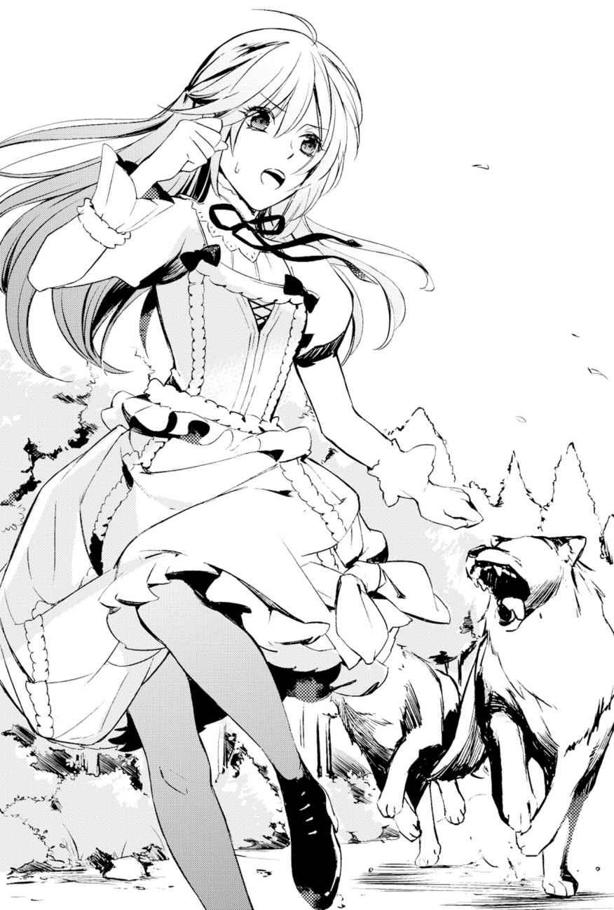
クラーラさんが悲鳴のような声で名前を叫び、ちょうどこちらを振り返って周囲を確認していたアランが、目を見開いている。
けれどかまっていられない。
私は一端馬車の後ろ側に回った。そこで風狼達が騎士の頭上を飛び越えてやってくるのを目の端で確認すると同時に、反転してアランの脇を駆け抜けて木立の中へ。
「ウェントワースさん、もう少し前へ出て！ ライルさんとアラン様はそこにいて挟撃を！」
走れ私！
死にもの狂いで足を動かし、私は木を避けてジグザグに走った。
案の定、私を追いかけてきた三匹の狼達が、木立を避けて私の後をついてくるせいで一列に並ぶ。
混みあって伸びる木立の中では、木にぶつかりそうになるので、風を使って飛び上がりにくい。だから風狼も走るしかないのだ。
とはいってもこのままでは追いつかれてしまう。
私は早々に木立を飛び出して、ウェントワースさんの元を目指した。途中でアランとライルさんの間を駆け抜け、ウェントワースさんの背後に駆け込む。すると、彼の真正面に風狼が迫っていた。
「なるほど」
何かを納得したようにつぶやいたウェントワースさんが、剣で鮮やかに風狼を串刺しにする。仲間の死骸で足を止められた風狼二匹を、アランとライルさんが横から仕留めた。
それを横目に私はまた走り出す。
別方向からまた二匹が迫ってきたのだ。
息が切れて立ち止まりそうになる。でもここでドジって転ぶわけにはいかない。
「お、願い！」
滑り込むように、三人の兵士が固まった場所へ私は突入する。
対峙していた狼の突然の方向転換と、私を追いかける有様に驚いていた彼らだったが、すぐにまっすぐに向かってくる狼達を打ち払う。
地面に倒れた狼を、追ってきたアランとライルさんが仕留めた。
──よかった。
私が狙いなら、私が動けば風狼はそれだけを目標に走ってくる。盲目的に私を狙っていたので、きっと木立でも私の後ろを忠実に追いかけると考えたのだ。
だから私は風狼の意識を私に向け、風狼が飛び上がらないように誘導した。
アラン達の腕ならば、自分に意識を向けていない相手を倒すのは容易い。その予想どおり、私を追いかけることに集中していた風狼を、倒してくれたのだ。
やりきった私は地面に座り込んで手をつく。
ようやく全部倒せた。だけど息が上がって、喜ぶどころではない。
なんとかドレスの裾だけは元に戻したが、それ以上は息を整えるだけで精いっぱいだった。
「この、バカ者！」
剣を持って走り回り、ぜいぜいと肩を上下させるアランに怒鳴られる。
声の大きさと威圧感に、私は思わず肩を縮めた。こ、怖いよアラン。
でも怯える私に、アランは容赦してくれなかった。
「弱すぎてすぐ死んでしまいそうな奴が、どうしてあんな真似をした！ 無事でいられなかったらどうする気だった！」
「だってあのままじゃ」
みんなが怪我をしていたではないか。しかもベアトリス夫人が戦に参加できなかったということを考えれば、恐ろしい推論が成り立つ。
あの怪我なら、治って走り回れるようになるまで一か月くらいで済むだろう。けれどあの時は、もっと深い傷を負った可能性があるのだ。
例えば私が大人しく馬車に戻っていたら、風狼に馬車を壊され、怪我をしながらもベアトリス夫人が戦わなければならなかった、とか。なにせベアトリス夫人は、攻城戦後も戦場に出なかったのだから。きっと、もっと深い傷を負っていたのだろう。
他の騎士や兵士には死者が出ていたかもしれない。これから一国の軍と辺境伯領の軍だけで戦わなければならないかもしれないのに。
実はもっと怖い推測もある。
もしベアトリス夫人が参戦しない理由が私の予想どおり今回の傷にあるなら。ゲームどおりに事態が推移したら、ベアトリス夫人が負傷して戦えない頃にルアインが攻めてくるはずだ。
あと数か月の時間を待たずに......夏には攻めてくるかもしれない。
ゲームと違う方向に状況が変わったら、どうなるのか予想がつかない。
サレハルドも今のところ動きがないというのに、一体何の理由でレジーが辺境伯領へ来なければならなくなるのだろう。
けれど説明はできない。うつむいた私だったが、その肩に手を触れる人がいて顔を上げた。
「キアラさん、怪我は？」
ウェントワースさんだ。いつもどおりの冷静な眼差しに、私はうなずいた。すると彼は、アランを諌めてくれた。
「過ぎたことを責めても、仕方ありませんよアラン様」
「しかし......」
「彼女のおかげで、早々に決着がついたのは事実です。それに今は、この場を離れることを優先しましょう。血の匂いに引かれた他の獣がやってきたら厄介です。ベアトリス様も負傷していらっしゃいますし」
アランがはっとした表情になり、それから素直にうなずいた。
「わかった......言いすぎたな、キアラ。だが後で説明してもらうからな？」
私はアランにうなずいて立ち上がると、心配そうに私を見るクラーラさんの手を借りて、馬車の中に入る。
「キアラ、大丈夫だったの？」
中で気をもんでいたベアトリス夫人に、私は微笑みかけた。
「平気です。風狼も全滅しました。急いで帰りましょう、ベアトリス様」
手当をしていたマイヤさんを手伝いながら、私はどうやってこの危機感を説明したらいいのかと、頭を悩ませていた。
けれどよい案が浮かばないまま、夕暮れ時に私達は城へと到着した。そのとたん、城内は騒然となった。
辺境伯夫人が負傷したのだ。多少のかすり傷を負うことがあっても、この元王女が歩くのもやっとという有様になることなど、今までになかったからだろう。
ヴェイン辺境伯の狼狽ぶりもすごかった。
表面上こそ冷静に、妻の治療の手配と他の負傷者への対応、風狼の異常行動の情報収集、捕まえた男への尋問を命じた彼は、それをすべて妻から離れずに行った。
絶対離れるものかという意思を感じて、皆で生ぬるい笑みを浮かべてしまった。
治療が終わってもまだ側から離れないヴェイン辺境伯に、むしろベアトリス夫人のほうが困ったように笑う有様だった。
「あとは治るのを待つしかないのよ。ずっと側にいたって早まるわけではありませんよ、貴方」
「しかし......」
言葉を濁しながらも動かないヴェイン辺境伯を見て、皆とりあえず二人だけにしてあげようという流れになる。
おおまかな状況の説明は既に終わっているので、アランやウェントワースさん達も退室していく。私もマイヤさん達と一緒にその場から離れた。
とりあえず夜も更けてきたので、今のうちに夕食をもらおうか。
そんなことを考えて廊下を数歩進んだところで、手首を摑まれた。
振り返れば真剣な表情のアランがいた。
「待てキアラ。話がある」
真剣な表情を見て、私はうなずくしかなかった。
アランに連れていかれたのは、城を囲む壁の四隅に作られている城塞塔の上だ。
監視の歩哨はより高い主塔にいるから、ここには誰もいなかった。
確かに誰かに話を聞かれることもないだろうけれど、急速に夕闇に閉ざされていく空の下、空気が涼しすぎるような気がした。
先に塔の端まで歩いていったアランが、階段を上りきって数歩進んだ私を振り返って言う。
「まず最初に言っておく。スカートをたくし上げるな。他人に脚を見せるな。お前には恥ずかしいという概念が足りないのではないか!?」
「あ......まずそっちですか」
薄暗がりの中、渋面になっていたアランに、私も悪いことをしたと思い出す。
「ええと、変なもの見せて大変申し訳ありません。お目汚しをいたしました。できればベアトリス様には内緒にしておいて頂きたく......」
前世の記憶を思い出そうとするたび、今世の倫理観が抜けがちになるせいか、私はスカートが短くても恥ずかしいという気持ちがなくなりつつあったようだ。が、はしたないことだという認識はあった。
なので謝った上で、侍女をやめさせられては困るから、ベアトリス夫人に黙っていてくれと頼むと、アランは目を瞬いた。
「は？ 変なもの!?」
「え、だって興味がない女の脚なんて、見たくないですよね？」
好みの女の子の秘密は見たくても、好みじゃない女の秘密は知らされたって困るはず。だからアランを困惑させたのではないかと思ったのだが。
「......お前は気を使う方向を間違っている」
「え？ 男の人だって、見たい脚と見たくない脚があると思ったんですが」
「何だその区分は？」
「やっぱり、綺麗な女の子の脚のほうがいいでしょう？ アラン様だって、こっそり女の子の脚の一つや二つ拝んだことのあるお年頃でしょうし、それを考えると、私の脚はむくみやすいから、いまいちおめがねに適わな......」
「別に変じゃな......！ ていうか他の女の脚なんて見たくてもまだ見たことが......！ いや違う！ 僕は脚の優劣の問題を論じてないだろ！」
慌てたように否定してくるが、何かアラン、君ってば変なこと口走ってるのわかってるかな？ いやオモシロイこと聞いたなって思ったけど。
私は彼がこれ以上失言をしないように、謝り直してみる。
「じゃあほんとに、マナー的な問題でのお叱りですよね？ 大変申し訳ありません」
「......なんか、これについて詳細な認識をすり合わせるのは、危険な気がするからやめておく。あと、レジーには言うなよ？」
なんでそこでレジーが出てくるかなと首を傾げる。レジーに言えるようなことではないけど......緊急事態だから、許してくれるんじゃないかな？
だって外出するのでブーツ履いてるから、スカートの裾丈は足首より上とはいえ、長すぎて走りにくかったし、それですっころんで狼の餌食になったら、目も当てられないもんね？
でも私は素直にうなずいておいた。
なんでかアランが深いため息をつく。
「じゃあ本題だ」
その一言に、私は思わず背筋を伸ばす。
「あの風狼は、なぜお前だけを追いかけた？」
アランの質問に、私は用意していた答えを返す。
「私もよくわかりませんが、たぶん一番弱そうだったからじゃないかと」
あの場で武器を持ってないのは私だけ。しかも狼でも私がトロそうなのはすぐわかったはずだ。だからそれを言い訳にしようとした。
障害物を利用しつつ、長距離を走らず、武器を持つみんなを利用しての作戦が功を奏しただけで、襲われたらひとたまりもないのは本当だったから。
しかしアランはそれでは納得してくれなかった。
「違うな。弱いだけが理由なら、負傷した母上に一斉に襲いかかったはずだ。けれど風狼はそうしなかった。あの時も、奴らの目はお前に向いていた。お前だって必ず自分を狙いに来るとわかって行動しただろう。でなければあんな策を考えないはずだ」
はっきりと言われてしまい、私はうつむきながらも白状した。
「たぶん、あの狼達は......魔術師くずれの男と、同じものを飲まされたんだと思います」
「魔術師くずれと？」
私はうなずく。
「ほんの少し、わかるんです。魔術師くずれの人達と近づくと、熱がある時みたいに息苦しくなったり、変な感じがするんです。今までは、初めてそういう人を見たり、緊張したせいだと思ってました。けど、あの風狼達にも同じことを感じました。まっすぐに私を見てたので、たぶんそういうことなんだろうと」
「確定、というわけではないのか？」
「魔術に詳しい人も本もないですし、私は何も知らないんです。実はレジーにも調べてもらったんですけど、はっきりとしたことは何もわからなくて」
「あいつでもか......」
彼の名前を聞くと、さすがのアランも追及を諦めてくれた。
「しかしなぜこんなに魔術師くずれの事件が多発するんだか」
「ルアインと国境を接してる領地の一つだから......だと思います」
ゲームの設定では、主人公の出発点だ。物語上、ルアインに攻め落とされなければならない場所だが、その理由付けとしては、ルアイン軍が侵攻する途上にあることが挙げられていた。そして王子がやってくる場所だから。
「しかしルアインが侵略を考えているのなら、南のエレンドールでもかまわないだろう」
「レジーが来るからでは......いや、レジーが来るように仕向けてる？」
王子を引っ張り出すためには、国家間の交渉事がなければ難しいだろう。ゲームでもサレハルドとの間で緊張状態が発生し、そのためレジーがやってきたのだから。
レジーは何度もエヴラールに来てはいるが、その時に暗殺しようにも、時期を合わせて行動するのが難しいのだろう。彼は突発的にエヴラール行きを決めるらしいので、準備ができないのだ。だから自分達で、そのタイミングを操りたいのだろう。
とはいっても、現在のところサレハルドとファルジアは事をかまえていない。その気配もない。だから私はまだ時間があると考えていたし、レジーが王宮で何らかの手を打っていることを信じて、魔術に手を出さないように大人しくしていた。
──でも、少しずつ話が変化しているとしたら？
ゲームでは、風狼が暴れたなどという話はなかった。魔術師くずれなんて登場していなかった。けれど敵のほうに何らかの問題が起きて、そのために方針を変えたのだとしたら。
「もしかすると、サレハルドの近くでも魔術師くずれに事件を起こさせてるのかな......」
つい考えに沈みすぎていたのかもしれない。アランの前だというのに、私は思考が口からだだ漏れていたことに気づかなかったのだ。
「おい、キアラ。今のはどういうことだ？ どうしてサレハルドの近くでも事件が起こると思うんだ!? お前は何を知ってるんだ？ 話せ」
言われて我に返り、顔から血の気が引いた。
どどど、どうしよう。なんて説明すれば？
しかし慌てたのは数秒だ。もしかすると戦争が迫っているかもしれない。予想より早く。レジーに伝えた「二年後」よりも早く。
なら今のうちに、アランに話して辺境伯領の備えを早めてもらうしかない。
「あの、実はレジーにも話したんですけれど」
私はレジーにしたのと同じような話をアランに言った。
夢で見たのだと言い訳して。
けれど焦りが、もっと詳細なことを私に語らせる。
ファルジア王国が、サレハルドと交渉をしなければならない事態に陥ること。ルアイン側が越境して、盗賊行為や山を焼き払ったりしたせいなのだが、ルアインの工作のせいで、ファルジアの人間が犯人だということになっていたのだ。
そんなサレハルドとの交渉にレジーがやってきた時、エヴラール城が攻撃されること。その際、ベアトリス夫人が戦いに参加しない件と、負傷していたからではないかという私の推測。もしそのとおりなら、ベアトリス夫人の怪我が治らないうちに、ルアインが攻撃してくるかもしれないことを。
「夢かもしれないけど、不安でたまらないんです。だからレジーに話して、ヴェイン辺境伯様にもルアインに備えるようにしてもらったりしたんです。だけど夢と状況が違ってきているので......」
もしかすると、この一か月か二か月の間に事態が動くかもしれない。
急いで備えてもらわなければ、対処できなくなる、と私は焦っていた。だから促されるままに......ルアインに城が落とされたらどうなるのかまで、かなり詳細に話してしまったのだ。
私は、アランが困り顔ながらも話の内容を検討してくれる......と甘いことを考えていた。こうして話をしたのが二度目で、レジーが疑わずに聞いてくれたせいかもしれない。
だからアランの顔を見上げた時、睨みつけるような彼の視線に、私は困惑した。
「夢だなんて、噓なんだな？」
「え、どうして......」
予想外の状況に、私は戸惑ってそれしか言えない。
「夢なのに、お前は絶対に起こると確信しすぎている。他に根拠があるんだろう？ あと、あまりに長期間の出来事について知り過ぎている。幾晩、夢の続きを見続けたらそれが可能なんだ？」
アランの言葉に、私は返事ができなかった。
レジーは何も聞かないでいてくれた。変だと思っても、レジーは言いたくないことだと察して聞かないでいてくれたのだろう。それよりもレジーは自分の目を信じているのだ。噓をついているのかいないのか。私が本当に自分のことを思って言っているのか、それは私の自己犠牲を必要とするのかしないのかを判断するために。
けれどアランは不確定要素を許してはくれない。全てをつまびらかにして、判断したい人なんだと思う。
でも言えないよ、と私は泣きそうな気持ちになった。前世の話だなんて夢より陳腐な話になってしまう。
「お前はそもそも、エレミア聖教をまじめに信仰しちゃいないだろう。今の話以外に、夢解きの話だってしたことがない。聖日の祈りだって、母上と一緒になって教会に行くのをすっぽかす。だというのに夢で見たことだけは信じるのか？ お前と同じような程度しかエレミア聖教を信じてない僕なら、夢で何を見たところで現実とは違うと考えるだろう。本当になると信じて、危険を触れ回るようなことなんて思いつかない」
アランの言葉は正論すぎた。
普段の私は、とても信仰心が薄そうな態度だった。辺境伯家の人々もあまり熱心ではないので、ほっとしていたぐらいなのだ。
「むしろ僕は、お前がパトリシエール伯爵とまだ繋がりを持っていると言われたほうが納得がいく。我が辺境伯家の人間に情が湧いたから、夢ということにして伯爵の計画を話したというほうが、現実味があるからな」
疑うのはもっともだ。
でも違う。私は王妃の元へ行くことや、パトリシエール伯爵の命令から逃げてきたのだ。それだけは信じてほしい。だけど敵ではないと、どうやって証明したらいい？
「お願いだから信じて」
でも私は頭がよくないから、上手い言い方が思い浮かばない。
黙り込むしかない私に、アランがため息をつく。
「話にならないのは自分でもわかってるだろう、キアラ。まぁ、何が情報源であっても、不穏な状況には変わらない。一応父上にも、お前がそう言っていたと伝えて......」
私は息をのんだ。
そんなことを言われたら、私の今までの話まで、誰も信じてくれなくなる。レジーがルアインの動きについて話したことも、私と仲よくしていたせいで、変なことを吹き込まれたのだろうと、疑われてしまう。
それじゃレジーを守ってもらえない。
辺境伯も、何の警戒もしてくれなくなって、殺されてしまう。
もうどうしたらいいのかわからなくて、私は泣きたい気持ちで叫んだ。
「だって、信じないでしょう!? 前世の話なんて！」
「前世？」
アランが不審そうな表情になる。
でも、既にアランは私の言葉を疑っているのだ。これ以上頭がオカシイと思われたところで、気にならない。だからぶちまけた。
「そうよ前世よ！ こうして生まれる前にも一回別な人生を送ってたのよ！ その時遊んでたゲームと同じ名前と顔の人達がこの世界に生きてるって、思い出しちゃったのよ！ このままじゃエヴラール城はルアインに占拠されて、王国が侵略されてしまう。私だって学校からすぐに逃げなかったら、魔術師にされて王妃の仲間として、戦場でアラン達に殺されるはずだった！」
叫ぶように吐き出すと、アランは呆然とした顔をしていた。
「どうよ、こっちのほうが荒唐無稽でしょ！ 頭オカシイって思ったでしょう!? だから言いたくなかったのに！」
私はもういたたまれなくて、その場を逃げ出した。城塞塔から駆け下りて、とにかく一人になれる場所を探す。
でも城壁の上だって歩哨がいる。
塔の上にだって見張りの巡回は来るだろう。だから私は城壁のすぐ下、居館から少し離れた茂みに座り込んだ。
じっと立てた膝に自分の額を押しつけて、ぐすぐすと泣いた。
しばらく経つと、心が落ち着いてくる。すると今更ながらに後悔が押し寄せてきた。
あんなことを言ったら、アランは益々私を警戒するだろう。ここを出ていくしかなくなるだろうか？ でもそれじゃレジーとの約束を破ることになる。
けど辺境伯だってアランの話を聞いたら、私をスパイだと疑うかもしれない。きっとレジーに事情を書いた手紙でも送って、私を拘束するか......温情があったら放逐するかもしれない。
あげく、ルアインの動向へ注意を払うことだって、私の流言飛語が元だと思われて、必要ないと放置されるんじゃないだろうか。
それじゃだめだ。
「......内側から、壊すしか」
もうパトリシエール伯爵の所に戻って、人生投げ捨てるつもりで子爵と結婚して、魔術師になるしかない。このまま待っていられないのだ。
ほんの一か月か二か月で、魔術師になれるかどうかは不安だが。
「レジー......」
何も聞かずに信じてくれた人を想う。パトリシエール伯爵の元へ戻るなら、死ぬとまで言って私を止めてくれた。助けたい相手に死なれては本末転倒だけれど、このままでは彼に怒られることすらできなくなる。
思わず首から提げていた石を服の上から握りしめた。
「どうして、茨姫は正解をくれないんだろう」
今すぐ魔術師になる方法が知りたいのに。そうしたら、もっと別な方法で説得できるし、信じてもらえなくても、守ることだってできるのに。
──そこで、ふと変なことに気付いた。
「え？」
私は手の中の石を見下ろす。
石は何の変化もない。けれど握りしめて目を閉じると、何かを感じる。
自分から広がっていく波。どこまでもどこまでもそれが広がって、それがふいに左斜め方向で何かにぶつかるような気がした。
「これは......何？」
視覚じゃないから上手く表現できないけど、なんとなくレーダー装置が頭の中にあるような感覚だ。そして自分から広がる波がどこかにひっかかると、心臓が強く動く気がした。
今までなんの変化もなかったし使い方も全くわからなかったけど、まさか、これは。
「魔術？」
使えはしなくても、今まで風狼や魔術師くずれの人々への異常を感じていた。小さくても、その感覚に似ているということは。
「この方向に行ったら、もしかして魔術師が見つかる？」
思いついた私は、すぐに部屋に戻った。
騎乗しやすい服に着替えて、短い書き置きを残す......もう、戻れないかもしれないから。
何の力もない身で魔術師に突撃するのだ。あまりに一か八かすぎる行動だと自分でもわかっている。目的を達成できずに死ぬかもしれない。だから死んだと思って探さないで下さいと書いたけれど、その字は震えていて今までで一番みっともなくなっていた。
それから、いつも使わせてもらっている馬を廐舎から引き出して、騎乗した。自分の足で探し回ったら、遅すぎて遠くまでいくのに時間がかかり過ぎるだろうから。
顔見知りになっていた門番は、緊急の用だと言ったら通してくれた。
そうして夜の闇に沈む道の中、馬を走らせた。
夜道は静かで、城下を抜けると夜行性の鳥の鳴き声しか聞こえない。
時々立ち止まって、方向を確認しながら馬を走らせた。
けれど何も見つからない。一度休もうと、川岸で馬に水を飲ませ、近くの木に繫いだ。
自分もその場に座ろうとしたのだが、不意に腕を摑まれて飛び上がりそうなほど驚く。
「ひゃっ！」
まさか物盗り!? 女一人でふらついてたから？ と思った私だったが。
「私ですよ、キアラさん」
冷静な声に振り返れば、闇に慣れた目にウェントワースさんが見えた。
黒髪や暗い色の衣服が闇にとけこんでいるが、少し日に焼けた顔と淡い茶色の瞳が見える。
私はふと思い出して、緊張した。
雇われる時に、逃げたらスパイだと判断するかもしれないと言われていたのだ。まさかこのまま始末されるんじゃないだろうか？
するとウェントワースさんがため息をついた。
「多分、私は貴方が不安に思っていることがわかっています。脱走だなんて疑っていませんよ。むしろ、心配はしています。いたたまれなくて家出したのではないかと」
「いえ、で......」
杞憂だとわかったとたん、私はその場に座り込んでしまう。
腕を摑んでいたウェントワースさんが慌てた。
「怪我でも？」
「いえ、まだしてません」
「？ とにかく戻りましょう。こんな時間に女性が一人で歩き回るのはよくありません」
そう言ってくれるウェントワースさんに、私は首を横に振った。
「......帰れません。たぶん、アランも辺境伯夫妻も今頃は、私が帰ってくることを喜んではくれなくなってるはずです」
荒唐無稽な虚言を吐く、スパイ疑惑のある娘だと思われているはずだ。だから私は、信じてもらうためには魔術師になるしかないと思って飛び出したのだ。
ウェントワースさんは「なぜ」と尋ねてくると思った。けれど、
「先ほどの、アラン様とのお話は、聞かせていただきました」
「え？」
予想外な言葉はまだ続く。
「その上で、アラン様には他の誰かに不用意に内容を告げないように申し上げてあります。そしてキアラさんが、敵ではないと説得しておきましたので、大丈夫です」
「......どうして、です？」
あの話を聞いたら、誰だって私を疑うはずなのに。
しかしウェントワースさんは、泣いている子供を見て苦笑いする親のような表情をした。彼のそんな表情の変化が珍しくて、私は驚いてしまう。
するとウェントワースさんが言った。
「乙女の恥を捨ててまで仲間を助けようとした人を、疑えるわけがありません。あのままでは重傷者が出たでしょう。ありがとうございます」
嬉しい言葉だった。ありがとうと言われて、目に涙がにじみそうになる。
だけどちょっと待って。
「あの、ウェントワースさん。お願いですから乙女の恥のことは忘れて下さい......」
目の端を拭いながら言えば、ウェントワースさんがくくっと低く笑う。どこか落ち着きを感じさせるレジーとも、まっすぐに感情を表に出すアランとも違う声音だ。
「もちろんわかってますよ。でも貴方は不思議な人ですね。わき目も振らずに戦場を走る英雄みたいなことをしたかと思えば、年頃の女の子みたいなことを言う」
そんな感想を言われたものの、どんな反応をしたらいいのやら。
「いやまぁ、年頃ですし......」
十六歳の結婚してもいい年齢なんだから、お年頃で間違いないもんね。
「そうでしたね。ああ、ウェントワースと家名を呼ばれるのもなんですから、カインと呼んで下さい」
あれ、そういえばウェントワースさんて、カインって名前なの？ みんなそう呼んでるし他の人は名前呼びだから、姓のほうだとは思わなかった。
「私が仕える時に、同じカインという名前の人がいましてね。区別するためにそのまま家名で呼ばれ続けているわけで」
「はぁなるほど」
同名さんがいたのなら、なるほど納得。そういえば「アラン」という名前の人だって複数人いるんだし、そういうこともままあるだろう。
「ではキアラさん、城へ戻りましょう。領内を隈なく警備できるわけではありませんから、ここのように街道から外れた場所はより危険です」
「わかりました。だけどもう少しだけ、探させて下さい」
「探す？」
ウェントワース改めカインさんに、私はうなずいた。
「魔術師を、探します」
もうそれしか、迫る戦火の中でみんなを守る方法を思いつけない。今見つけられなくても、何日かかっても魔術師に接触するんだ。
まっすぐにカインさんを見上げて宣言した私は、心の中でレジーに謝った。
......約束、守れなくてごめんね。
その後、私の予想が正しかったというかのように、エヴラール城の周辺に魔獣が頻繁に出没しだした。
今日も、城から一時間ほど離れた林の近くで、討伐が行われていた。
「矢を射ろ！」
討伐に出たアランが命じると、彼の背後に並んだ弓兵が矢を放つ。
放物線を描いて飛ぶ火矢が、少し離れた草原の空に浮いている空クラゲの一団に向かっていった。
十匹はいるクラゲ達は、長い半透明の足で矢を叩き落としていたが、三分の一に火矢が当たって、蒸気を上げながら落下していく。
こうした討伐は、一週間に二度ほど行われるようになっていた。近隣の町や村から、魔獣が出たと報告がくるようになったからだ。
討伐が終わらないうちにと、私はその様子から視線を離し、林の中を馬で走りだした。
その後ろにいるのはカインさんだ。
一か月前のあの夜、魔術師を探すという私に「それが辺境伯家を守ることになりますか」と尋ねたカインさん。うなずくと、カインさんは協力すると言ってくれたのだ。
でも疑問だった。
カインさんはアランにした話を聞いて、私を敵ではないと判断してくれた。けれど、前世の話を荒唐無稽だとは思わなかったのだろうか、と。
疑問をぶつけてみると、彼は答えてくれた。
「私の両親は、先のルアインとの戦で亡くなりました。ルアインの巧妙な罠に気づかず、南のエレンドールに援軍を送っている間に不意打ちされたのです。あの時は大雨があり、ルアインへ通じる道が崖崩れで使えなくなっていました。しかしルアインは、復旧工事に駆りだされた工員のふりをさせ、兵を伏せていたのですよ」
カインさんは苦い笑みを浮かべる。
「油断していたため、国境付近を訪れていた民も、畑に出ていた者も巻き込まれました。だから私は、どんな些細な情報でも無視はしたくないと思っているのです。それに現在、これまでにない事態が発生しています。そこから考えても、貴方の警鐘を無視できないと判断したんですよ」
カインさんなりに、状況と過去の事例から考えての判断だという。
盲目的に信じられるより、確固とした理由を挙げてもらえて、私も安心した。だから喜んでカインさんの協力を受けることにしたのだ。
その時のことを思い出しつつ、私は林の中を馬で進む。首から下げた石に触れ、感覚を時々探りながらだ。
このやり方で、私達には魔術師らしき人物を探し出せるようになっていた。そして繰り返すほどに、移動しながら茨姫の石が伝えてくる感覚を受け取れるようになっていた。
けれど毎回、察知されたように、魔術師だと思われる相手に逃げられている。しかも魔術師の近くには、大抵魔獣がいた。戦闘能力ゼロの私とカインさんの二人組だけでは、とても近づけない。
カインさんには「魔術師は魔獣を操っているのではないでしょうか」と言われた。彼の予想は当たっていたようで、魔獣による町の襲撃と、魔術師の居場所と思しき地点は必ずぶつかったのだ。
そこでカインさんは、辺境伯夫妻に報告した。魔術師を倒せば魔獣の被害も収まるだろうから、私とカインさんに、討伐についていかせてほしいと。......討伐隊が魔獣と戦っている間に、私達は魔術師のほうを捕獲するのだ。おかげで魔術師を探すことを許可してもらえた。
とはいえ、私が魔術師の居場所がわかるなどと、皆に話せはしない。
わずかな力でも、それがあると聞いた人に魔術師くずれと誤解されて、私が迫害されるのを防ぐためだ。ベアトリス夫人にも、そのあたりをとても心配された。
アランも......今はまだ、黙ってくれている。
彼も色々と考えているのだろう。時折、物問いたげな視線を感じるものの、何かを言ってくることはない。彼の視線から敵意とかは感じないけれど、会話もほとんどなくなっていた。それが少し悲しい。
けれど私が身の証を立てるには、魔術師になるのが最短の道だった。それまでは、どんなに説明したってアランを納得させられる材料を提示できないので、何も言えない。
早く信じてもらえるようになりたい。私の知っている未来になってしまう以外の方法で。だから私は魔術師との接触を急いだ。
「......近いです！」
報告すると、カインさんが馬を下りて近づくよう指示してきた。
不意打ちをするため、馬に括り付けていた道具を持って、極力音を立てないように進む。カインさんは網を。私は水筒を二つだ。
三十歩ほど進んだところで、林の倒木に座る一人の老人の後ろ姿を見つけた。
どこかの世捨て人かと思うような砂色の足首まである貫頭衣を身に着け、闇に紛れることを考えてか、黒っぽいマントを羽織っている。杖は側に立てかけてある。まっすぐな枝を切り出した、Ｔ字の持ち手がある歩行用の杖だ。
老人の視線の向こうは木立が開けていて、暴れる空クラゲと宙を舞う火矢が確認できた。
私は心の中でガッツポーズをする。
この老人こそが、一か月探し続けた魔術師に間違いなかった。今まで魔獣に襲いかかられて逃げながらも、三度ほど見かけている。
老人の側に魔獣はいない。戦闘が行われている場所から遠く、隠れているので、安全だと思っているのだろう。
しかも魔獣を操っているせいなのか、こちらにまだ気付かないでいてくれている。
私はカインさんとうなずき合う。
そして数秒後、カインさんが投網を投げた。
「ぬお!?」
驚く魔術師だが、川魚用とはいえ身体を覆うほどの大きさの網にやすやすとかかる。しかしそれだけではだめだ。魔術を使って網を破ろうとする老人に、近づいた私は大きめの水筒の水をばらまいた。
「冷たっ」
老人が悲鳴をあげるが、かまいはしない。
仕上げに私は、もう一つの水筒のなかから摑み出したものを、老人に投げつけた。
木漏れ日を受けて、きらきらと輝く葉。その下にくっついている球根みたいな身体と顔。根っこを嬉しそうにばたばた動かすのは、雷草だ。
暗い場所に閉じ込められていた雷草は、陽の光に喜んでパチパチと放電しつつ落下する。
そして着弾。
「ぎゃあああっ！」
目には見えないものの、老人の身体に水を伝って電気が走ったようだ。
悲鳴をあげた後は、ぐったりと倒れた。
魔法を使えない私が、唯一思いつける攻撃法だ。しかも一匹分の電力ならば、老人も死ぬまい。むしろ、ほどよく身動きできなくしてくれるであろう、と思ったのだが。
「......死んだわけじゃ、ないよね？」
私が問いかけると、カインさんもちょっと不安そうだった。
老人と一緒に感電して動かなくなった雷草を、適当な枝を使って遠くへ放り出す。次に完全に気を失っていることを確認した上で、網を使って老人を拘束した。
身動きをとれなくしたところで、カインさんに剣を突きつけてもらい、老人をゆさぶって起こすことにする。
「起きてくださーい。おはようございまーす魔術師さん？」
どう呼びかけていいのかわからなかったので、そんな言葉になってしまったが、老人は無事に目を覚ました。
「何じゃ貴様ら！」
「貴方を捕獲した者です」
正直に答えると、カインさんが「そういう言い方は......どうなんですかね」とつぶやいていた。一方の老人は、私達の顔に見覚えがあったようだ。
「ふん、この間もわしの周囲をちょろちょろしておった奴らだな？ 覚えておるぞ、あれは三日前のことじゃった。ヒヒッ」
枯れ枝みたいな魔術師は、奇妙な笑い声を漏らした。
「この老いぼれを捕まえて、魔獣を止めるつもりかいな？ ヒヒヒ」
「それもありますけど。魔術師になる方法が知りたいんです。答えてくれませんか？」
私が言うと、予想外の言葉だったようで、老魔術師は一瞬だけ目をみはった。
「ほう、お前さんは若い身空で砂になって死にたいのかね？ ヒヒッ」
え、魔術師になろうとしただけで、砂になって死ぬの!?
私の動揺を察したように、魔術師がにやりと小悪党みたいな顔で笑う。
「魔術師になれる者などそういないのだよ。全ては契約の石に己が耐えられるか耐えられないかでな......イッヒッヒ。たとえ師が導こうとも、ほとんどが砂になるのじゃ。まだ先の人生が長いだろう嬢ちゃんにはできまいよ。だから魔術師になろうなんて者は、もうそれ以外に生きていく道がない人間ばかりじゃ。ウヒヒ」
「石に耐えられない？」
この老人、気味の悪い笑い方をするしバカにした言い方もするけど、質問には意外と素直に答えてくれる。......捕まったから投げやりになってるのかな？
よくわからないけど、しゃべってくれるのはありがたい。
「契約の石には万物の創生に繫がる力が凝縮されておる。それを自分の身体に取り込むことで、魔術師は森羅万象の力を操れるようになるのだ、ヒヒッ」
「へー」
なるほど、この世界の魔術ってそういう原理になっているのか。ゲームでは普通に技として魔法の名前が書いてあって、それを押したら、はい魔法発動ーって感じだった。
ただ使える魔法は最初から決まっていて、使う回数で術の威力が上がるとか、キャラのレベルが上がって範囲が広がるという感じだったのだ。
「そのように巨大な力の固まり......言うなれば、太陽を飲み込むようなものだ。それに耐えられる者だけが魔術師になれる。それでも一人でそれを成せる者など皆無よ。フヒヒッ。だから魔術師は、師と一つの石を分け合うのじゃ、イヒッイヒッ......げほげほっ」
変な笑い方をしすぎたせいか、咳き込んだ魔術師を見下ろしながら、私は思考する。
「分け合うって、割るの？」
「さよう。片方の小さな石を師が、大きなカケラを弟子が取り込む。同じ石であるからして、弟子が飲み込まれないよう干渉することができるのだヒヒヒ。師のほうは既にそうやって大きなカケラを取り込んでおるからの。今更小さなカケラの力でどうこうされぬのさフッヒヒ」
ようするに、既に身体の中で炎を燃やせるようになってる師匠は、今更燃料を投下されたって平気。だけど初めて火を飲み込む弟子は、そのままだとヤケドしかねない。だから既に耐性がある師匠が片割れを飲み込むことによって、弟子側の炎をヤケドしないように抑えることができる、ということだろうか。
魔術師が師弟関係を作る真相を知って、私は納得した。
であれば、私のすべきことは一つしかない。
「では、貴方に師になってもらうよう頼むことはできますか？」
「フヒ？」
ストレートに頼まれたのが意外だったようだ。倒れていた老魔術師が目を瞬く。
「キアラさん！ いくらなんでもこの男は危険です！」
カインさんにも止められた。でも時間がないのだ。できれば今すぐ魔術師になりたい。だったら、この老人に頼むしかないではないか。
しかし当の老魔術師も、ニヤニヤしながら私を止めた。
「そうだの。そこの騎士の言うとおりじゃな。無駄に死にたくないのならやめておくことじゃ。師弟関係となれば縛りが発生......いや、縛ることができるからの。イヒヒ」
「縛る？」
「弟子の魔術に干渉できるからこそ、弟子は生き残る確率を高められる。だがそれはひっくり返せば、弟子の中に取り込んだ石の力を暴走させることもできるということだ。生死を握られる覚悟があるのかね？ イヒヒ」
魔術師になれたとしても、生殺与奪を握られてしまうとは。
予想外だったけれども、ある意味納得できることではあった。ゲームのキアラも、魔術師になったのなら師がいたはずだ。負け戦になっても後に引けず、逃げられなかったのは、師に強要されたのではないだろうか。
逃げても殺される。逃げなくても殺される。どちらかを選択することを苦悩した末に、最後の戦場で逃げないことを選んだのだとしたら。
「そうか、生死......」
「ま、他人に人生や生きる目的までねじ曲げられたくないのなら、魔術師になるのはやめるこったな......イッヒヒヒ」
「それは、使う魔術も」
「制限されるであろうなフヒヒ。過去には師を殺すため建物の破壊を目論んだ者が、あっさりと妨害されたこともあったらしいぞ。イッヒヒヒ。愚かなことよ」
「............」
それじゃ、魔術師になっても意味がない。けれど私が知っている魔術師は、他には茨姫しかない。魔術師になる方法を尋ねて、曖昧な言葉で濁した彼女が、弟子にしてくれる可能性は低いだろう。
それよりも茨姫には気になることがある。話せないことがあるようだった、とレジーが言っていたのだ。もしかして彼女も師のせいで、何らかの制限がかかっているのではないだろうか？
だとしたら弟子など取ってくれない。もしくは弟子にできないだろう。
他に方法はないか。悩む私に、カインさんが恐ろしい提案をしてきた。
「魔術師になった後で、私がこの老人を殺すというのは？」
「いやカインさん。殺されるとわかってたら魔術師にさせてくれないでしょ」
効率だけ考えた血も涙もない発言に、私も思わずカインさんを止めた。
「魔術師をあなどるでない。そうなれば命をかけてお前達をみんな消滅させてくれるわ」
宣言した一瞬だけ、老魔術師の目が鋭くなる。多分本気だ。
とにかく、詰んだ。それだけはわかった。
扉が閉ざされたような気がして、気が抜けてしまったその時。
「危ない！」
カインさんが私を突き飛ばし、自分も転がるように老魔術師から逃げる。
目の前を半透明の触手がよぎった。──空クラゲだ！
刺されたら、海のクラゲ以上にまずいことになる。慌てて私も老魔術師から遠ざかった。
その間に、クラゲの他にも人が現れていた。
口元を布で覆った、旅人ふうの男が数人。彼らは老魔術師を担ぎ上げると、カインさんを牽制しながら逃げていく。魔術師は希少だから、助け出したのだろう。
担がれた老魔術師はじっと私を見つめていた。観察するような目で。
一方、カインさんはすぐさま方針を変更した。
追いかけるそぶりを見せ、旅人ふうの男の一人と切り結ぶ。そのまま魔術師のほうには目もくれず、目の前の男に猛攻をしかけて足止めし、そのまま切り伏せた。
右腕から血が舞い、男の持っていた剣が落ちる。
続けて剣の腹で頭を横殴りされた男は、その場に昏倒した。
怖いけれど、鮮やかな手並みだった。
「キアラさん、これで敵の動向がいくらかわかると思いますよ」
そのつもりで敵を捕獲したようだ。判断が素晴らしい。
「ありがとうございます。これで、また魔術師を捕獲するのも楽になります......よね」
けれど捕獲したところで、私を魔術師にしてくれるかわからない。その気持ちが、言葉の歯切れを悪くさせた。
唇を引き結ぶ私を、カインさんが慰めてくれた。
「もう少し脅しをかけたら、他の方法を聞き出せるかもしれません。気を落とさないで」
私はカインさんにうなずき、まずは捕まえた男を城へ連れ帰ることにしたのだった。
そうして城に到着すると、騒然とする城内の様子に驚いた。
皆が駆け回り、召使いのおばさん達が居館や兵舎へひっきりなしに出入りしている。
驚く私達に、通りすがりの衛兵が教えてくれた。
「あ、侍女さんに騎士様！ 今日か明日には王子様が到着されるそうですよ！」
「え？」
「なんでもサレハルドと急遽交渉を行うことになったとか。それに関して話があるということで、辺境伯様が騎士様と侍女さんを探していらっしゃいましたよ」
彼の言葉に、私の頭から血の気が引いた。めまいがして、立っているのが辛くなる。やがて満面の笑みで教えてくれた衛兵が、ぎょっとした顔をした。
「侍女さん!?」
「キアラさん！」
カインさんが捕虜にした男を放り出して受け止めてくれなかったら、私はその場に倒れていたかもしれない。
レジーを救う手段を手に入れる前に、彼が来てしまうのだから。
４章 そして運命の鐘は鳴る
その日の夜のうちに、レジーが到着した。
出迎えたのはヴェイン辺境伯と、軽傷だったおかげで歩けるほどに回復していたベアトリス夫人、アランとその護衛騎士、侍女の私達だ。
宵闇の中、馬を走らせてきたレジーは、二十騎以上の騎士達に囲まれていた。
騎士達が馬から下り、レジーが最後に地上に足をつける。
控えていた兵士が馬を廐舎へ引いていくと、レジーがヴェイン辺境伯に話しかけた。
「ご無沙汰しています、辺境伯。早馬で連絡を送りましたが、慌ただしく訪問する非礼をご容赦願いたい」
レジーは目立たないよう黒のマントとフードを被っていたが、こぼれる銀の髪がたいまつの炎に照らされて赤金に輝いていた。
その姿に、私は泣くまいと唇を嚙みしめる。
レジーが来た理由は、既に聞かされていた。サレハルドでも魔獣が頻繁に出没するようになり、それを扇動していたらしい人間を捕らえてみれば、ファルジアの者だったという事件があったのだ。
ファルジア王国側は、サレハルドから事態の対処への要請が来てそれを知った。そこでエヴラールの事件について先方に知らせ、両国で事件の解決にあたることを提案し、サレハルドとの交渉の席を設けることになった。その交渉役に、国王の代理人としてレジーが指名されたのだ。
時期と詳細以外は、ゲームとほぼ同じだった。
サレハルドとの交渉。レジーがやってくること。
なら、既にルアインが兵を伏せていてもおかしくはないのに、エヴラール辺境伯家では何も摑めていないのだ。
レジーがここに来てから、どれくらいでルアインが攻撃を始めるんだろう。焦れる気持ちを抑えながら、私はレジーの近衛隊長であるグロウルさんが、ヴェイン辺境伯に伝える要望を聞いていた。
滞在期間は二週間。滞在するのはレジーとその近衛騎士が二十五人。サレハルドとの交渉には、エヴラール辺境伯の城をお借りしたい......。
え、ここでやるの!?
驚いていると、レジーと目が合った。びっくりした？ と聞きたそうな視線に、私はうなずいてしまいそうになる。
なんで、どうして。聞きたいけど、この場で一侍女の私が口を挟むわけにはいかない。
ここでやるとして、サレハルドの一団を迎え入れるため、門を開いた瞬間を狙って襲撃してきたらどうするんだろう？ 交渉役だと思ったら、実はルアインの潜入部隊だったらどうしたらいい？
不安が膨れ上がる。早く捕まえた男が目を覚まして、ルアイン軍の居場所を白状してくれないだろうか。
焦りを感じつつ、私はベアトリス夫人に付き従って館の中に戻る。部屋へ向かう途中で、ベアトリス夫人が私に、明日いっぱいまでのお休みをくれた。昼間、私が魔術師を捕まえるため戦闘に参加していたことを、気遣ってくれたのだ。
捕まえた男の証言内容によっては、そちらに専念して侍女の仕事もしばらく休むよう言われる。
ありがたくそれを受け、私はまず地下牢へと向か......おうとしたが、止められた。先に来ていたカインさんが、私を制止したからだ。
「あまり、女性に見せられるようなものではないので」
やんわりと言われて、最初は理由がよくわからなかった。
「尋問ならお見せしてもいいとは思うんですがね、それ以上は......」
その言葉で私も察する。
捕まえた男が目覚めたので、尋問が始まっているのだ。けれど進み具合が芳しくないのだろう。拷問になるかもしれないので、見せたくないという意味に違いない。
正直、前世の感覚が残っているせいで「それ以上」を想像するのが怖いし、やめてほしいという気持ちもある。けれどその犠牲を厭ったあまりに、エヴラールの人々をたくさん死なせてしまうわけにもいかない。
私は聞かなかった振りをして、遠ざかることしかできなかった。
でもこうして耳を塞いでいる間に、私の受け入れられないことを、カインさん達が肩代わりしてくれているのだ。それがとても後ろめたい。
思い煩う私をなだめるように、カインさんが教えてくれた。
「どうも雇い主に義理立てしているようで、時間がかかっています。けれど弱みを握られてのことでもあるようで。もう少しで報告ができると思いますよ」
「そう......ですか」
私はうなずいて、部屋に戻ろうとした。けれど、カインさんが不意に私の手を摑む。
強く引き留めたわけではない。やんわりと、気になったので触れたという程度の力加減だ。
「あまり我慢しすぎなくてもいいんですよ」
何を言いたいのだろう。見上げると、カインさんが痛々しいものを見るようなまなざしを向けてきていた。
「まだ貴方は成人したばかりだ。これまで不幸が続きすぎて、感情をのみ込むことを先に覚えてしまったのかもしれない。けれど慣れないことから遠ざかるのに、負い目を感じる必要はないんですよ」
見透かされたのと、気遣ってもらえたことに驚いてしまう。そのせいか、素直に嬉しいと言って喜びたいのに、言葉をのみ込んでしまった。
だからなのか、カインさんが言葉を重ねた。
「女性は生死に敏感にならざるを得ない生き物です。殺すことを怖がる人のほうが、感覚としては正しいのだと思いますよ。同時に、私達としても、汚れ役をした後は、綺麗な存在と関わりたいものなので。貴方はそうやって庇われていて下さい。私のためにも」
「う......」
今、私の顔はゆでだこにも勝るほど赤くなっているに違いない。
だって綺麗な存在だなんて言われるとは思わなかったのだ。恥ずかしい。そんな素晴らしい存在じゃありませんのでと、土下座して撤回してもらいたくなる。
あああ、こんなことなら、すぐに「ありがとうカインさん」とか言っておけばよかった！ そしたら、こんな恥ずかしい台詞を聞かされなくて済んだのに！
ていうかこの世界の人って、さらっとカッコイイことを言っちゃうのが普通なの!? そんなわけないか？ 料理人見習いのハリス君だって、中学の同級生男子とそう変わりない調子だったし。
考えてみれば、レジーだって格好つけたこと言ってなかったっけ？ でもあの人の場合は、こう、変な色気でその場の空気がコーティングされて、止めようがないんだよね。
頭の中が混乱する中、片手で顔を覆ってしまった私の様子に、どういう反応が心の中で起きたのかわかってしまったのだろう。カインさんがくくっと笑う。
「慣れていないんですね、誉め言葉に」
言い当てられて言葉もありません。
しかも余裕そうな態度で、手を握り直さないでくれませんか......。
恥ずかしさに呼吸の仕方も忘れそう。
するとカインさんが言った。
「ああ、さっきよりも随分元気そうな表情に戻りましたね」
「え？」
「後悔しすぎるのも、落ち込みすぎるのもよくありませんよ。判断を狂わせます。さ、今はとにかく休んで下さい、明日のためにね」
「あ、はい......」
にっこりと微笑んで手を離され、私はうなずいて歩きだした。
えっと、これはもしや、思い詰めていた私の緊張を取り去るためだった？ そう思うと、恥ずかしさがぶり返す。
きっとカインさんはモテる人生を歩いてきただろうから、私みたいにのぼせる人間を何人も見てきただろう。いつものことだと思って、気に留めないでいてくれるとありがたい......じゃないと明日からやりづらいし。
そんなことを考えながら歩いていたからだろう。
いつもどおり部屋に戻って中に入って、すぐにノックされたので、つい何も考えずに扉を開けてしまったのだ。
「はい、誰ですか......うわっ！」
「開けながら確認したら、意味ないんじゃないかな、キアラ」
そこに立っていたのは、レジーだ。
「しかも私の顔を見て驚くとか、ちょっとひどいよね？」
「その、全然予想してなかったもんだから、驚いて......」
と答えている間に、またしても人の部屋に入ってきっちり扉閉めちゃうんだけど。なんか扉の外に、またグロウルさんが待機してるの見えたよ!?
「レジー。貴方も私も成人したのに、これってまずくないの？」
これ、と言いながら扉を指さすが、レジーは表情も変えない。
「問題ないよ。キアラは問題があるの？」
「だってそっちは王子なのに、ほら、変な噂が立ったら......」
まずいでしょう？ いずれ王様になる人がさ、女使用人の部屋に入り浸ってるとか言われたら、遊び人だと思われてイメージが傷つくんじゃないの？
「噂が立つくらい別に。むしろ君の評判を気にするべきかな？ 私と噂を立てられるのは、迷惑だった？」
嫌だとは言えない......。なにせ自慢して回りたいほどの、カッコイイ友人だ。噂だけでも立てられたい人はたくさんいるだろうし、私だって嫌じゃない。
でも逆に、レジーのスペックが高すぎて、現状で何の力も持ってない私に本気になったりはしないだろうと思うんだけど。むしろ、気がないからこそホイホイと女子の部屋に入ってくるんじゃないの？
そんなことを悩む私に、レジーがささやく。
「それより、今までどこへ行っていたの？」
唐突に方向性の違う質問をされて、私は思考がついていけない。
すぐに答えが出てこないことに、レジーは変な疑惑を抱いたのだろう。
「私には言えないような、悪いことをしていたの？」
「い、言え......」
ないや。
とてもじゃないが話せないよ！ うっかり「言えるもん」とか口に出しそうになったけど、言わなくてよかった！
私ってばレジーとの約束を破って魔術師に襲いかかったり、その仲間をひっ捕まえたり、尋問結果を待って、もう一度魔術師に突撃しようと思っているのに。
でも何も言っていないのに、レジーの笑みがだんだんと怖くなっていく気がする。
「悪い子は、お仕置きするって言ったよね？」
レジー、その台詞ってナマハゲみたいだよ!? 心の中では茶化すようなことを考えながらも、私の頭の中は完全に修羅場だった。
え、何？ 何かもうバレてて、だから悪い子呼ばわりしてるの？ と。
緊張で背中に汗がにじむ。レジーが一歩私に近づいた。私は一歩後退りそうになったが、
「後ろ暗いことがないのに、どうして逃げるの？」
言われて立ち止まると、侍女の部屋なのだからと置いてくれていたソファに、私は手を引かれて座らされた。
レジーの隣だ。しかも摑まれた手はそのままである。これは完全に尋問から逃がさない、という態勢だ。内心で震えあがりながら、うっかり白状しないように緊張していたのだが、
「まずはこの件からにしようかな。伯母上を助けたのはいいけれど、君は囮になったあげくに、スカートをまくり上げたらしいね？」
「まくってなんていなくて！ 走りにくいだろうからちょっと足元をすっきり......うぁぁ」
反論した後で、頭を抱えそうになった。いや、抱えようとしたけど、それより先にレジーに両手とも摑まれてしまった。しかもレジーは身を乗り出してくる。
「まぁ、それは君にとっての危機も回避したということで、少しは我慢しようと思う」
「お、怒らない？」
「保留ということにするよ......代わりに、アランに君の分まで被ってもらうつもりだけど」
近づいたその顔に、私はソファにのけぞるように遠ざかろうとした。
こんな至近距離でも変に見えない顔って、本当にすごいな！ とか余計なことを考えてしまうのは、恐怖から逃れたいからかもしれない。
ていうか、アランが被るって何？ よくわからないけども、そもそも私、どうしてこんなにレジーに怒られてるの？
「あの、でもレジーは別にお父さんでもないのに、どうしてそんな......ひっ」
レジーが口を耳元に近づけた。
「君を拾うよう、アランや辺境伯に勧めてそうさせたのは私だよ。君のことに責任を持つのは当然だよね？ もちろん目に余る行動があれば、正すように言うことも私の役目だと思うんだ。君の最終的な保護者は私なんだからね」
「うぅ......」
納得するしかない。確かにレジーの言うとおりだ。王子のかわいそうな子を助けたいという望みを叶えるため、辺境伯は私を雇ったのだ。なら、最初に助けたいと望んで、辺境伯家に負担を強いたレジーにも責任はあるのだろう。
「で？ さっきはどこに行っていたのかな？ 近頃は城の外にウェントワースと頻繁に出かけているようだね？」
こ、これは......確実にレジーは知っている、と私は察した。
誰かに私の行動について聞き、約束を破ったと確信したからこそ、問い詰めに来たんじゃないだろうか。
「もちろん、命じられたことだったら君のせいではないから、確認はしたんだよ？ そうしたら辺境伯も、事情はキアラに聞いたほうがいいというのでね」
しかもヴェイン辺境伯に梯子まで外された......。
「もう......知ってるんでしょう？」
私が言うと、肌のきめまで見えそうなほど近くにあったレジーの表情が曇る。
「......私との約束を破ったこと、だね。焦らなくてもよかったはずだよキアラ。こちらも、最大限状況を変更させようとしてきたんだ」
「サレハルドとの会談場所の変更のこと？」
レジーはうなずく。
「サレハルドからの交渉役も王族が来る。だからあちらも、そこそこの兵力を割いているはずだ。あと、隣の二つの領地を治める貴族に、領地の境界に軍を待機させてくれるように依頼した。エヴラールで被害を発生させている魔獣が、そちらにも流れていくかもしれない、という名目でね。万が一の増援として呼ぶ話もしているし、エヴラール領内までゆっくりと進軍してくるはずだ。魔獣退治の名目だから、それほど大規模ではないけれど」
「増援？ 本当に!?」
増援が来るのなら、攻城戦になっても城の中に踏み込まれずに済むかもしれない。思わずほっと笑みが浮かんでしまう私に、レジーが微笑んでくれる。
「ようやく笑ったね、キアラ」
そう言って手の拘束を解いて、私の頰をそっと撫でた。
まるで寄り添う恋人みたいな仕草に、心臓の鼓動が強く跳ねる。
「けど、私が努力をしても、君には不足だったみたいだね」
「そうじゃないよレジー。私だってレジーに死んでほしくないから。だからできることを全てやって......」
なんとかわかってほしくて説明しようとしたが、途中で言葉は途切れてしまう。
頭を抱えるようにして、レジーに抱きしめられたからだ。
肩口に埋まるようにして口を塞がれてしまった私は、レジーが耳上をかすめるようにして唇を寄せたことに、背筋が震えそうになった。
「いくら茨姫が何も言わないからといって、無事でいられる保証もない。絶対はないんだ。もしかすると君が......砂になってしまうかもしれないだろう」
レジーの心配は理解できる。前世の話をしていない以上、彼はまだ私が魔術師になれる根拠を知らないのだから。
「他の人がもし砂になったとしても、本人が決断したのだからと私は諦めるだろう。けど、君が相手だとどうしていいのかわからないんだよ。だから約束させたのに。ねぇ、どんな約束なら君を拘束できる？ もう、どこかの部屋の中に軟禁するしかない？ それでも君は飛び出すだろう。本当は鎖で繫いでしまいたいけど、君に嫌われるのは嫌なんだ」
私はその言葉にこもった熱に、圧倒されていた。
鎖で繫いで監禁したいほど、私を閉じ込めて死へ向かわせたくないと言われているのだ。怖いことを言われているはずなのに、拒否できる気がしない。流されてしまいそうになる。
死なせたくないと言われて、こんなにも辛い気持ちになるとは思わなかった。胸が苦しくて、呼吸困難になりそうだ。これがレジーのお仕置きだというのなら、なんて辛いのだろう。
空気を求めて上を向けば、レジーの青い瞳と視線が合う。
何かを渇望するようなまなざしに、私も今同じような目をしているのだろうと思えた。
だから多分、二人とも同じことを考えている、と感じた。相手を死なせたくない。そのためならどんな無茶もするだろうと。
同じ望みなのに、嚙み合わない。それをわかっていて、お互いに無視している。
だからせめて、気持ちの強さだけでも相手に伝えたくなって、そんな想いが少しずつお互いの距離を近づけそうになって──。
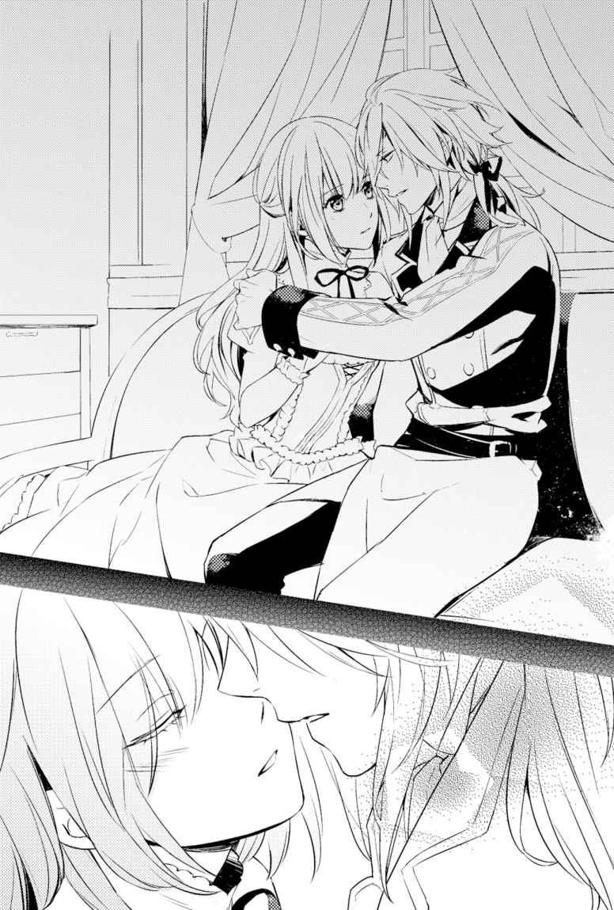
その時、扉が強くノックされた。
同時に、窓を通して部屋の中にまで響いてくるのは、金槌で叩く警戒を促す半鐘の音だ。
我に返り、急いでレジーから離れた私は、扉をすぐさま開けた。
そこにいたのは、厳しい表情のグロウルさんだった。
辺境伯からの呼び出しがきたらしい。レジーは急いで部屋を出ていった。
物言いたげなレジーを見送った後、私の所にも召使いのおばさんが連絡に来てくれる。
「あんたのこと奥様が呼んでたよ？ それにしても、こんな細っこいのに最近は魔獣の関係で城の外まで行ったり、大丈夫なのかい？」
よく食事時に「もっと食べなさいよ」と、大盛りを勧めてくるおばさんだ。ちょうどベアトリス夫人の所に出入りしていて、用を頼まれたのだろう。
心配されて、ありがたいやら申し訳ないやら。
......あと、現実に戻ってきた気分になった。
ほんの数秒前まで、どこか現実じゃないような感覚でふわふわとしていた。だから、いつもなら考えないような発想が浮かんで、レジーのことを抱きしめてあげたいとか、もっと近づきたいとか思ってしまったのかもしれない......。
さっきまでのことを振り返ると、とたんに恥ずかしくなる。
何浸ってたのよ私！ しかもあのままじゃうっかりキ、キ、キ......スとかしちゃったかもしれない？
いやいやありえない。レジーは王子なんだよ？ お互いにしか理解できないことがあるから、そういう意味で特別だと思ってくれてるだけで、心配だけどつい、どうしたらいいのかわからなくなったから、あんな行動に出たのに違いない。
私も、どう言ったらわかってくれるんだろうって、混乱したから。
大丈夫だってことを、上手く言えなくて。
妙な雰囲気に、流されそうになっただけで......お互いに。
でもおばさんが心配してくれたおかげで、はっと気付いた。私が守りたいものは、今やレジーだけではない。辺境伯も、父を失うかもしれないアランのことも、私と仲よくしてくれるおばさん達や調理場の人達も、みんな無事でいてほしいんだ。
とにかく正気に戻してくれてありがとうおばさん、と思いながら、私は軍議を行うという主塔二階の会議場へ走る。
そこに集まっていたのは、ごく少数だった。
辺境伯夫妻とアランとカインさん。そして辺境伯領の騎兵隊や守備連隊の隊長、そして一足先に来ていたレジーやグロウルさんだ。
私は侍女として、ヴェイン辺境伯の隣に座るベアトリス夫人の後ろに立つ。マイヤさんとクラーラさんもいたので、その隣に収まって、ちょっとほっとした。
参加する侍女が私だけだったら、肩身が狭すぎるので。
けれどヴェイン辺境伯による話が始まってすぐ、私は頭から色々なものがすっ飛ぶほど驚いた。
私とカインさんで捕らえた男が白状したらしい。ルアインの軍が、既に国境の近くまで迫っていることを。しかもその侵入経路が、北からだという。
「北から!?」
それは予想外の侵攻ルートだった。
彼らが守っていた老魔術師は、南側にエヴラール辺境伯側の目を引きつけておく役目を負っていたらしい。でも北側から侵入するなら、これから交渉を行おうとしているサレハルド領を通らねばならないはずだけど......。
「サレハルドは裏切ったのでしょうか」
長卓の上座に座ったレジーの言葉に、すぐ右手斜めに座ったヴェイン辺境伯が首を横に振る。
「そこまでは捕らえた男も知らされていないようです。北から軍が来ること。それに呼応するように城を攻めることを命じられていたようですね」
「では、魔獣や魔術師まで同時に襲撃してくる可能性があるのですね？」
「そうだ」
アランの問いに、ヴェイン辺境伯がうなずく。
思わず私は唇を嚙んだ。あの魔術師を倒しておけば、そちらの部隊に気を払う必要がなくなっていただろうに。
「軍の規模はどうなんでしょう」
「それも知らされていなかった。敵も陽動を行わせた者が捕まえられることを、想定していたのだろう。ただ、サレハルドを通過しての進軍だ。大軍を動かしても、国境を越えるよりこちらは察知しにくい。かなりの規模だろう」
ベアトリス夫人の問いにヴェイン辺境伯が答えたものの、情報の足りなさをその場にいた皆が実感しただけだった。
「まずはそれが正確な情報だったとしての、対応を話そう」
レジーが話を振ることで、ヴェイン辺境伯は現状で立てられる作戦について話した。
まず敵は二方向から来るのが確実として、国境の北から侵入するルアイン軍への対応を遅らせるため、ルアインの別働隊がなんらかの行動を起こすだろう。
そのため、少なくとも三か所での戦闘が予想された。
私は唸りそうになる。ゲームの場合、城だけの戦闘になっていたのは、城へと攻め込まれるまで対応がとれなかったからだ。今回は城へ迫る前に対処できる。
しかし国境の防備の要として、ある程度の兵力を常に保っているとはいえ、国を挙げて侵略してくるルアインの兵力に勝てるものなのか。
しかもエヴラール攻城戦はプレイヤーの手慣らしに戦闘が行われたわけでもないので、兵の配置は不明。手がかりがないので、戦を経験している大人の采配に期待するしかない。
ヴェイン辺境伯も敵が大多数で侵入してくることを想定しているので、大きく読み誤るということはないだろう。
「国境の守備はある程度残さねばならないだろう。茨と峡谷と山のおかげで、国境の防壁以外からはこちらに侵入するのは難しい。だから三百を残す。あとの三百を召集した軍に加える」
その他に、明日の朝までに城に集められるのが千人。
これは城の内と外に待機させている兵力だ。魔獣の討伐で警戒をしていたため、通常よりも多い人数だという。
次に至近の分家からの派兵を合わせたら、最終的に三千三百にはなると言った。
ここには民間からの兵は含んでいないらしい。そちらは召集するのに時間がかかる。今すぐ伝令を走らせて、それから二日猶予があれば近隣から召集した兵が六千集まるという予想だった。
三日あれば、なんとか一万まで集められる。これは辺境で、紛争に慣れた土地だからこそ可能な数らしい。畑作に精を出している皆さんが、自分達の領地と家族を守るため、武具を常備して、すぐに駆けつけられるようにしているからだ。
しかし捕虜の自白によれば、ルアインの軍はもう侵攻してきていてもおかしくはない頃合いだという。
──レジーの到着に合わせているからだ。
「ルアインは、王位継承者であるレジナルド殿下を殺めるつもりだろう。その後王都へ駆け上って陛下を亡き者にすれば、王権の代理人が王妃となる。王妃がルアインの要求をのめば併合は完了だ。そのためにレジナルド殿下を、サレハルドとの国境近くまで出向かせるタイミングを狙って実行していたのだと思う」
ルアインは交渉が必要になるよう、サレハルドとエヴラール領に問題を起こしたのだ。そして王妃派の貴族もいる中で、ルアインの側にレジーの動きを隠し通すのは難しい。公務であればなおさらだ。
「私は偵察が戻り次第、軍を率いて進路上に布陣する。出立は明日か明後日の朝になるだろう」
「自ら出られるのですか？」
ベアトリス夫人が表情をやや曇らせた。
「私どもがついておりますよ。必ず辺境伯には城にお戻り頂きますので」
騎兵隊長がそう請負う。ベアトリス夫人はうなずいたが、不安そうだ。
「私の足も、ほぼ完治しております。代わりにと言いたいのですが、大軍を指揮するには未熟な身ですもの。足を引っ張る結果になっては申し訳が立ちません。だから城の守備と殿下の警護は私にお任せ下さいませ」
そう、ベアトリス夫人の足は完治したのだ。戦に彼女が参加できることも、ゲームの時よりずっと有利な点だろう。
さらにいうと、ヴェイン辺境伯がルアインの機先を制すことができれば、少しは防衛戦も有利になるだろう。そう言ったのは辺境伯自身だ。
「ルアインは全ての軍をエヴラール城だけに傾けるわけにはいかないだろう。日数をかけてこちらを攻略しようとしたなら、他の領地でも防備を固められて攻めにくくなる。攻略しきれなければ、数隊を残して先を急ぐか、奇策を講じるはずだ」
「奇策ですか？」
「魔術師がいるのだろう？ 魔獣を扇動して城に攻撃をしかけてくるだけではなく、魔術師自身にも攻撃をさせると考えている」
問いに答えを得たアランは、渋い表情をして言う。
「では、そちらには私が行きます」
アランの回答に、辺境伯も目を見張る。
「お前には、ベアトリスと一緒に城の防衛をさせ、万が一の時には、殿下を脱出させる役目を頼むつもりだったが......」
「この一か月、私も魔獣の討伐に参加しております。『魔術師を探し出せる者』と一緒に、城へ攻撃を加えられる前に抑えに出ます。ただ、敵は魔獣を連れていることが予想されるので、弓兵と歩兵をいくらかお貸し頂きたいのですが」
ヴェイン辺境伯は、しばらく目を閉じてアランの申し出を吟味しているようだった。
目を開いた後は、もう引き留めることもなくなっていた。
「ではお前に任せる。兵の数の要望はあるのか？」
「百三十もあれば十分かと。魔獣達は、毎回三十匹程度の集団で襲撃を繰り返していました。それと魔術師と敵兵に対処するためには、その前後の数が必要かと」
この一か月の討伐で、アランは魔獣の出現数の限界をそれと見極めたのだろう。さすがは主人公。用兵のために必要な観察眼とかが備わっている。
そして「魔術師を探し出せる者」というところで、アランはこちらに視線を向けてきていた。
アランは一緒に来いと言っているのだ。私が魔術師の居場所を見つけられるから。
いつもはアラン達の討伐に、私が乗じて魔術師を探すという形だった。連携をしていたわけではなく、ただカインさんが許可をとってくれたから同時に行動ができていただけで。
そのアランが、私を自分の作戦行動の中に入れようとしている。
受け入れてくれた、という気持ちと同時に、この状況になるまでアランに信じてもらえなかった自分が嫌になる。それでもアランが差し伸べてくれた手をとりたい。
「キアラをお借りしたい、母上。彼女のことはまたウェントワースに任せます」
ベアトリス夫人が私に「どうする？」と視線を向けてきても、はっきりとうなずくことができた。
「しかし彼女は、とても戦えるようには......。それに今から狼煙を上げたら、協力者となってくれる南西の二家からの援軍が、二日ほどで到着します」
レジーが苦言を呈した。あくまで私を守ってくれようとしているのだろう。
ヴェイン辺境伯や騎兵隊長達も、その言葉に心動かされた表情になる。剣など持てそうにない私に、不安を感じたのだろう。だから私は言った。
「既に一度、魔術師を捕まえることには成功しています。魔術師を守る人間がいたことは予想外で取り逃しましたが、今度は逃がしません」
厳しい表情になるレジーと、視線が合う。
どうしてわかってくれない、と言われている気がする。
けれど私の答えはもう揺るがない。緊張感のある場が、私の心を引き締めてくれた。
──私は、みんなを守りたい。
死にたくないけど、今ここで動かなければ絶対に後悔するから。
しかも攻城戦に魔術師の存在があることも、魔獣の襲撃も予想外だ。ルアイン軍の侵攻ルートまでもがゲームと違う。なら万全に備えても、城を守り通せないかもしれない。
だから魔術師と魔獣だけでも減らさなければ。
剣が使えない私でも、それなら役に立てるだろう。それが起こりうることを知って生まれた、私のいる意味だと思うから。
一人一袋。
大きくはないものの、小さな袋を通常の荷物とは別に背負った集団が、朝日に背中を押されるようにエヴラール城を出発した。
「小さいのに重いな......」
「お前のは粉か？ 俺のはごつごつして鎧に傷がつきそうだよ」
「僕の袋さ......もしかして肉？」
兵士達はひそひそと話しながら、先導する騎馬に従って進む。
おしゃべりしたくなるのも無理はない、と私は思う。使用法は説明されたけれど、変なものを持たされて行軍させられているのだ。魔術師と魔獣という、人間よりも厄介だろう相手と戦うために。
私としてもこれは「上手くいったらしめたもの」という作戦なので、確実なことが言えないため、彼らの不安を取り除くことができないでいる。
私のほうは動きやすいように男物の衣服を借りて、カインさんの馬に同乗させてもらっていた。騎士見習いの少年が貸してくれた、黒っぽい上着とズボンに、ブーツを履いている。
手には鎖を巻きつけて石のペンダントを持ち、魔術師のいる方向を探っていた。
「このまままっすぐ......」
私がつぶやく言葉を拾ったカインさんが、他の騎士に伝えて進路を修正していく。
そうしてかなり近づいたと感じたのは、城から数時間離れた街道だ。
私は方位しかわからないので、森の中を突き進むルートをとってしまうことになったが、おかげで人の背丈二つ分ほどの崖の上から、敵の様子を先に視認することができた。
「いた」
老魔術師とそれを囲む五人の兵士達。その前方に魔獣の群れがいる。
ささやき声で発見が伝えられ、攻撃のために整列しながら兵士達も敵の姿を確認していた。
街道を進んでいるのは、行動しにくいからだろう。森を突っ切るのは重労働だ。
ただ魔獣の数が多い。
いつもは三十匹程度だが、今日は風狼と空クラゲが五十匹ほどいるのではないだろうか。もしかすると今までは力を温存していただけで、五十匹があの老魔術師のキャパシティなのかもしれない。
しかし混成部隊のせいか、時折魔獣同士で諍いを始めそうになったりしていた。
......魔術師が抑えているようだが、相手は人ではないので上手くいかないようだ。やがて魔術師は風狼を先行させ、やや後方に空クラゲを配置し、自分達はさらに後方から追う形に組み替えていた。
しめた、と私は思う。
すぐにカインさんを振り返れば、彼も今後の行動を察してくれたのだろう。馬首をめぐらせてアラン率いる一隊から離れようとした。
「キアラ」
アランがそんな私を呼び留める。
「十騎連れていけ」
「え、でも」
十人も騎兵を連れていけば、兵の数が減ってしまう。風狼も空クラゲも、こんな低い崖はものともしないだろう。すぐに白兵戦になってしまうかもしれない上、今まで以上に大量の魔獣を相手にするのに、大丈夫なのだろうか。
「人間の兵を相手にするなら、騎兵が一番だ」
「ありがたく好意を受け取りましょう、キアラさん」
カインさんが騎士を貸してもらえと言う。
「そうしてもらわなくては困る......レジーになんて言われるか、わかったもんじゃない」
アランのほうも、さらに勧めてきた。しかもレジーの名前を聞いて、私もさすがに断り切れない気分になる。私がこうして出ることに、結局いい顔をしなかったレジーだ。大怪我を負って帰ったら私も怒られるだろう。
お互いにレジーにお小言をもらうのが嫌な者同士で合意する。少し人数を減らしてもらい、五騎を借りることにした。魔術師を守る敵兵も五人なので、その人数がいれば十分だろう。
私達は、すぐに崖を迂回して街道へ向かう。
その間にアランは攻撃準備を整えていた。
崖下に数人が袋の中身をまき、弓兵は弓に矢をつがえて一斉に射た。
放物線を描いて落下する矢を見て、魔獣達は崖上にいるアラン達に気がついた。風狼は一斉に矢を放ったアラン達へ向かって走り出し、空クラゲはふわふわと移動を開始する。
さすがに敵の兵士達は、老魔術師を置いてはいかなかった。私達が不意打ちで老魔術師を捕まえたことがあったので、また狙ってくると警戒しているのだろう。
裏をかくには、時機を見定める必要がある。
離れた場所で馬から下りた私達は、木立に隠れて敵の様子を観察する。
先行していた風狼達は、すでに崖下に迫っていた。そのまま登ってしまうかと思いきや、風狼達が逡巡したようにその場をうろつき始める。
彼らが気にして匂いを嗅いでいるのは、肉である。
ここまで兵達に運ばせ、先ほどばらまかせたものだ。
やがて風狼達は、アラン達の元へ急行するよりも、食事を優先させることにしたようだ。
「おい、なんで狼どもが動かないんだ？」
「わしのほうはちゃんとやっとるわい！」
老魔術師と行商人ふうの格好をした敵兵達が、この事態に騒ぎだす。
それを見た私は、しめしめと思った。
私は魔獣が操られているとわかって、その理由を推測していた。たぶん魔獣は魔術師くずれと同じように、あの赤い飲み物を飲まされ、師弟関係と同じ制約に縛られているのではないか、と。
なのに、どうして魔術師くずれのように砂にならないのか。それは魔獣が、元々魔術師に近い存在だからだと思う。
契約の石を体内に取り込まなくても、魔術を使える身体なのだ。おかげで砂になって死ぬことはないのだろう。
けれど少量の契約の石では、師弟関係のような強制力を持たせるのは難しいはずだ。それなら......生きていく上で必要な欲には、勝てないのでは？ と考えた。
予想どおり、狼達は食欲を優先した。ていうか魔獣だからって、あの魔術師達は餌やりを気にしていなかったのではないだろうか。狼のがっつき方がすごい。あまり小さくない肉の塊を、ろくに嚙まずに飲みこんでしまっている。
ある程度食べたところを狙って、アランがまず矢で攻撃を加えた。
肉につられて油断していた狼が数匹、矢が刺さって動けなくなる。
しかし攻撃されたことで、狼達の気持ちが食欲から逸れた。崖を駆け上がり、アラン達に襲いかかろうとした。
風を起こして飛び上がった狼達は──飛び上がりすぎてアランたちの頭上を越してしまう。風狼自身もぎょっとしたように足をばたつかせ、なんとか着地したが、動揺して行動が遅れたことで、アラン率いる兵士達への対応が遅れた。そんな風狼をアラン達は一気に片付けていく。
「上手くいきましたね」
カインさんのささやきに、私はうなずいた。
「こんなドンピシャだとは思いませんでした」
種明かしをすると、肉の中に鉱石の粉やカケラを入れていたのだ。
風を起こす魔術を使うため、時折魔術師が媒介として利用する流晶鉱だ。この知識を得たのは、エヴラール辺境伯の城の書庫にあった、何代か前の領主の日記からだ。
魔術師が集めていた魔獣にはパターンがあった。
風狼、空クラゲ、どちらも風を起こす属性の魔獣だ。そして風狼は、この鉱石が採掘される場所の近くに生息している。風狼は定期的にこの石をかじって、風を起こす力を維持しているのだろう。
そこで考えたのが、魔獣達に魔術の媒介となるこの鉱石を過剰摂取させることだ。
取り込みすぎた媒介。そのせいで魔術が暴走するのではないかと思ったのだ。
でも失敗する可能性もあった。その時には魔獣の数だけ減らし、一度退却。それからもう一度態勢を立て直してアタックすることにしていたのだが。
予想どおりの結果に、私の口角が上がる。
風狼の様子がおかしいことを見て取った老魔術師は、空クラゲを急いで向かわせた。
しかしそちらには粉にした流晶鉱をばらまく。これの用意に、一番時間がかかったかもしれない。崩れやすい鉱石で助かった。
浮く力に魔術を利用していたのだろう空クラゲは、粉がかかると高さを調節できずに空高く舞い上がりすぎたり、地面すれすれまで下りてくる。
接近戦を挑むには、長い触手や棘が怖い空クラゲだが、そうして混乱しているおかげで、弓兵達は次々と射落とすことができていた。
落ちたクラゲは土の上でばたついた。止めを刺すにはさらに矢を射なければならない。けれどアランはそちらではなく、浮いているものを射落とすことを優先させていた。
完全に倒せなくとも、無力化できればそれで十分だ。
この状況に、真っ先に焦ったのは老魔術師だった。
「わ、わしゃ逃げるぞい！」
「おい！」
反転して駆け去ろうとした老魔術師を、兵士の一人が捕まえる。
「契約が違うだろうが！」
「これは契約違反じゃないわい、また魔獣を集めてここまで来ればいいんじゃろが？ ヒヒッ」
「しかし本隊の行動に間に合わない！」
「だが手駒が足りないのは事実だ......」
一気に混乱し、敵は逃げたい者と逃げるわけにはいかない者とに分かれて言い争いを始めた。
私達はそこへ突入する。
間近まで迫ったところで、気付いた敵兵が剣を抜くが、もう遅い。
カインさんの一閃で、一人が斬り伏せられる。
血しぶきに私は怯みそうになった。
歯を食いしばる間に他の四人の兵士も、一緒に行動していた騎士によって倒される。
あっという間の出来事に、老魔術師は呆然とした表情をしていた。
けれどくっと笑い声を漏らす。
「ヒヒッ。これは僥倖じゃな。おかげでわしは自由の身だ。ウヒヒヒ」
「......どういうこと？」
カインさんの後ろから尋ねた私を見て、老魔術師は目を瞬く。
「ほう、こないだの嬢ちゃんか。ウヒヒ。もう敵対する必要もなくなったからの、教えてやろう。わしは持病の薬と引き換えに、この仕事を受けたんじゃ」
老魔術師は、近くに倒れた敵兵の一人の荷物を取り上げた。
「この薬さえあればいいのよ。あとは遠くに逃げてしまうだけじゃ。もうお前さん達の敵になる必要はない。さらばだ！ イッヒヒヒ」
笑う老魔術師が浮かび上がる。風の魔術だ。
「ま、待て！ そんな理屈が通るか！ 自由にさせておいたら城を攻めるつもりだろうが！」
こちら側の騎士が叫んだが、老魔術師はヒョッヒョッヒョと笑うばかり。
しかしその笑い声が唐突に途切れた。飛来した矢が老魔術師の肩に突き刺さったのだ。
飛ぶ力を保てなくなったのか、ゆるゆると地上へ下りてくる老魔術師の背中に、さらに矢が突き刺さる。
「え!?」
何が起こったのか、私はすぐには理解できなかった。
しかも矢は三度飛来する。
老魔術師の頭に刺さりかけたそれをカインさんが弾いたものの、地面に落ちた老魔術師は、明らかに致命傷を負っていた。
遠くに、駆け去る騎馬が見えた。一騎のみということは、もしかしてこういう事態に備えて、監視をつけていたのだろうか。
「口封じかいな......わしとしたことが、気付かなかったとは。ヒヒッ」
老魔術師もそう考えたのだろう。
カインさんが、すぐさま矢を放った刺客を五人の騎士に追わせる。
私はどうしたらいいのかわからないまま、老魔術師の側に膝をついた。
「だ、大丈夫です？」
「大丈夫に見えるかのう？」
オーソドックスな質問に、皮肉で返されてしまう。老魔術師はくくっと笑った。
「これで......わしの人生も終わりか。まだすべきことがあったというのに......」
つぶやいた老魔術師は、一度目を閉じてから私を見上げた。
「お前、魔術師になりたいと言ったな？ 本当になれるんかいな」
「なれるわ。私は魔術師になれるのを知ってるの」
「ほぅ、なんでじゃ？」
「あるかもしれない未来を一つ、知ってるの。その未来では、サレハルドの交渉のため王子がやってきたとたんに、ルアインに侵略されてた。そして私は、魔術師として土人形ゴーレムを操ってた」
この場にカインさんと老魔術師しかいないので、私はそう告げた。
言ったはいいものの、バカにされると思っていた。妄想を未来とはき違えているんだろう、と。しかし老魔術師は違った。
「未来視に、土人形ゴーレムか......ヒヒヒッ。そうか、そういうのもいいかもしれん。夢がある」
私の答えを聞いた老魔術師は、一瞬遠い目をした後でぐっと目を細めて私に問いかけてきた。
「お前さんが、わしの願いを叶えるのに挑戦するなら、弟子として魔術師の契約をしてやってもいい」
え、本当に？ 驚くが、死に瀕したこの老魔術師が今更、噓をつくようには思えない。
「願いって、どういうもの？」
「......土人形ゴーレムに命を吹き込むように、わしの魂を作ったものの中に閉じ込めるのだ。失敗しても、このままでも死ぬだけだからの。試す価値はあろう。上手くいけばわしはさらに長い時間を魂だけでも生きていける......とにかくまだ死にたくないのだ。試すのなら、お前さんの要求どおりにしてやる。どうせ一旦死んだ後、魂になってしまえば師弟間の戒めなんてものも働かないじゃろ。ヒヒヒッ」
ああそうか、と私は納得した。
捕獲に失敗した時、この老人は私をじっと観察していた。もしかすると、魔術師になった私の手を借りられないか、と考えていたのかもしれない。今も、現世にとどまる方法があるのならと、私に取引を持ち掛けたくらいなのだから。
しかしこれは好機チャンスだ、と私は思った。
この切羽詰まった状況で、他に師になってくれそうな魔術師がいるとは思えない。それに老魔術師が言うとおり、死に瀕した彼ならば、妙な制限をつけられることもない。
「いいわ。でも成功は期待しないで」
「キアラさん......」
即決した私を、カインさんが止めようとする。けれど私は首を横に振った。
「元々の目的が達成できるんだもの。この機を逃したくないんです」
「ヒヒッ、思い切りのよい若者はいいもんじゃな。早く契約の石を寄越すがいい......その赤い石じゃ」
老魔術師は、私が持っていたペンダントを指さす。やはりこれは契約の石だったようだ。
茨姫がこれ以外を使ってはいけない、と言ったのは、契約のため？ もしかして私の未来を予知していたのだろうか。
ペンダントから石を外すと、地面から持ち上げる力も尽きた老魔術師の手に載せる。彼はぐっと石を摑んだ。
カチッと音がした後で老魔術師が手を開けば、石が十分の一ほど欠ける形で割れていた。
「本来なら、弟子への負担を考えて大きさの比率は三対七くらいにするのだがな。死にかけの老いぼれにはこれが限界だ。あとは己でなんとかせよ......わしに石を飲み込ませたら、お前さんもすぐに飲み込め」
うなずいて、私は老魔術師の手から二つに割れた石を取り上げた。
緊張しているのだろう、指先が震える。それでも欠片を老魔術師に口に押し込んだ。するりと飲み込めたようだ。それから私も、思いきって残りの石を飲み込む。
口の中に含んだ石は、喉を傷つけることなく、まるで液体になったかのように胃に落ちていく。そうして食道から肺へ、心臓へ、血管を伝って内臓から自分の全身にさらに何かが広がって──。
「............っ！」
内側から、炎を飲み込んだような不思議な感覚と痛みが走る。
さらに細胞の一つ一つに、何かが針を刺すようにして侵入してくる感覚。
自分が叫びながら地面を転がっているのを感じるけれど、どこか別の人の出来事のように遠い。いつまで続くかわからない痛みと熱が、じわじわと身体に染みこんでいく。
そこから自分の身体が、液体のように崩れては元に戻るような、嫌悪感をもよおす感覚に、私は頭の片隅で悟る。
たぶん魔術師になりそこなった人たちが砂になって崩れるのは、このまま元に戻らなかったからだ。死に際して暴れたりするのは、痛みのせいだろう。
私の身体は、時折元に戻りにくくなる。そのたびにどこからか指令を受けたように、崩壊が押し留められ、その間に身体の戻る力が回復する。
たぶんこれが、師によるフォローなのだろう。
やがて内側から発する熱に汗が浮かぶのを感じ......私はハッと目を覚ました。
「キアラさん、キアラさん!?」
いつの間にか、私はカインさんに抱き起こされていた。
真っ青な顔色で私に呼びかけていたカインさんは、しっかりと目を開き、瞬きする私を見て、ほっとした表情になる。心配してくれたようだ。大変申し訳ない。
「無事ですか？」
「......大丈夫です、生きてる......と思います」
なんとか答えた私は、自分の身体を見回し、指先を動かして確認する。
どこも砂になったりはしていない。でも麻酔が切れかかった時のように、自分のものじゃないような、変な感覚がうっすらとある。
まるで身体が変質したような──と想像して、背筋が震えそうになった。
私は魔術師にはなれたと思う。けれど魔術師というのは人間と同じ存在なんだろうか。人じゃない何かに変質したのだとしたら......。
けれど考えたってどうしようもない。
身体は動かせるので、カインさんに礼を言って起き上がった。動くと違和感もなくなっていって、私の心の中の不安も小さくなっていく。
老魔術師は私の隣に横たわっていた。けれど呼吸がとても小さく、今にもとぎれてしまいそうだ。
「......宣言したとおり、魔術師にはなれたようだな？ ヒヒッ」
かすれた声で笑う老魔術師に、私はうなずく。
「魔術ってどう使うの？」
次にすべきは、老魔術師との約束を果たすことだ。
「お前さんは......土人形ゴーレムを作れると言っておったな。なら......地面に手を当てて想像するがいい。自分の内にあるのと......同じ力を土から集めて......成形」
老魔術師の言葉は、とぎれとぎれになりつつある。その目もうつろだ。......さっきの契約で力を使い果たしてしまったのだろう。
言われたとおりにしようとして、座り込んだまま地面に手をついた私は、はたと思い出して尋ねる。
「ところで私の師になる人の名前は？」
名前を聞かないと、魂なんて呼べないんじゃないか。そう思ったのだ。
すると老魔術師は、かすれた声で一言告げた。
「ホレス」
それ以後、老魔術師は瞬きもしなくなる。ややあって、端から少しずつ砂のように崩れ始めた。......やっぱり魔術師は、亡くなると砂になってしまうようだ。
「キアラさん、魔術師が......」
「うん、急ぐ」
私は目を閉じ、言われたとおりに自分の中に感じる「魔術」の力と同じ物を、土の中から感じようとする。
「しかし、もうこうなっては、約束を果たさなくてもいいのでは？」
カインさんが、老魔術師を放っておいてもいいのではないかと言う。確かにそういう選択肢もある。けれど私はそれをしたくなかった。
「約束はなるべく守りたいんです。だって人生の最期を私のために使ってくれたから」
これでレジー達を私でも守れるようになったのだ。その分の恩は返したい。
私は意識を集中する。初めて尽くしの上、これ以上導いてくれる人もいない。
老魔術師の言葉を思い出して試行錯誤しながら、なんとか土の中全体に、自分の中にある熱と同じものを感じられるようになった。
これを成形して......と考えたところで、ふと「土人形ゴーレムってどんな形がいいんだろ」と思った。
普通に考えるなら、ゲームで見たような巨大ゴーレムだ。
けれどホレスという名前の老魔術師が宿ると考えると、さすがに巨大すぎる。でも小さい物となると、なんかレゴみたいなのしか思い浮かばない。
こう、両手で持てるぐらいの大きさがいいんじゃないかな。もし会話ができるなら、口とか目とかもいるよね？
そんなことを考慮した末に浮かんだのが、宇宙人顔な遮光器土偶で。......そういえばホレス師匠の顔は、どこか宇宙人っぽいよね。ぴったりかもしれない。
いやいやそれはかわいそうだから別なものにしようかな、と思った瞬間に集中が切れた。
「げ......」
目を開くと、そこには土偶ができ上がっていた。
私が抱えやすい大きさの、高さ三十セル未満の小さな土偶だ。
しかしホレス老人は、半分ほど砂になっていた。
もう後戻りはできない。だから土人形ゴーレムの中にホレス老人の魂を引き寄せようと念じた。するとホレス老人から、小さな赤い石の粒がいくつか漂ってきて、土偶の中に入り込んでしまう。
その瞬間、カッと土偶の宇宙人みたいな目が光った。
「おお、これがわしの新しい身体か！」
壺の中に顔をつっこんでしゃべったような反響した声が聞こえた。もちろん、目の前で全部砂になりかけたホレス老人と同じ声だ。
えっと......成功はしたけど。これ喜んでいいの？
ちらりと横を見れば、カインさんの頰がひきつっている。やっぱ変だよね？
でもホレス老人は器用に土偶の手足を動かしてご満悦の様子だ。
まぁ外見はとにかく、確認したいことを優先しよう。
「えっとホレス......師匠？」
一応師弟関係も成立したから、師匠と呼ぶべきだよね？
「師匠？ ウッヒッヒッヒ」
師と呼ばれたのが嬉しいのか、赤茶けた土の色をした遮光器土偶が身をよじらせる。この笑い方は間違いない。ホレス老人だ。
一応、肩と首と大腿部と腰が動かせるようだ。そんなつもりで作ったわけじゃないが、可動域の広いプラモデルみたいなことになってる。
そして恥ずかしがる土偶はなんかキモいです。
「この術ってどれくらいもつんでしょ？ 私初めてでよくわからないんですけれど、師匠の新しい身体っていうか、この出した人形っていつまでもつのかと」
「ヒッヒッヒ、若い娘の初めてを、わしが奪ってしまったとはのぅ」
ホレス師匠の返事に、慌てたようにカインさんが私の耳を塞ごうとしてくる。きっと女の子に下ネタを聞かせちゃいけないと思ったのだろう。
しかし知らなければわからない程度だし、私は前世にて鍛えられた素地がある。......ほら、中学生男子とかって下ネタ好きだから。耳に入っちゃうんだよね。だから心配しないでとカインさんに言おうと思った私は、ふと気付く。
この土偶師匠、やっぱり私と一緒に移動するんだよね？ てことは、レジーやアランのみならず、辺境伯夫妻の前でも色々口からだだ漏れる可能性がある。
よし、今から注意しておこうと考えた私は、下ネタを口にする土偶に、淡々とデコピンの刑を執行した。
「おうっ、痛くはないが何か衝撃だけは来るのぅ」
「なんだ痛くないんですか......まぁ、次はこれでは済まないかもしれませんよ？ 私は流せますけどね？ 周りの人がうっかりこの新しい身体を踏み潰して壊すかもしれませんし、自由すぎる発言はなさらないほうがいいのでは？」
「ちっ、やっぱり普通じゃない弟子では、恥ずかしがりもしないか。面白くないのぅ」
やれやれといったジェスチャーをした土偶は、諦めたように答えた。
「さっきの質問じゃが、わしの身体はお前さんが魔力を足す限りもつじゃろ。普通なら時間が来ればそれで終わりだろうがのぅ。通常は命を吹き込むといっても、術者の魔力をかりそめの魂として吹き込んでるだけじゃろ。だがこれは、わしが入ってるからの」
ホレス師匠の魂が入っている分、耐久時間が増すようだ。
「まぁ、補給なしでも三日ぐらいはなんとかなりそうな感じかのぅ」
そう言われて連想したのは、電池式のおもちゃだ。電池が切れたらとたんに動かなくなる。けれど電池がもつ限りは、持ち主が旅行に行ったって平気、みたいな感じだろうか。
「何にせよ、わしの魂が在り続けるためには、お前さんと一緒にいなければならんだろう」
「うん、そんな気はしてました」
「え、連れていくんですか!?」
カインさんがぎょっとしたように叫ぶ。
今まで静かだったのは、やたら奇矯な造形の土人形ゴーレムを私が作ってしまったり、あまつさえその人形がしゃべりだす状況についていけなかっただけだろう。
「魂を生き延びさせる......っていうと変な表現ですけど、それと引き換えに魔術師になる手伝いをさせたんですから、そのつもりでしたよ。あとここで放置したら、変な噂が立つと思うんです。私の名前と恨み事を叫びながら、砂になっていく土偶のせいで......」
それは勘弁してほしい。戦の中で生き残っても、変な評判がある子になってしまっては、やっぱりエヴラール領にいづらくなってしまう。それは嫌だ。
「......いや、まぁ......そうですね」
私の説得に、カインさんはなんだか苦悩するような表情でうなずいた。
ややあって、先ほどホレス師匠を射た男を探しに行った騎士達が戻ってきた。逃げ足が早く、捕まえられなかったようだ。
「でも大丈夫。師匠の魂は捕獲しましたし、後できりきり吐かせますから問題ありません」
「捕獲とか、物騒な表現を使う娘だのぅ。まぁ、わしの弟子になるような人間ならばそんなものか、イヒヒッ」
証言者は確保してるので、落ち込まないでも大丈夫ですよと言ったのだが、騎士達はぎょっとしたように土偶なホレス師匠を凝視していた。
「え......これ」
「ちょっと待て。今確かにしゃべったよな？」
「空耳じゃない......だと？」
突然の師匠のメタモルフォーゼについていけないようなので、彼らのことは一度置いておくことにした。
私は師匠の砂になった身体と衣服を、街道脇の林に埋める。今の私には、スコップも必要ない。ただ土を掘り起こすイメージを、大地に散在する魔術の力に伝えるだけだ。
この時魔術に驚いた騎士達に、カインさんがわけを説明してくれていた。
埋め終えると、師匠が持っていってほしいという物を、師匠の背負い袋に入れて持つ。魔獣への対処は終わったのだ。早く城に帰らねばならない。
小脇にホレス師匠を抱えた私は、またカインさんの馬に乗せてもらった。
カインさんはやっぱりまだ複雑そうな表情をしており、彼について自分の馬に跨った騎士達も、困惑顔でちらちらと土偶を見ている。
慣れるのにはしばらく時間がかかるかもしれないな......。
そんなことを考えながら崖の上まで戻ったのだが、そこはホレス師匠の魔術的な拘束が途切れたため、魔獣たちが三々五々に散って静かになっていた。
「アラン！」
手を振ると、真剣な表情のアランが馬を駆けさせて近づいてきた。
「キアラ、お前倒れていたみたいだが、無事......のわぁっ!? 何を持ってるんだお前！」
私の腕を摑もうとしたアランは、その小脇に抱えていた師匠な土偶を見て、思わず手をひっこめた。
「初めまして、これが私の魔術の師匠になったホレスさんです」
アランに紹介せねばならないと考えた私は、はいこんにちはーと、土偶師匠の両脇を支え、お人形のようにお辞儀させてみた。
「おい弟子よ。わしゃぬいぐるみとは違うんだがの？」
「わかってますよ。だから初めましての挨拶は必要だと思ってやったんですが」
「しゃべって......る......」
どういうことだ？ と困惑した表情のアランは、助けを求めるように私の後ろにいるカインさんに視線を向けた。が、カインさんはゆっくりと首を横に振る。その後目を向けられた騎士達も、何かを悟ったような表情で一斉に首を横に振った。
「アラン様、やはり魔術師というのはこちらの想定を超える存在なのかもしれません......」
「むしろ想定外な考え方をするからこそ、キアラ嬢は魔術師になれたのではと」
騎士達の言葉にアランが首を傾げ、それから目を瞬いて私に向き直る。
「お前、本当に魔術師に......なったのか？」
遠くから見ただけでは、何をしているのかよくわからなかったのだろう。私がうなずくと、アランがほっとしたような、困ったような表情になる。
「そうか......じゃあ、お前が言ったことは、本当に......」
つぶやいたアランは、おもむろに馬から下りた。
彼を追ってきた騎士も慌てて下馬し、アランの馬の手綱を摑む。その間に私の足元まで来たアランは、うつむいたまま膝をついた。
「え、なんで!?」
「必要だからだ」
アランは淡々と告げる。
「僕は謝罪しなければならない」
顔を上げたアランは、心細そうな目をしていた。そのアランに頼まれて、私はカインさんに土偶を渡し、馬から滑り下りる。
土偶を押し付けられたカインさんが慌てた声を出した。薄気味悪そうな顔をしながらも、落とさないでいてくれる。
「あの、謝罪ってまさか......」
「お前を噓つき呼ばわりしたことだ、キアラ」
一か月ほど前のあの日。私が前世のことを、アランに叫んだ時のことだ。
アランは信じてはくれなかった。ただカインさんの説得に応じて、黙って私のすることを見ていた。そして昨日からは、本当にルアインがエヴラールを攻めてくるとわかった上、私は言ったとおりに魔術師になった。
疑いようもない事態になって、アランは謝罪しなければならないと思ったのだろう。
律儀な人だ。でもこんなふうにみんなが見ている場所で、主家の人間が使用人に膝をついちゃいけない。だから私は止めようとしたのだ。
「ま、まぁ、それはいいから......」
「いや、よくない。けじめはつけるべきだ......僕はお前を傷つけたんだから」
しかし馬から下りたのはさらに失敗だったかもしれない。立ち上がってほしくてアランの肩に手を伸ばしたら、その手を摑まれた。
「え......と、ちょっ！」
次の瞬間には、私の指先を額に導く──それは、尊敬すべき女性にする仕草だ。
「キアラ・コルディエに謝罪をささげる。これで許してくれるとは思っていない。後でもかまわないから、謝罪を受け入れるために何をすべきか僕に教えてほしい」
慌てる私をよそに、アランは謝罪を終えてしまう。
「何をするべきかって、えっと」
正直、こんな大公開状態で大っぴらに謝罪されたら、人の注目を浴びてしまってどうしたらいいのかわからなくなる。
「ほんとは、こっそりと、にしてほしかった......」
すると謝罪をしてすっきりしたのか、アランは笑顔で立ち上がった。
「うやむやにしたくなかったからな。その要求はもうのめないから、別なことで頼む」
そうしてアランは再び騎乗し、騎士や兵士達に帰還すると告げる。呆然としてしまった私は、カインさんに笑われて我に返り、また同乗させてもらった。
「アラン様にしてやられましたね」
「本当ですよもう......。カインさんはアランと付き合いが長いんですから、止めて下さってもよかったのに」
「基本的には、思い立ったら即行動の人ですからね。今のは止める間もありませんでしたし、区切りがついてキアラさんも少しはすっきりしたでしょう？」
そう言われると、もう疑われていないとわかって、私も心が軽くなってはいる。
「若いっていうのは、いいことだのぅ」
のんびりとそんなことを言う土偶の首を絞めてみたが、なにせ相手は無生物。苦しがりもしなかったので、ちょっと悔しい。
移動を始めた私達は、約二時間後にはエヴラール城の近くに戻ってくることができた。
そこで私達が目にしたのは──エヴラール城へと迫っている軍勢と、黄色の地に黒で描かれた獅子のルアインの旗だった。
「なんで......なんで!?」
理解できなかった。
今朝、まだ敵の姿は見えず、という斥候からの報告があったばかりだった。
とはいえ、次の斥候が帰って来るまでの間に、敵が急接近していては困るからと、ヴェイン辺境伯は城から千の兵を率いて、私達とほぼ同時に出発していたのに。
なのにルアイン軍がこんなに早く城を囲んでいただなんて。
足止めすらもできずに、ヴェイン辺境伯は蹴散らされてしまったのだろうか？
確かにルアイン軍の数は多い。でもぱっと見で人数を当てられるほど、私は軍隊を見慣れているわけではないので、推測も難しかった。
予想ができなくて。気が焦る。
「カインさん、早く、お願いです！」
「わかってます......！」
カインさんは顔をしかめながら、馬に拍車を当てた。
身体が跳ね飛びそうになる私を、片腕で抱きとめてくれる。私は鞍にしがみつきつつ、師匠を抱きしめるので精いっぱいだ。
私だけではなく、ルアインの旗を見た瞬間、誰もが馬を走らせた。
アランも、置いていかざるを得ない歩兵達に、万が一の場合の指示を出してついてきた。
とにかくみんなにまだ無事でいてほしい。そうだという情報がほしかった。そしてルアイン軍の攻撃が始まっているなら、すぐにも駆け付けて全力で阻止するのだ。だって間に合わなければ何もかもがおしまいになってしまう。せっかく魔術師になれても、何の役にも立たない。
馬から放り出されないように耐えながら、私の眼裏にちらつくのは血を流して倒れるレジーの姿だ。
せめてレジーが外に出ていませんように。それだけを願って願って、ようやく全容が見える場所へやってきた。
木立と岩に隠れられる地点で、私達はようやく馬を止める。
緩い丘陵地帯の坂を進みゆく、兵士達の波。その先にあるのは、一年半の間に、私の「帰る場所」として馴染んだエヴラールの石積みの城だ。
ルアインの黄色の地に黒で描かれた獅子の旗が、刻一刻と城へ迫っていく。その歩みが止まるのは、城壁から射かけられた矢が降り注ぐ間だけだ。
矢が途切れると、ルアインの黒っぽい鎧を着た兵士達は盾を降ろし、じわじわと間を詰める。城壁を乗り越えて侵入するつもりなのか、長い梯子までも担いでいた。
こちら側からは見えないけれど、門にもルアインの軍は押し寄せてきているのだろう。
「ち、父上は......」
アランが呆然としたように目の前の光景を凝視している。
ヴェイン辺境伯はどうしたのか。それすらもわからない。しかも早く敵軍がやってきたということは、城のほうも、徴集兵をあまり集められなかったと考えるべきだろう。分家からの派兵も、ごく近くの者が間に合っていれば御の字ではないだろうか。
なら、城の兵力は......そう多くない。
私はめまいがしそうだった。
まるで、ゲームのオープニングそのものの状況だ。
このままでは負けてしまう。中にいるレジーやベアトリス夫人達も無事ではいられないだろう。
どうにかするための手はただ一つ。
千の兵に匹敵するだろう圧倒的な力。それを使える自分が何とかするのだ。
私はカインさんの馬から滑るように下りると、地面に手を当てて魔術を使おうとした。やり方はわかっている。あとはゲームでキアラが呼び出したような巨大な土人形ゴーレムを作り出して......。
「待て、弟子よ」
「師匠、だってっ！」
なんでこの状況で待てというのか。
反論しようと振り返って、投げ出した後で上手く着地し、一人で立っている土偶の顔を見た瞬間、ふっと私の中にあった焦りが鎮火する。
日常に引き戻されたような感覚になった。
そういえば師匠に顔が似てるからって、土偶を作っちゃったんだとか。みんなにぎょっとされたことを思い出したせいだろう。
思い出し笑いをしそうになって、だけど何も口から出てこない。焦りと攻撃的な気持ちが消えうせたら、急に絶望に襲われて、涙がこみ上げてきそうだった。
「ししょお......」
「おいおいおい、わしの弟子のくせに泣くな。わしは昔からふてぶてしいのが売りなんじゃ、イヒヒッ」
いっひっひと笑う土偶に、私は「うーっ」と唸る。
「だって、もうルアインの軍を魔術で蹴散らすくらいしか方法が思いつけないのに、どうして止めるんですか！」
「何をする気なのかはだいたい予測できるがのぅ。お前、巨大な土人形ゴーレムを出して兵士を潰していけばよいと思ったのだろう？ しかしよく見るがいい。土人形ゴーレムで一気に踏み潰した足下に、仲間がいては元も子もなかろうが」
「なかま？」
息をのんで、遠くを見つめる。
黒っぽい兵士達の群れの中に、ルアイン以外の旗はない。ないけれど、人並みがずっと向こうのほうでわずかに混乱を起こしているのがわかる。
ぱっと火花が上がったように見えた。とてもたいまつが火花を散らしたとか、そんな小さなものではない。悲鳴のようなものも聞こえる。
「あれ、まさか魔術!?」
「そうさのう。肉体を失った今だからこそ言えるが、ルアインに通じておる奴らは、魔術師が上手く増やせないならば、魔術師くずれを戦に利用できないかと考えていたようでな。もしかするとそういった奴が投入されて、あそこで暴れ狂っておるのかもしれん」
ホレス師匠の言葉に、私は叫んだ。
「もっと悪いじゃないですか！」
完全な魔術師ではないとはいえ、魔術師くずれも術をまき散らしてあたりを破壊するのだ。厄介な相手に違いない。
しかしホレス師匠は「イッヒッヒ」と笑う。
「考えてみよ、不肖の弟子よ。そんな魔術師くずれなんぞを使うということは、そこに敵がいるからではないのか？」
「え......あっ！」
そこで話を聞いていたアランが割って入ってきた。
「まさか、向こう側で父上が戦っているのか!?」
「お前さんの親父かどうかはわからんがな、軍を率いて外に出ているのなら、可能性があろう」
ヴェイン辺境伯が生きている可能性がある。
少しだけ心が上向いた。アランも希望を持てたからか、冷静な表情に変わってきた。そんな私達にホレス師匠は悪い材料を提示してくる。
「もう一つ問題がある。魔術師になったばかりのお前では、すぐには全ての魔力を扱えぬのだよヒヒッ」
「なんでですか？」
「契約の石だ。あれがお前の体に馴染んだばかりで、下手に魔術を使い続ければ、活性化しすぎて契約時のようにお前の身体をむしばむだろう。わしを入れる小さな人形や、一人分の墓になりそうな穴だけならまだしも、大軍を蹴散らして仲間を救うことまで考えるのなら、奴らを踏み潰せるほどの巨大な土人形ゴーレムを......まぁ、十体は必要だろうのぅ。お前さんにはまだ耐えられまい。死ぬぞ？ ウヒヒヒ」
思わず唇を嚙みしめる。
死ぬ......。私が最も避けたいことだ。けれど出し惜しみして、レジー達が死ぬのも嫌だ。
そんな私に、師匠は続けて語った。
「だから弟子よ心して聞け。あれは川の流れだ。無理に背後に岩を落とせば、その衝撃で下流へ向かう勢いが増すだけじゃ。水の道を変えるにはどうする。川を埋め立てたいのならどうするべきだ？」
「川......？」
ホレス師匠の言葉に、私は睫の先で火花が散ったようにハッとする。
まず、現在の敵兵は、城への攻撃とヴェイン辺境伯を倒すのと、両方に人を割り振っている。
そして私は土人形ゴーレムを一体しか使えない。
私が城を守るため、一体だけの土人形ゴーレムを正門前に置いたとする。
すると敵兵は、倒すのが難しそうな土人形ゴーレムがいるほうではなく、もっと簡単に倒せるヴェイン辺境伯達を先に片付けようとするのではないか。
でも私は土人形ゴーレムを一体しか使えないので、ヴェイン辺境伯を救うことができない。
かといって土人形ゴーレムをヴェイン辺境伯を助けるために動かせば、今度は敵が城へ殺到するだろう。わけのわからない土の巨人より、城を落とすほうがまだマシに思えるだろうから。
イタチごっこだ。どちらをも救おうとしたら、私の力がすぐに尽きてしまい、手をこまねいて見てることしかできなくなるだろう。
洪水に対して、土嚢を積む作業に似ている。対処はできても、応急処置に近いものだ。
ではもっと効率よく、ルアイン軍を城に寄せつけないようにするには......？
そんな私の思考を、アランが援助してくれる。
「動きが速い騎兵じゃなくて......歩兵が攻城のために前面にいる。ほとんどが平民からの徴兵だ。側には状況を管理し、指示を出せるように騎士がいるはず。それらの動きを統括しているのは本陣で、それはおそらくこの軍の中央だ」
最も守られ、兵達の流れが避けていく中洲のような場所を、ルアインの本陣だとして想像する。そこは将である人間を守るため、騎兵で固められているだろう。
「歩兵は一ターンの移動距離が短くて、彼らは命令がなければ動けない。移動距離が長い騎兵は、どこに土人形ゴーレムが現れても先に仕留めに来る？ となれば......」
頭の中で、ゲームの兵の配置図を思い描く。
けれど動かした後の状況までも頭の中で処理するのは難しくて、私は草の生えていない地面に近くに落ちていた石を使ってがりがりと描いていく。
「ホレス師匠......こんな感じ？」
「ほう。いい感じだの」
わかりやすく騎士を「Ｋ」、兵士を「Ｐ」、魔術師くずれを「Ｍ」で表記して配置すると、師匠が感心したような声を出す。
カインさんとアランが頭を寄せてきて、私は彼らに自分の計画を話す。
そうして話し合った内容を加味して別な図を描けば、二人もうなずき、ホレス師匠も不敵な笑い声を立てた。
方針が決まった。
「行こう、カインさん。アラン......敵将を討つ」
そうして私は地面に手をついた。
「さぁ出ていらっしゃい、土人形ゴーレム！」
ゲームのキアラが使った「土人形ゴーレム作製」の魔法を私はイメージする。
地中にある自分の中の魔力と同じ力がゆったりと近くに集まる。
それらは、周囲の物質を動かし、私の意思を感じ取って形を変え、やがて地表に現れた。
やや角ばった輪郭の、巨大な人の形。
石を組み合わせたロボットのような形をした二足歩行の土人形ゴーレムは、地の底から這い上がるように立ち上がった。樹木の枝先ほどの丈があるので、たぶん身長は十メートルほどだろう。
想像どおりの土の人形は、私の意思を感じ取ってルアインの軍へと向き直り──走り出した。
その時、ルアイン軍では兵が動揺し始めた。
ルアインの兵士達は、急に起こった不自然な地揺れにうろたえたのだ。
「な、何だ？」
「地震？」
その揺れには地を穿つような音まで付随している。
まるで巨大な何かが走ってくるかのように。
すぐに誰かが、もうもうと舞い上がる土煙に気付いた。原因はあれかと目をこらした者達は、現れた奇怪な化物に誰もが悲鳴を上げた。
「何だあれは!?」
指をささずにはいられない。自分達の何倍もの大きさがある、土色の巨人が走ってくるのだ。
その組成が土なのはわかる。所々に黄色い野の花が咲く草や枯葉が交じっているからだ。
巨人の四角い頭にある、暗い闇がとどまったような眼窩を見た瞬間、ルアインの兵士達は一斉にその進路から逃げだした。
「ぎゃあっ」
支え手を失い梯子の下敷きになった者が、さらに土の巨人に踏まれて、その姿は土くれの中に埋まって消える。
草の根が飛び出している土人形ゴーレムの足に蹴られた者が、宙を舞った後で動かなくなった。
その光景に戦慄する者達の前を、二十騎ほどの騎馬が土人形ゴーレムを追いかけるように駆け抜けた。そのマントの色は青。ファルジアの騎兵だ。
わかってはいても、誰もがすぐには動けない。こんな土人形ゴーレムと相対したことなどないのだ。もっと小さなサイズの魔獣が相手ならばまだ討伐の経験がある者がいただろうが。
動けないうちに、城から矢が降り注ぐ。
そちらへの注意を怠っていた者が矢に倒れ、さらに軍が混乱した。
果敢に土人形ゴーレムに立ち向かう者がいないわけでもない。本陣から駆けてきたらしい騎士達が何人か、土人形ゴーレムに向かって剣を振りおろす。
けれど土人形ゴーレムの足を止めることはできなかった。
土と草が飛び散り、青いマントの集団が駆け抜ける。
土人形ゴーレムの駆け抜けた痕が刻まれるように、ルアイン軍に一筋の人垣の道ができていった。
一方で、青いマントの集団である私達も必死だった。
「まっ、まだ!?」
「もう少しだ！ おいかまうな走れ！」
遅れないように、馬に土人形ゴーレムを追いかけさせるアランと私を乗せたカインさん、そして騎兵達。
速すぎれば土人形ゴーレムの足に蹴られそうになるし、遅ければ我に返った兵士や騎士の標的にされかねない。誰だって得体の知れない、倒せるのかもわからない代物より、斬れば血が出るとわかっている人間を相手にしたいだろう。
私達はまっすぐに戦場を突っ切りながら、敵兵の注意を城からこちらに向けさせようとしていた。
行き先はルアイン軍の向こうの火花が散っていた地点。おそらくは友軍......ヴェイン辺境伯がいるのではと思われる地点だ。
巨大土人形ゴーレムの走りは意外に速い。
もっと歩く程度だと思ったが、しっかりと腕を振って太腿を上げてのフォームにしてはとろいものの、一歩一歩が大きいので、馬で追いかけるのがぎりぎりの速度だ。
ちょっとでも距離が開くと、土人形ゴーレムを動かす力が届かなくなりそうなので、カインさんには土人形ゴーレムに蹴られないぎりぎりの場所を走ってもらっている。
そんな私達は、移動することに全精力を傾けているので、かなり早く目的地に近づいていた。
それに対して、敵の動きは鈍い。まず一度土人形ゴーレムから逃げ、呆然としている間に私達は追いかけられない場所まで遠ざかるのだ。ゲーム的に言うならば、土人形ゴーレムを見たショックで一ターン消費するような有様だ。
けれど幻惑の魔法にも似た効果があるのは、最初だけ。遠くからでも土人形ゴーレムが確認できるため、見慣れた敵から少しずつ行動が速くなっていく。
その証拠にルアインの騎士達が集まり始めた。けれど私としても、土人形ゴーレムを走らせる以上のことはできそうにない。
「くっ......片手間に土の壁でも作れたらいいのに......」
「イッヒッヒ、欲張るな弟子よ。お前さんは魔術師になったばかりであろう」
小脇に抱えるわけにもいかず、背負った袋に入れたホレス師匠に笑われる。
私もそれはわかってる。いうなれば、まだ魔術師レベル一の状態だ。それじゃあれこれとできるはずがない。やりすぎれば戦いが始まったばかりだというのに砂になって戦線離脱だ。それは嫌だ。だからできる限りのところで、なんとかするしかない。
私達を守る盾でもある土人形ゴーレムは走り続ける。必死についていくだけなのに、万の軍勢の中をたった二十騎で横切ることが怖くて、早く早くと焦る。
時間が引きのばされたかのように長く感じた。
その合間に、巨人に踏み潰された遺体や、矢で射られて捨て置かれた遺体を見かけて、思わず目を閉じそうになる。
肩をぎゅっと縮めてその光景がもたらす恐怖に耐えた。
吐き気がする。怖い。
戦で死ぬ人の姿を、私は初めて目撃して、大いにうろたえていた。
けれど心が揺らぐと土人形ゴーレムの動きも悪くなる。だから地上を見ないようにして、まっすぐ向こうを睨むようにした。
そんな私を支えてくれている、カインさんの腕に少しだけ力がこもる。私の怯えに気付いてくれたのだろう。私は優先すべきことだけを考えるようにした。
そして、待ち望んだ時がやってきた。
土人形ゴーレムの前の人垣がほどけていく。その先に、炎が見えた。
「着いた！」
私は急いで土人形ゴーレムの足を止めさせる。
土煙を上げて立ち止まったその先に、人魂のように炎をいくつも発生させては、火薬のように破裂させてまき散らす人の姿があった。かなり広範囲で爆発が起き、魔術師くずれだろう人物の向こうにいる兵士達の集団は、後退を余儀なくされている。
魔術師くずれのほうは、黒っぽい革鎧に、焼け焦げて煙を上げる黒いマントを羽織っていた。
それだけで、どういうことなのか私は察した。ルアインは魔術師くずれを作るため、兵士を一人犠牲にしたのだ。
「なんてむごい......」
前線に立って戦っても、待つのは死かもしれない。けれど抗う術はわずかながら残る。だがこんなふうになっては、もう苦しみながら死ぬ以外に何もできない。
助ける方法もない。近い手段は、たった一つだけだ。
それを土人形ゴーレムに命じようとする前に、私の横から飛び出す人がいた。
「せぇええっ！」
気合いとともに、火花の中へ果敢に飛び込んでいったアランが剣を振り下ろす。
馬上用の剣は長く重く、刃の餌食になった魔術師くずれの頭から赤い血しぶきが上がった。
どっと倒れた魔術師くずれの兵士は、すぐにさらりと砂へ変じていく。赤い血までもが。
斬り捨てたアランは、その向こうにいる人々を見て、厳しい表情ながら目を輝かせた。
彼らは青いマントを身に着けていた。槍を構えた兵士の後ろに騎馬がいる。中に青翠の房をなびかせた兜を被った人がいた。
「父上！」
アランが叫ぶ。相手は手を振る。青いマントの兵士達も嬉しそうに表情を緩め、手を振った。間違いない、ヴェイン辺境伯だ。
よかったと思った瞬間、気が抜けそうになった。
「次の行動に移りましょう」
カインさんが声をかけてくれたおかげで、完全に油断しそうなところを踏みとどまる。
馬が反転したおかげで、こちらを警戒しながらも、魔術師くずれに巻き込まれないようにしていた敵兵が、私達を取り囲む輪を狭めようとしてくることに気付いた。
私は二通り考えていたプランのうち、一つを実行することにする。
「アラン、次の手に出るわ！」
私が促せば、ヴェイン辺境伯に駆け寄りかけたアランも表情を引き締める。
「大丈夫なのか？」
「私にしか、できないことだから」
お互いに短い言葉を交わし、そして動く。
アランはヴェイン辺境伯率いる兵五百人ほどと、ここまでついてきた騎士達を固め、ヴェイン辺境伯にざっと計画を伝える。彼はすぐにこちらへ振り返って、うなずいた。
「カインさん、ここまでありがとう」
そう言って私は馬から下りる。ここからは私一人でやらなくてはならない。馬も邪魔になってしまうからだ。
しかしなぜか、カインさんもいっしょに下りた。
「え？」
驚く間に、カインさんは自分の馬を、辺境伯が連れていた歩兵の一人に預けてしまう。
「な、何してるんですか!?」
「君についていくんだ」
そう言った彼は、ひょいと私を抱えてしまう。
「ちょっ、カインさん!?」
手足をばたつかせて暴れようにも、私はカインさんを蹴飛ばしたいわけでもないし、落ちて怪我をしたいわけでもない。困り果てた私に、カインさんが実に爽やかな笑みを見せる。
「さぁこれで私を連れていくしかなくなりましたね？」
「でもカインさん、ここからは都合があって私一人で......」
「邪魔はしませんよ。でもキアラさんが力尽きそうになったら、抱えて逃げる人間も必要だろうと思いましたからね」
笑いながらも、間近で見るカインさんの目は笑っていない。
私はきゅっと唇を引き結んだ。
「もう大分、お疲れでしょう？」
お見通しだという言葉に、でもうなずくわけにはいかない。認めたら、そこから気持ちが崩れていきそうだった。ただでさえ土人形ゴーレムに集中し続けて疲弊してきたせいか、吐き気までしてくるような有様なのだ。
「ベアトリス様には、キアラさんを連れ出すにあたって、必ず守るようにと厳命されているんです。だから離れませんよ」
宣言され、私は観念してうなずく。
いずれにせよ時間がない。敵兵の驚きを利用するにも、私の魔術を操れるだろう残り時間にも。
私は土人形ゴーレムに腕を伸ばさせ、カインさんにその掌の上に上がってもらった。
土人形ゴーレムの肩に上がると、
「うわ、眺めよすぎ......」
私は思わず顔をしかめてしまった。
丘陵を埋め尽くすおびただしい人の数に、威圧される。集団を見なれない私でも、だいたい数の予想がついた。絶対万はいる。カインさんやアランの予想したとおりだ。
これは、不意を突かれて襲撃されたら逃げるしかないだろう。備えをしたつもりの今でも、籠城するのがやっとだったのだろうから。
すぐに全てをひっくり返せるとは思えない。けれど、できるだけのことはする。
見回した後、私は抱き上げてくれていたカインさんに礼を言って、土人形ゴーレムの肩に下ろしてもらう。
少し休ませてもらえたおかげで、立つのに支障はない。
でもそのままでは土人形ゴーレムが動いた瞬間に滑り落ちるのがわかっているので、肩に少し埋まるような形で、矢間みたいな囲みを備えたくぼみをつくって、そこにカインさんと二人で入った。
ややあって土人形ゴーレムに矢が射られ始める。
巨大土人形ゴーレムの動きを警戒しているルアイン軍にも、肩によじのぼったことで私が魔術師だとわかったのだろう。けれど矢は届かない。柵に届きそうなのもあって、ちょっとびびったけれど。
実はそこだけ少し不安だった。矢って結構遠くまで届く。高い木ぐらいの土人形ゴーレムの肩に乗っている状態では、いい的になりそうだった。でもなんとかなりそうだ。
視線を転じて、城への距離を測る。
土人形ゴーレムを走らせて二十歩ほどだ。近くてよかった......と思ったところで、城壁上の矢間にいる人影に目が吸い寄せられる。
青いマントを羽織った兵士だと思った。けれどマントの長さが違う。
最初は姿勢のよさに目を引かれた。淡い色の軍衣を着た姿に、私は悲鳴を上げそうになった。
「なんであそこにいるの!? ちょっ、誰か早く引っ込ませて！」
レジーだ。
高所に吹く風に、銀の束ねた髪がなびいているのがわかる。
ゲームの映像が脳裏をよぎった私は、足が震えそうになった。そんな場所にいて矢を射られたらどうするのか。城門を突破されたら、真っ先に危険になるのはそこじゃないのか。
「カインさん、どうにか、どうにかして！ レジーに矢が当たっちゃう！」
「落ち着いてキアラさん」
思わず隣のカインさんの襟元を摑んで訴えてしまうが、カインさんも真剣な表情をしながらも、私をなだめてくる。
「大丈夫ですよ。あの城壁より高い場所は、主塔だけです。まだ侵入されていない上、この風向きなら、レジナルド殿下のいる場所に敵の矢は届きません」
「でも......」
ゲームと同じことが起こったらどうするのか。
思わずレジーを睨んでしまうが、遠くに小さく見える彼が、ふと笑みを浮かべて右手を上げる。
矢間から、何か藁のようなものがばらまかれ、次いで何かの液体が城壁から降り注ぐ。
「油か？」
カインさんの言葉どおりのものだと思ったのか、敵兵もやや距離を取っただけで留まる。油さえかからなければ、火矢を放たれても消えるまで待てばよいのだから。
レジーが手を振り下ろすと同時に、城壁から火矢が放たれた。
ほぼまっすぐ下へ向かって射られた矢によって、地上に落ちた藁が燃え上がった。
「......煙が」
巻き起こったのは予想以上の煙だった。しかもやや緑っぽい。煙はその場に雲をつくるようにもうもうと固まり、少しずつ敵側へと流れていく。
姿勢を低くしながら煙をやり過ごそうとした敵兵だったが、とりまかれたとたんに苦しみだし、這うように逃げ始める。それを見た他の敵兵が一目散に走り出し、城に近い前線が混乱していった。
「何の煙？ 毒？ そんなの城に......あ」
私はようやくその意図を察した。予定変更だ。唾を飲み込んで、私は下のアランに手を振る。
「まっすぐ進んで！ 城の門へ飛び込むつもりで！」
声は届いただろう、うなずくのが見える。ややあってアラン達が固まって走り出した。
「行きますよ、摑まってて下さいカインさん！」
気合いを入れ、アランに先行するように土人形ゴーレムを走らせた。予定よりも短い十歩。──城の門前から二歩分離れたそこで、九十度反転した。
土人形ゴーレムも城へ駆け込む騎士と共に動くと思ったのだろう、進路を避けたと思ったルアインの兵士達の上を進む。
「......っ」
私は唇を引き結ぶ。
きっとたくさんの人が踏み潰されてるはずだ。だけど怯んじゃいけない。考えちゃいけない。
土の柵にしがみつきながら、土人形ゴーレムを動かすことに集中した。
あまり上半身を動かさないよう土人形ゴーレムを進ませているが、どうしても上下に揺れてしまう。気を抜くと、ぽんと放り出されそうになるほどだ。
「おっと」
最初は土人形の動きに困惑していたカインさんも、すぐに順応して、私の腕を摑んでいてくれる。ありがたい。無事に帰ったら、感謝を込めて土下座しよう。
地上は土人形ゴーレムの方向転換に混乱しているようだ。単体でルアイン軍の中に突っ込んでくる巨大な土の塊が、恐ろしいのだろう。踏み潰されないよう進路上から逃げ出す者達と、矢を射ろと指示する者とで、全てがごちゃまぜになっていた。
一方のアラン達は、まっすぐに城を目指す。
アラン達の目的は、ヴェイン辺境伯達を逃がすことだ。辺境伯達は出陣後にルアイン軍と遭遇して、かなり長い時間戦っていたはず。
出発時は千はあっただろう兵力が、半数以下に減らされるほどの、熾烈な戦いを強いられていたのだ。疲労と共に、絶望的な状況では心も折れそうになっていただろう。
疲弊しきった辺境伯達では、自ら血路を開いて城へ飛び込むことなど不可能だ。だからこの作戦が必要になる。
まずはエヴラール城へ向けて、土人形ゴーレムも突進すると見せかける。そうして道を作ったところを、アラン達とヴェイン辺境伯一行が走り抜けるのだ。
幸い、辺境伯達があまり遠くには離れていなかった上、土人形ゴーレムが脅したことで道は開けている。
その上、レジーの起こした煙のおかげで、近くにいた敵兵の多くが城門近くから離れている。一方で、こちらから城門へ向かう途上には、煙が流れてきていない。レジーがそうなる箇所に煙を焚いたのだろう。
アラン達も、かなり楽に城門近くまで到達できるはずだ。
私はその間に、ルアイン軍に攻撃をしかけるのだ。
カインさんが支えていてくれるおかげで、私は土人形ゴーレムを走らせることだけに集中できた。
けれどその行動が辛い。土人形ゴーレムで何人を踏み潰しただろう。何人を蹴り殺してしまったのか。唇を引き結んで考えないようにしながら、私はようやく目的地を見つける。
十重に騎士達に囲まれた場所。
ルアインの旗を持つ兵が集まる場所に、騎乗する何人かの立派なマントを身に着けた人達の姿が見える。遠目にもきらめいて見えるのは勲章だろうか。
私は目をつぶって、土人形ゴーレムに一気にそこを駆け抜けさせた。
一度通り過ぎて、土人形ゴーレムを反転させる。
確認しようかと思った。自分がちゃんと殺せたかどうか。確認しなければ。
そう思ったら、背筋がぞわりとした。吐き気がこみ上げて、土人形ゴーレムに伝えている魔術がとぎれそうになる。土人形ゴーレムの左腕がもろりと取れ、ただの土くれになって落下した。
次の瞬間、カインさんが自分の胸に押し付けるようにして、私の視界を隠してしまった。
「急いでください。そのまままっすぐこの巨人を進ませて」
「......うっ」
うん、という言葉も出なかった。けれどカインさんの言うとおりに土人形ゴーレムの足を動かす。
足を止めた土人形ゴーレムが、再び走った。
今度は矢が当たらないようにしっかりと身を伏せて。土人形ゴーレムの柵に摑まり続ける。
そうでなければ、その場に吐いて倒れてしまいそうだった。
カインさんは、そんな私の状態に気付いて、視界を遮ったのだろう。見ればショックを受けて、なんとか保っている土人形ゴーレムが崩れかねない。
「あと十歩です」
言われて、少しは心が落ち着いた私は顔を上げた。
再び走る巨大な土人形ゴーレムから逃げ惑い、前線の軍は崩れている。けれど城門ではまだ競り合いが続いていた。
敵の中にも、予想以上に勤勉な騎士達や兵士がいたようだ。アラン達を押しのけて中に入ろうと奮闘している。
外から辺境伯達を招じ入れるためには、門を開かなければならない。それは敵にとって千載一遇のチャンスでもある。特に、こんな巨大な土人形ゴーレムがファルジア側に味方しているならば、なおさらだろう。
それをアラン達が抑え、薄く開いた門から他の者が中へと退避していた。
私はアラン達を手伝うつもりだった。疲労で上手く頭が回らないけれど、敵を追い払わないと城に入れないことは私にも理解できる。
けれど今の私に、そんな余裕はなかった。城の中へ逃げるだけで精いっぱいだろう。
とはいえ逃げるにも、方法を考えなければならない。土人形ゴーレムから城壁に飛び移ることも考えたが、それだと私が離れたとたんに土人形ゴーレムがくずれてしまう。結果、城壁近くに土人形分の土嚢を積み上げ、敵が壁を登りやすいよう山を作ることになる。それは困るので、手前で解体することにした。
私はゆっくりと、土人形ゴーレムに膝をつかせたつもりだったが。
「ひょえええっ!?」
背負い袋の中で大人しくしていた師匠が、悲鳴を上げる。
土人形ゴーレムを動かす加減を間違えて、落下する速度が速すぎたのだ。遊園地のフリーフォール同然の感覚に、カインさんも息をのんだのがわかった。
ジェットコースターが好きではない私も、それがダメ押しになってしまい、とうとう土人形ゴーレムへのコントロールを失ってしまった。
土が崩れた。
もろりとほぐれていったせいか、土が柔らかく、投げ出された衝撃はひどくはなかった。
失敗したのがわかったけれど、ここで後悔している暇はない。
起き上がろうとしたが、腕や足が震えて上手くいかない。けれど私を抱き上げてくれる人がいた。薄くだけ開けられる目で確認できた。一緒にいてくれたカインさんだ。
「しっかりして下さい！」
そう言いながらカインさんが走る。
一方、敵も魔術師を倒す好機チャンスを逃さない。
カインさんに抱き上げられたかと思うと、鉄が打ち合わされる音に胃が縮む思いをした。
周囲は、私をめがけて走ってくるルアインの兵士達ばかり。
庇うようにアランが馬で駆け付けてくれた。馬上からどこで手に入れたのか、槍をふるった。
一気に四人の兵士を薙ぎ払う。
私では決して手が届かない膂力といい、まさに主人公の名に恥じない戦いぶりに見とれそうになる。
その間に、カインさんが私を連れて城門へ近づいた。
けれど行く手もかなり混乱している。青いマントの味方と黒いマントの敵が入り交じっている。あげく、その中で私は一人だけ目立ってしまっていた。
抱えられている女の子。それだけで屈強な男だらけの兵士達の中では嫌でも目につくのだ。抱えて走るカインさんも、息を切らせている。
なのに私も、見捨ててと言えない。
死にたくない。そう思ったから逃げ回ってきた。だからもう、自力ではどうにもできなくなったのに、見切りをつけることができない。だからカインさんやアランにごめんと謝るしかない。
そんな自分が嫌になりそうだった。辛くてぎゅっと目を閉じそうになった私の耳に、一つの声が届く。
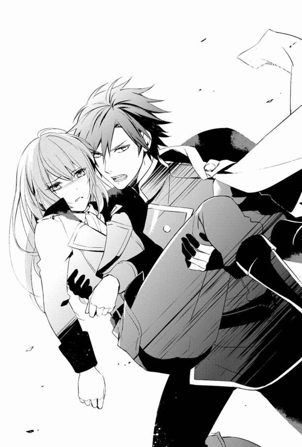
「キアラ！」
ちょうどカインさんが、私を抱え直してくれたところだった。
声と共に、前方の門が大きく開かれて、雪崩れるように兵士達が飛び出してくる。槍を構えて突進してくる兵士に、アラン配下の騎士達と戦っていた敵兵が、次々と葬られた。
アラン達と共に、私は吸い込まれるように門の中へと移動していた。
閉じられた門に、鉄の柵が下りた。
喧騒が一気に遠ざかり、私は自分が助かったことを知る。
私の意識を保つのは、そこまでが限界だった。堪えきれずに瞼が閉じる。すっと首の後ろを引かれるように、意識が遠のいていくのを止められない。
その時、誰かが私の頰に触れた。
「君はバカだ......」
カインさんから奪うように抱きしめられる感覚。その腕の力と匂いに、私はぼんやりと思う。
まだレジーは生きてる。
ほっとしたとたん、私の意識は暗転した。
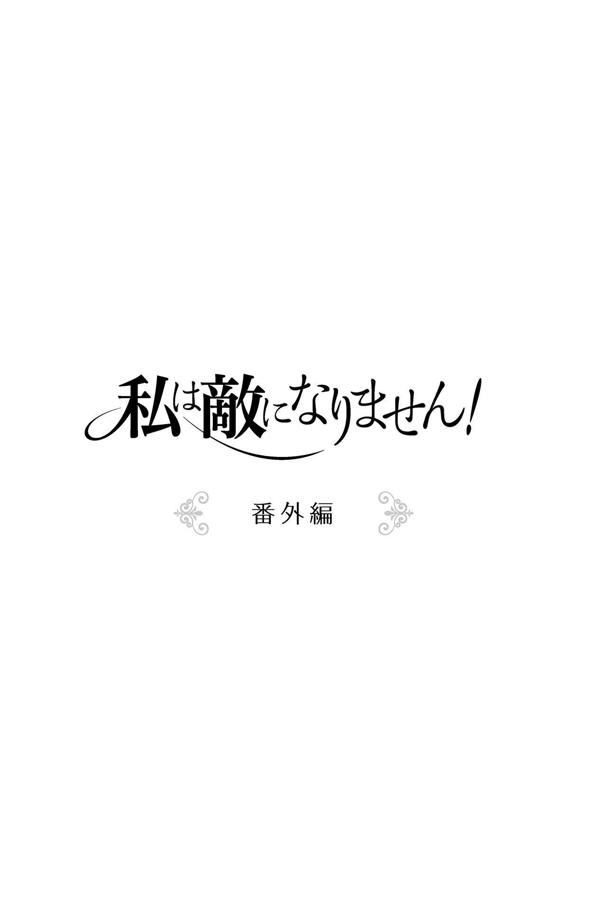
真夜中には貴方を数えて
そっと部屋の扉を開ける。
目の前にあるのは、エヴラール辺境伯の城館の長い廊下だ。
夜中を過ぎ、既に時間は夜中の一時。
点々と蠟燭の明かりが灯されているので、薄暗いながらも壁や床の様子が見える。防犯のために灯しているのだが、この世界の明かりは蠟燭か油灯が主流なので、前世の電気のように広い範囲を煌々と照らしてはくれない。
子供ならば嫌がるような薄暗さだが、転生したと気付かずに十四年、電気のない世界が普通だと思って暮らしてきた私に恐れるものなどない。
パトリシエール伯爵の館は、どこにそのお金があるのかと思うほど、夜も蠟燭を使って館内を明るくしていたけれど、教会学校なんて完全に消灯してたので、真っ暗でも動き回れる。
「厨房、厨房っと」
そっと扉を閉め、私は廊下を歩いた。
私はこの辺境伯の城館で暮らし始めたばかりだが、厨房の場所は一番に覚えた。食事をするのも厨房の隣の部屋、お茶を用意するにも、菓子を用意するにも厨房へ行かねばならないのだから。
布靴なので歩くと底が少し冷たい。昨日から急に寒さが増したのだ。
もうすぐ秋も終わりだなとか、冬用のしっかりとした底の靴を用意しないといけないなとのんびり考えていたのだが、夜中はやっぱり冷たさが段違いだ。
明日か明後日には気温もまた上がるかもしれないけれど、油断せずに早めになんとかしようと思いつつ、厨房へ到着した。
汲み置いてある水甕から、手持ちの硝子ガラスのデカンタに水を入れ、今度は部屋へ戻る。
深夜の館の中は静かだ。
外には見張りの兵もいるけれど、中は皆眠っているので静まり返っている。
だから物音などはよく聞こえた。
主に自分のぺたぺたという足音。デカンタの水が階段を上る時に跳ねて、ぽちゃりと立てる音。
さらには不意に開く扉のきぃっと蝶番がきしむ音とか......。え、この音がするってことは、誰か廊下に出てきた？
階段を上りきったところで、音がした方向を見る。
そして私は、少し離れた部屋の扉から顔を出したレジーと、目が合った。
彼も眠れなくて起きてしまったのだろうか。
白い簡素なシャツと暗い色のズボンはゆったりとした作りなので、寝間着だと思う。質はよさそうだけど絹じゃないのは、冬の足音が迫る頃合いなら当然か。暖かそうな暗色の毛織のガウンを羽織っている姿は、一歳しか違わないのにどこか大人っぽい。
この城館に来てまだ日の浅い自分が、真夜中に歩き回っていたことにばつが悪い気持ちになった。だから私はつい普通に話すのではなく、変なことを聞いてしまったのだ。
「えっと......レジーも飲む？」
とデカンタをちょっと持ち上げてみせた。すると目を瞬いたレジーが、ちょっと笑って私を手招いた。
えーっと、王子様の部屋とか、夜中に勝手に入っていいのかな。
「メイベルなら隣で寝てるよ。気にしないで」
本人にそう言われたのと、じっと廊下で立ってるのも寒いので、レジーの部屋にお邪魔してみた。
中に入ると、ふわりと暖かい空気に包まれた。見れば暖炉に火が入っている。レジーが自分で火をおこしたのだろうか。それともメイベルさんが気を使って、遅くまで火を燃やし続けていたのか。
部屋の内装も淡い色合いの風景画が飾られて、温かみがある。寝台の近くの壁に掛けられた大きなタペストリーも、美しい模様が織り込まれたものだ。
エヴラール辺境伯の館は、華美ではない。そもそもが国境の領地。何度も繰り返しサレハルドやルアインと戦ってきた土地だ。美しい絵画を飾る暇があったら剣を買え、みたいな考え方が領主一族に根付いているらしく、あまり装飾品は多くないので、ちょっと驚いた。
部屋に入ると、レジーがコップを渡してくれる。
「水、飲むんだろう？」
「ありがとう」
そもそも喉が渇いて厨房まで遠征してきたのだ。さっそく借りた木杯で水を飲む。
けれど胃に落ちていった水のせいで、内側からも冷えて思わず身震いする。部屋は暖かいけれど、冷えきってしまったらしい身体では寒い。早々に暖かい布団の中に潜りたい。
だがレジーも水が飲みたいようだったし、そもそも水を分けてあげようと思って部屋に入ったのだ。だから木杯に水を注いで渡す。レジーも一気に水をあおった。
「レジーは喉が渇いて目が覚めたの？」
「それもあるかな。キアラは？」
「ちょっとね。夢見が悪くて......」
私は時々だけど夜中に起きてしまうことがある。
それでも眠るのは好きだ。上手くいけば前世の夢が見られる。それなりに友達同士でいざこざがあったり、お父さんとお母さんが喧嘩してハラハラさせられたこともあったけれど、縋れる情が何もなかったこの世界よりは、優しい思い出が多いから。
「だけどすぐ寝直せるから、気にしないで。レジーはどうなの？」
「元から眠りが浅い質だから」
まだ十五歳だというのに、深く眠れないとか......気の毒に。だからついかわいそうになって言ってしまったのだ。
「何か寝つけるような方法探してみる？」
するとレジーが面白そうに口の端を上げた。
「何か方法があるの？」
言われて考える。私が思いつく方法はそれほど多くはない。そして子守唄など却下だ。王子様に上手くもない歌を聞かせるなんて、恥ずかしくてのたうち回ることになりそうだ。
だから順当なものを提案した。
「羊を数えるとか」
「羊？」
「うんそう」
レジーは不可解そうな顔をしたけれど、試すと言うので私は彼を寝台に追いやる。私は側に椅子を移動させてそこに座った。
「じゃあ横になって、目を閉じて」
素直に従ったレジーの首元まで、毛布やキルティングの上掛けを引き上げる。レジーのちょっとくすぐったそうな顔を見て、なんだか彼が急に子供っぽく見えた。
「口に出さなくてもいいんだけど、その状態で数えるの。羊が一匹、羊が二匹......」
数えてあげている私は、自然とレジーの寝顔を見つめることになる。
銀色の睫長いな。
どれだけ綺麗なお父さんとお母さんがいたら、彼のように整った顔立ちの子供が生まれるんだろう。ベアトリス夫人も美人だし、レジーとよく似てるよね。王家がそもそも美形一族なんだろうな。
そんなことを考えつつ、数える羊が三十匹になった時、レジーがため息をつきながら苦情を口にした。
「......これ、もしかして退屈になったり疲れたりしたら眠るだろう、っていうのを狙った方法？」
「かもしれない」
確かに私のほうは口が疲れてきた。しかもまだ身体が眠り足りないのか、ちょっと眠い。
「けど百匹までは数えるらしいって、どこかで聞いたような......」
「じゃあ、キアラが実践してみなよ」
そう言ってレジーはさっさと起き上がると、寝台から降りて私の側に膝をつく。
「え？ うわああっ」
「静かにしてキアラ。メイベルが起きちゃうよ」
突然レジーが私を持ち上げたのだ。お姫様だっこされたかと思うと、レジーの寝台に寝かされた。あげくに靴を脱がされる時に足先に彼の手が触れて悲鳴を上げそうになる。
驚いているうちに上掛けをきっちりと掛けられ、レジーは椅子に座った。
さっきと二人の位置が入れ替わった状態だ。
寝ている状態で顔を見下ろされて、なんだか恥ずかしい。
しかも寝台の中、レジーがいたからぬくもりが残ってて......うう、暖かくてもうここから出るのが嫌になりそうだ。私と違って冷え性じゃないんだろう、足下あたりまでちゃんと暖かい。ぬくぬくだ。
レジーのほうは楽しそうな表情で私の頭近くに手をついた。
「じゃ、数えるよ」
彼は自分が数えて、私がちゃんと眠るかを検証するつもりらしい。
っていうか、私がここで眠ったらマズイでしょ！ お互い成人前だけど、思春期の女子が男性の部屋で眠るとか問題すぎる。
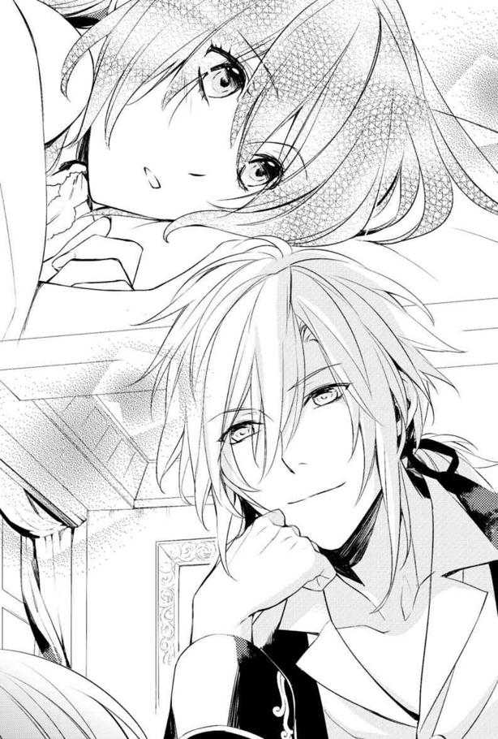
それにレジーが私に遠慮してソファで眠ったら、申し訳ないことになる。メイベルさんに見つかったら、王子になんてことをさせるんだと怒られそうだ。
考えた結果、やっぱりやめようと私が言い出す前に、レジーが数え始めた。
「キアラが一匹」
「は？」
「キアラが二匹、キアラが三匹......」
「ちょっ、なんで私!?」
ていうか私は四足の動物なんでしょうか。一人、二人って数えるんじゃないの？
レジーはくすくすと笑う。
「だってそのほうが私が楽しく数えられそうだから、キアラが五匹。それにキアラ、一匹二匹って数えるのが合ってるよね、キアラが六匹」
え、私、動物っぽい？
「うさぎっぽい感じ？ キアラが七匹」
「うさぎは一羽二羽でしょ」
「じゃ猫でもいいかな、キアラが八匹」
レジーさん、あくまでそれで数える気ですか。いいかげん恥ずかしいのでやめてくれませんかね。
「私は気に入ったんだけどな。キアラがいっぱいいたら、何か思いがけないことを集団でやってくれて面白そうで。キアラが九匹」
「ぐ......」
笑顔で語られるけど、私がもっといっぱいいたらいいのにとか、なんか私のこと好きすぎない？ と思えるような発言に、私は言葉が出なくなる。
止めないと羞恥心で息が止まりそうだ。とはいえやめさせる方法が思いつかないので、私はうーっと唸るしかなかった。
けれどレジーのほうも、私の唸り声にこれ以上はやめておいたほうがいいと判断したのだろう。
「数えるのが嫌なら、おとぎ話でもしてあげようか」
「うん、そっちのほうがマシ......」
羊の代わりに延々と数えられて疲れた私は、おとぎ話ならまだ恥ずかしくなくていいかと思い、うなずいた。
それでレジーが満足するならいいだろう。おとぎ話を一個さらっと聞いたら、眠くなってきたと言おう。効果があったからと噓ついて交代させて、そんでレジーを寝かしつけたら、熟睡していなくても部屋に戻ればいい。
そんな計画を胸に秘めて、レジーのおとぎ話に耳を傾ける。
「昔々、ある国の王子様が、一目ぼれをした女性と結婚しました」
レジーは語り始める。それは私が今まで聞いたことがないものだ。けど、ろくに寝物語を聞かされたことがなかった私は、この世界のおとぎ話はほとんど知らない。だから標準的なおとぎ話なのかな、と思っていた。
「王子様は子供にも恵まれ、お妃様と三人で幸せに暮らしていました。けれど、王子様の父親である王様は不満があったのです。なにせお妃様は貴族とは名ばかりの家の出身。それでも何か万民に自慢できるような美質や、人に誇れる特技があればよかったのですが、お妃様は人並みにはなんでもできるのですが、特技などはありません。十分に綺麗だと褒められる人でしたが、王様が期待するのは女神のように圧倒的な美しさでした」
ここまで聞いたところでは、ヒロインたるお妃様が、努力して幸せな生活を維持する話なのかと私は思っていた。けれどレジーの話はさらに暗くなっていく。
「王様は、優秀で美しい王子のために最高のものを望んでいました。王子の唯一の汚点がお妃様だとすら思っていたのです。王子の子供が奇跡のような美質を備えて誕生したので、なおさらに王様の不満はお妃様に向いてしまいます。そして王子様が病であっけなくこの世を去った時、その不満が行動となって現れました──王様は王子のお妃様を、王宮から追い出したのです」
レジーはゆっくりと話してはいたけれど、一気にここまで語ったので少し疲れたのだろう。数呼吸分だけ休んで、続きを口にした。
「その後、お妃様は城の外の屋敷で暮らしていましたが、間もなく盗賊に襲われ、生死もわからなくなりました。王様は王子の子供には母親が失踪したと教え込み、自分は心の平穏を取り戻すことができたのです」
私は......何を言っていいのかわからなかった。
子供に聞かせるには暗すぎて、おとぎ話としては夢がなさすぎるなと思った。でも王族に小さい頃からそういう教育をするための話かと思った。
王妃や王子妃にするのなら、誰もが納得するような完璧な者を選びなさい、というような。
思ったままの疑問を口にすると、レジーが苦笑いする。
「この話は教訓なんてどこにもない話だから、仕方ないかな」
「え、実話？」
聞いた私に、レジーは微笑むだけだ。......実話なんだなこれ。
「ああ教訓も今思えばあったかもしれないな。王子はそんな父親の感情を察して、自分の父親にもっと理解を求めるべきだった。王子の妃も、王様の態度が冷たいのはわかっていたのだから、少しは納得させられるように努力するふりでもしておけばよかった。けれど二人は恋した相手と結ばれた幸せで周りの様子に気付かず、むしろ善意に満ちていると信じすぎていた。だから王子は、自分が限りのある命を持つ生き物だと忘れて、結局愛した妻に悲惨な最期を遂げさせたんだ。そう考えると、大切な家族を守れない男の話とも考えられるかな」
......出てきた結論が、ずいぶん辛辣だ。
「おとぎ話のはずなのに、厳しいねレジー」
「昔の出来事に対して『どうするべきだったか』と考えるのは大事なことだと思うんだ。そこから見えることもあるだろうからね」
まさかレジー、全部の物事に脳内ツッコミしているんだろうか。
「あんまり考えすぎたらハゲるよ？」
私がぽろっとそんなことを口にしたせいで、レジーは珍しくぽかーんと口を半開きにしていた。
だってさ、現状でさえレジーって色々大変そうなのに、人の話も右から左に聞き流せないとなったら、ストレスで毛根が痩せ細るに違いない。おじさんになっても美中年でいてくれそうな造形の人なので、ぜひともレジーにはふさふさな銀の髪を維持してほしいのだ。
言い訳を頭の中でこねくり回しているうちに、レジーがくくっと笑い始めた。
「初めてだよ、ハゲるとか言われたの」
「あ......そっか。王子様にそんな暴言吐く人いないよね......あの、ごめん」
気安い言葉遣いを許してくれているので、つい身分差のことを忘れてしまっていた。そうだよね、誰も王子様にハゲるかも、なんて言うわけがなかった。
「謝らなくていいんだよキアラ。私が望んで、友達らしい付き合いを望んでいるんだ。......友達なら、それぐらい言うんだろう？」
「えっと......たぶん？」
この世界の貴族男子が「お前将来ハゲるんじゃないの？」「お前だって生え際ヤバイだろ」なんて話すのだろうか。そのへんはアランのほうが詳しそうな気がするが。今度聞いてみよう。
「まぁいいや、そうしたら、今度はキアラが何か話してよ」
「う、うん......」
ここで私は、自分の計画が失敗したと気付く。眠そうなふりするの忘れてた。
仕方ないのでおとぎ話をして、一段落ついたところで眠くなったから......と切り出そう。
しかし何を話そうかと私は迷う。この世界のおとぎ話は、有名らしいものを二つ三つ聞きかじっただけ。
教会学校で交流があったお嬢様達は、他にもたくさんのおとぎ話を聞かされてきたようだった。聞いたことのない主人公やタイトルを耳にして、私はそれを知ったのだ。
ほとんどが、王子様や貴族間との結婚を飾りつけた話。もしくは騎士に愛を捧げられ、その騎士が竜とかと戦って果てる悲恋。あとは平民と結ばれれば不幸になるという教訓系だったが。
......うん、王子相手か貴族相手じゃない話は、ことごとく悲恋だったよ。
この世界の貴族の親は、娘が政略結婚以外をしないように、小さい頃から洗脳し続けているのだなと生ぬるい気持ちになったものだ。
だからしっかりと話せそうなものって、前世の時に絵本で読んだりしたものだけだ。
「変な話でもいい？」
レジーに尋ねると、彼はうなずいた。
なので私は桃太郎の話をすることにした。これなら思い出せないということはないからね。
桃から生まれるというのは、この世界の神話でも「花の露から生まれた」とかそういうのがあるので、抵抗なく受け入れてくれた。
ただ、女神の子供だったんだろうという解釈をされる。鬼退治して英雄になるんだし、それでいいかと私はうなずいた。
そして桃太郎が旅立つ。
おじいさんおばあさんに、日持ちするお弁当を持たされて......。だんごってこっちの世界で見かけないから、そこは改変した。
次に桃太郎は仲間をつくる──が、そこで初めてレジーから質問が続いた。
まずは動物が人間の言葉を話せるのはおかしいと言われた。
魔獣でも会話が不可能なので、よけいにそう思ってしまうらしい。
......おとぎ話なんだから、そこはさらっと流してほしかったけど、じゃあ鳥っぽい服着てたとか、毛皮着た狼っぽい格好のマタギとか、サルっぽい動きのするする木に登れる身軽な人にした。
あとよっぽど雨が降らなかったりして、動物も飢えてたのかなとか言われたので、眠くて面倒だったから、みんな女の子にして桃太郎を好きになってしまったことにした。恋愛がらみなら、出会った瞬間一目ぼれして、ついていってもまぁ......納得してくれるだろうと。
レジーがくすくす笑っていたので、私が適当にでっちあげるのを楽しみにして、わざと難癖つけたのだろう。意地が悪い王子様だ。
そんなレジーと、少しずつ眠気に襲われて面倒になった私によって、桃太郎がハーレムを形成して、手下になった女性達を使って悪魔を倒す話になった。
変な話になったけどレジーは楽しかったのかな？ と心配に思ったが、私は眠くて瞼が落ちかけていたので、確認できなかった。
「めでたし......めで......」
主人公は英雄になったし、女の子を侍らせた上、金銀小判もざっくざくでめでたいだろう。
よしこれで終わったと思ったら、ベッドのぬくもりにのみ込まれるように、私は眠りに落ちた。
◇◇◇
彼の目の前には、あどけない表情で寝入ってしまったキアラの姿があった。
「......安心してくれてるんだろうな」
ぽつりと独り言を漏らしてしまう。
夜、レジーの眠りが浅いのはいつものことだ。幸いにして、長く眠らなければ体調が悪くなるほうでもない。
だから夜中に起きてしまい、ぼんやりと天井を見つめていた。けれどいつもと違ってすぐに眠りが訪れないので、少し館の中を歩き回ろうかと思ったところで、階段を上がってきたキアラを見つけたのだ。
デカンタを持っていたので、水がほしくて夜中に部屋を出たのだとはわかる。
起きているなら暇つぶしに付き合ってもらおうと招じ入れたが、話しているうちに、キアラがどうも寒がっているとわかった。肩をやや縮めている。部屋の暖かさが、彼女には足りなかったのだろう。
そう思って立場を入れ替えるために抱き上げたキアラの脚は、気の毒なほど冷たかった。
寝具を被ってかぶいれば暖かいだろう。そんなこちらの思惑どおり、キアラはほっとした顔をして......話しているうちに眠ってしまった。
「なんかちょっといいな」
自分の寝台で女の子が眠ってる様子に、なぜか和むものを感じた。
これが見知らぬ人物や、嫌悪を感じる相手だったら引きずりだしてしまいそうだな、とは思ったが。キアラはなんだか、自分の寝台の中に潜り込んだ猫みたいに見えるのだ。
とても気持ちよさそうに眠っているせいかもしれない。
撫でてみたいけれど、起こしてしまったらここから逃げるかもしれないと思うと、怖くて触れられない。ずっと......ここにいてほしいと思ってしまう。
「君は、どこから来たんだろうね」
貴族令嬢の教育を受けたはずなのに、本気でレジーが王子であることを忘れたような振る舞いをするキアラ。レジーが心の底から望んでも、アランでさえその一線は越えないようにしている。こんなことができるのは、何も知らない平民ぐらいだろう。
彼女は時々、王侯貴族のいない場所で育った人のようなことをする。
けれど気安く接してほしいと願ったのはレジーだったし、キアラはまさにそれを叶えてくれているので不満などない。
アランとは違う、もっと距離が近いかもしれない友達。
不思議だと思う。考え方も思うことも違うはずのに、どうして彼女とはどこか感覚が合うような気がするのだろう。
キアラをじっと見つめていると、なぜかどこかへ消え去ったはずの眠気が戻ってきて、頭をぼんやりさせ始める。とはいえ椅子に座ったままでは、さすがに自分も風邪をひくだろう。
かといってキアラを部屋に戻すのも、惜しい気がした。......人が側にいると、普段は眠れない気がするのに。
だから寝台の、キアラがいるほうとは反対の端に寝転がることにした。多少なりと振動や物音が伝わったと思うのに、キアラは全く起きる気配がない。
じゃあこれぐらいいいかなと思ったレジーは、キアラの髪に触れたのだが。
「いっ......」
寝ぼけて振り上げたキアラの脚が、レジーの脛に命中した。
「え、起きてるの？」
キアラが目を覚まして、レジーが隣で眠ろうとしたからわざと蹴ったのかと思ったのだが、彼女は相変わらず目を閉じたまま。静かに寝息を立てている。
その寝顔を見ていると、レジーはなんとなく意地悪な気持ちになってしまう。
「やっぱり部屋に戻してあげるの、やめよう」
離れてそのまま目を閉じたら......。寝つきが悪いはずの彼は、すっと眠りに落ちたのだった。
◇◇◇
目が覚めたらレジーと一緒の寝台で眠っていて、私は悲鳴を上げそうになった。
けれどよく見れば、なぜか私は丸めた毛布を抱きしめさせられていたし、レジーは人が四人は余裕で眠れる寝台の端にいたので......何もなかったようだが。
そして私がばたばたと身動きしたせいで、レジーも目を覚ましたようだ。
寝起きのレジーに気だるい表情を向けられて、私は心臓が跳ね飛びそうになった。眠そうなのに、なぜか色気が漂っているような気がして。
一方、私と目を合わせたレジーは、ややあってからくつくつと笑い始めた。
......なぜだ。
どうして人の顔を見て笑うのだろう。不可解だ。不愉快だと思いながら、私はまだ暗いうちなので今ならバレないと思い、自分の部屋へ急いで逃げ帰った。
しかし、私は水を入れたデカンタを忘れたままだった。部屋へ戻ってから気付いたがあとの祭りである。
そのことで色々とバレてしまったらしく、レジーと二人でメイベルさんの前に並んで座らせられ、じんわりとお説教されたのだった。
あとがき
このたびは、本書「私は敵になりません！」をお手に取って下さいましてありがとうございます。作者の佐槻奏多です。
初めて私の作品を読んで下さった皆様、そして何度か文庫本にてお付き合い下さっている方、そしてインターネット上で読んで下さっていた方々には、こちらでお目に書かれてとても嬉しく思っております。
さてこのお話は、インターネット上の『小説家になろう』さんのサイトにて連載させていただいている作品です（この本が出版されている頃も、まだ続いている予定です）。
気持ちの赴くまま、好き放題に書いていた作品だったので、こちらの出版社様の目に留まるという幸運に出会えるとは思いもよらず。連絡を頂いた時は結構びっくりしまして、動悸、息切れが落ち着くまで、五回ぐらいメールを見直したものでした。
紙の本にしていただける喜びを、今日も嚙みしめております。
作品を拾っていただくのは二度目なのですが、女性向けというには少々バイオレンスな方向に足先を突っ込んだ作品だったので、もっと可愛い作品を既に発刊していらっしゃったレーベルさんに、声を掛けていただけるとは思わなかったのです。
そうなんです。最後までお読みになった方はご存じかと思いますが、この話には戦闘シーンがあるといいますか、思いきりお話の中で戦争をしております。
そのためインターネット上でも「残酷な描写あります」と表示しておりました。直接的な描写をあまりしないようにして、かなりマイルドにしているつもりではありますが、どこまでがセーフゾーンかは人によって違いますので、悩みつつ書いております。
実を言うと、本当はもっと可愛いお話を書こうかと思っておりました。
最初の頃は、異世界に転生っていいなぁとか、ゲーム世界にっていうのも面白そうだから自分も書いてみたいと考えて、恋愛主体の話の素案をメモしたりしておりました。
その時は、王宮なんてきらびやかな場所が舞台で......と思っていましたが、どうせならもっと書いたことがないものを、好きに書こうと思ったのが、全ての発端だったのかもしれません。
自分のゲーム遍歴を思い浮かべた末、勢いで戦略系シミュレーションゲームの世界に飛び込んだら、を書こう！ なんて決めてしまったものの、今まで挑戦したことがなかった戦争物です。今も書き進めるたびに四苦八苦しておりますが、自業自得としか言いようがありません。
さて、このお話は主人公キアラが、自分が日本で生きていた前世を思い出した上、今生きている世界が、好きだったゲームに似ていることに気付くというものです。しかもゲームの主人公の仲間でもなく、途中で戦う敵キャラ中ボスの位置。そんなのは嫌だ！ と人生を変えようとしたら、思いがけずゲームの主人公達の仲間になっちゃった......というお話です。
そんな主人公キアラは、完璧少女ではありません。前世の記憶を持っているというアドバンテージはあるものの、人に誇れるほど器用なわけでもなく、記憶力がすごいというわけでもなく、剣を持たせても戦えない、わりと平凡な女の子です。
おかげで一つ一つ、何とか次の対策を考え、実行していくしかありません。
この一冊でなんとか魔術師にはなりましたが、その魔術も色々と制限があり、気の向くまま使うというわけにもいかなかったりします。
それでも彼女には、いつも気に掛けてくれる王子様や、強いゲームの主人公、護衛をしてくれる騎士、そして死後不思議な物体になってしまった師匠と、支えてくれる人がいます。
時には彼らに反発したり、意見がすれ違うこともありますが、それぞれに必要な時には力を合わせて協力してくれることでしょう。
最終的には、彼女なりの勝利を手にする話にしたいと思っております。
その途上では、キアラの恋愛についても決着がつく予定です。
正直に告白すると、お話を書き始めた当初は、この一巻分のお話とその後のラストしか構想がありませんでした。なにせ好きに書こうと思って始めたので、もし意欲が衰えてしまったら、そこで終わろうかとまで考えていたせいでした。
そんな、やや根性に欠けた作者ですが、現在も書き続けていられるのは、感想や励ましを下さった読者の方々がいたからです。本当にありがとうございます。
今後はインターネット上で応援してくださった方に加え、本を家に連れて帰って読んで下さる方々の存在も想像しながら、自分を「書け、書くんだ！」と叱咤することにしようと思います。
実はこれを書いている現在、まだ作業が残っている状態です。本にするために必要な作業にご尽力いただいております担当編集様、ありがとうございます。
また、この作品を美麗な絵で飾って下さったイラストレーターの藤 未都也様に感謝を。お忙しい中、引き受けて下さってありがとうございます。笑顔の素敵なキアラはもちろん、レジーやアラン達もみんな、とても魅力的に描いて下さって本当に嬉しいです。何より土偶なんて描かせることになってすみません。どうしても師匠がいる風景を絵で見たかったのです。
最後に、この本を出版するにあたりご尽力頂きました主婦と生活社の編集部の方々や校正様、印刷所の方々等、たくさんの方の手を借りて出版させて頂けたことを有り難く感じております。
そして何よりも、この本を選んで下さった皆様に感謝申し上げます。
二○十五年九月吉日 佐槻奏多
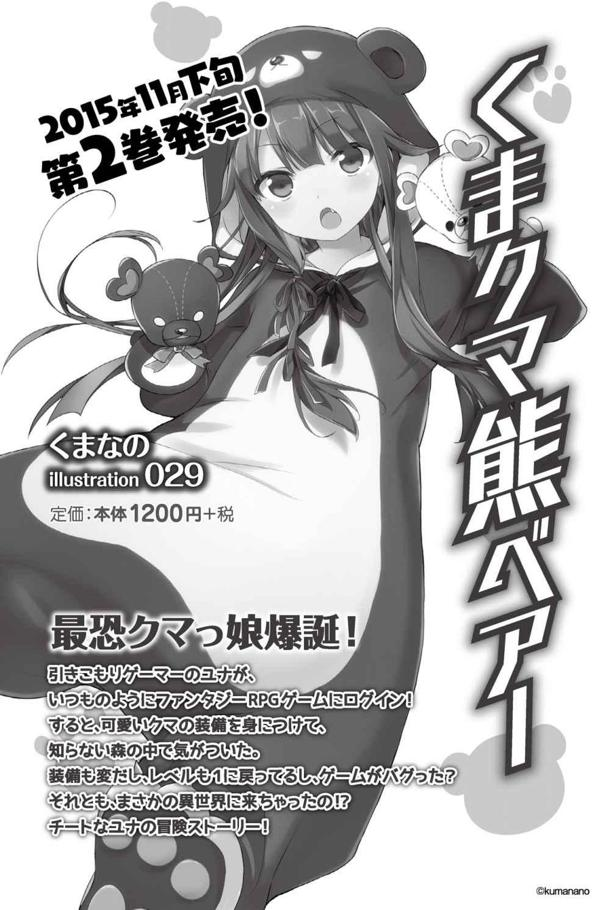
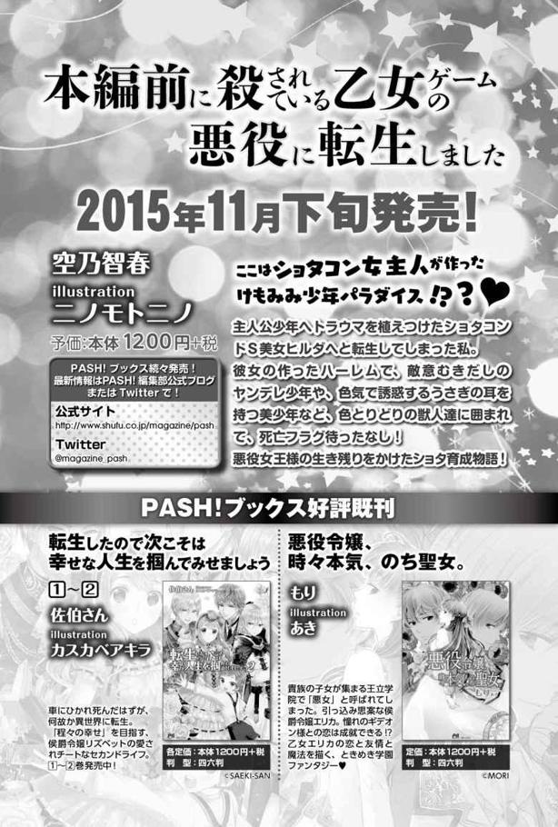
私は敵になりません！
著 者 佐槻奏多
編集人 春名 衛
発行人 永田智之
発行所 株式会社主婦と生活社
〒１０４-８３５７
東京都中央区京橋３-５‐７
http://www.shufu.co.jp/
イラスト 藤 未都也
編集協力・デザイン （株）ウェッジホールディングス
©Satsukikanata